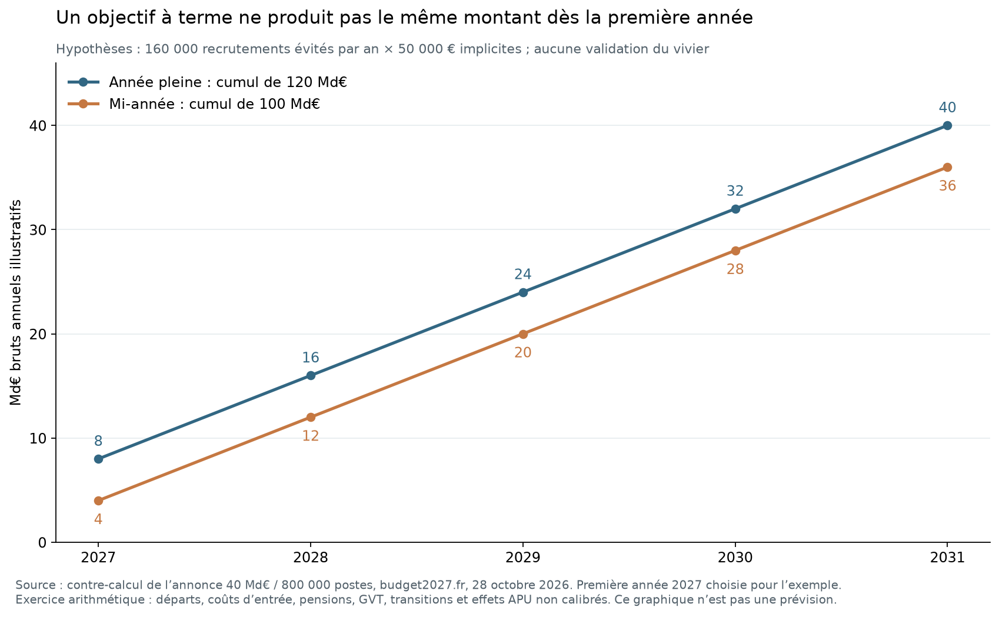

Ce que les réformes ont réellement produit
Lot 3 — Recherche arrêtée au 28 octobre 2026, synthèse rédigée le 30 octobre 2026. Ce dossier confronte les objectifs de réformes passées, françaises et étrangères, à leurs résultats mesurés, à leurs coûts et à leurs effets sur le service. Il examine aussi ce que l'IA permet d'établir aujourd'hui et audite les propositions chiffrées du débat public. Aucun total national d'économies n'est encore calculé : ce dossier fixe les règles et les ordres de grandeur que le catalogue de réformes et le modèle devront respecter.
1. Résultats qui changent le diagnostic
Les réductions d'effectifs existent, mais elles rebondissent ou se déplacent. Au Royaume-Uni, la fonction publique centrale passe de 481 000 à 384 000 ETP entre 2010 et 2016 (−20,17 %), puis remonte à 523 000 en 2026 (+36,20 % depuis 2016). En Irlande, le moratoire ramène les effectifs de 320 387 à 289 643 WTE entre 2008 et 2014 (−9,60 %), puis ils remontent à 317 495 dès 2017. Au Canada, les 45 000 personnes en moins de la Program Review comprennent 8 000 transferts hors périmètre. En Nouvelle-Zélande, les dépenses externes du Public Service augmentent de 7,18 % pendant la baisse récente des ETP, sans causalité de substitution établie. Une baisse d'effectifs mesurée sur un périmètre ne prouve donc ni une baisse durable, ni une baisse de la dépense totale. Voir note 05.
Les économies vérifiées sont très inférieures aux économies annoncées. Au Danemark, Digital Post réduit les crédits centraux de 48 M DKK en 2015, contre un potentiel de 244 M (19,67 %). Les fusions communales danoises produisent des gains administratifs réaffectés, sans économie sur les dépenses municipales totales. Aux États-Unis, le GAO ne certifie pas les 110,34 Md USD affichés par DOGE : 60,7 % des contrats déclarés relèvent de méthodes autres ou indéterminées. En France, la RGPP passe pour le titre 2 de 808 M€ bruts à 264 M€ nets en 2010 et de 935 M€ bruts à 373 M€ nets en 2011, après rétrocession catégorielle. Voir notes 05 et 06.
Les échecs coûtent souvent plus que les gains attendus. Le système de paie Phénix coûte encore 937,5 M CAD en 2024-25 ; son successeur est estimé à plus de 4,2 Md CAD, pour une cible initiale de 70 M CAD d'économies par an. Aux Pays-Bas, la réparation de l'affaire des allocations a déjà consommé 5,748 Md€ entre 2020 et 2024, sur 11,479 Md€ estimés. En France, Sirhen a été abandonné après environ 480 M€ de développement, selon l'audition de la Cour en 2020. Le coût d'une erreur doit inclure la réparation, les recours et les délais. Voir notes 05, 08 et 09.
Les budgets des agences financent surtout des missions, pas des sièges. Le jaune du PLF 2027 compte 423 opérateurs et 72,572 Md€ de concours publics, dont 16,366 Md€ de transferts d'intervention et 21,939 Md€ de taxes affectées. À l'Anah, 3 450,687 M€ sur 3 651,541 M€ de charges du budget initial 2026 sont des interventions, contre 25 M€ de personnel. La baisse du plafond d'emplois des opérateurs, −4 107 ETPT, comprend −3 248 ETPT d'abattements techniques de vacance, soit environ 79 % : ce ne sont pas des agents partis. La Cour relève 11 763 ETPT de moins dans l'État territorial entre 2012 et 2020, en partie compensés par des contrats courts. Voir note 06.
La simplification allège surtout les usagers et les entreprises. Les gains chiffrés sont majoritairement privés : 5 Md€/an potentiels pour les entreprises selon le Sénat en 2017 pour le choc de simplification, 37,5 Md€/an visés par la Commission pour les entreprises de l'UE en 2029. Côté État, les 320 M€/an associés à « Dites-le-nous une fois » sont annoncés au conditionnel. Aucun coût récent, réalisé et net, des normes des collectivités n'a pu être confirmé. Un allègement de charge privée ne finance pas une économie publique équivalente. Voir note 07.
L'IA économise du temps sur des tâches, pas encore des postes mesurés. Le rapport IGF–IGAS–IGA d'avril 2026 classe 20 % des agents (1,13 million) comme exposés, en précisant qu'il ne s'agit pas d'une estimation de gains de productivité. Les 226, 300 et 241 équivalents ETP estimés par France Travail pour trois outils n'ont entraîné aucune diminution d'ETP, selon la mission. L'expérimentation « L'Assistant » mesure 2,5 minutes gagnées sur un mail et 5,4 minutes sur une synthèse. À l'étranger, les gains de tâche sont réels mais hétérogènes : −40 % de temps en rédaction (Noy–Zhang), −25,1 % pour des consultants dans la frontière de capacité (Dell'Acqua), mais +19 % de temps pour des développeurs expérimentés (METR 2025). Sur l'emploi total, les registres danois excluent des effets moyens supérieurs à 2 % sur les heures et revenus à fin 2024. Voir notes 08 et 09.
Le plan à 140 Md€ additionne des objets de nature différente. Les 24 mesures du site budget2027.fr totalisent 138,366 à 145,366 Md€ selon les bornes affichées. Elles mêlent suppressions d'institutions, baisses de prestations, arrêts d'interventions, recettes de tarification et une cession d'actifs. La mesure 1, 40 Md€ pour 800 000 postes, implique 50 000 € par poste et par an, et les 800 000 représentent 34,78 % des 2,3 millions de départs annoncés. Le « rapport IGF-IGAS 2025 » qui fonde les 5 Md€ d'IA n'est pas identifié. L'Observatoire de la laïcité figure encore parmi les suppressions alors que ses missions ont été reprises en 2021. Voir note 10.
Un montant à terme ne se répète pas dès la première année. Avec 160 000 postes évités par an à 50 000 €, l'économie annuelle n'atteint 40 Md€ qu'en cinquième année. Le cumul sur cinq ans vaut 120 Md€ en année pleine ou 100 Md€ en convention de mi-année, et non 5 × 40 = 200 Md€. Ce calendrier est illustratif : ni le vivier, ni le coût d'entrée, ni les départs disponibles ne sont validés.

Le projet de budget 2027 retient un ordre de grandeur bien plus faible. Les schémas d'emplois proposés donnent +8 025 ETP à l'État et −1 209 chez les opérateurs. Avec les caisses sociales et hors formation initiale des enseignants et programmation militaire, le total retraité est de −1 076 ETP. Ce sont des flux proposés, pas des réalisations. Voir note 10.
2. Ce que chaque type de preuve permet d'établir
| Type de preuve | Exemples du lot | Ce qu'elle établit | Ce qu'elle ne permet pas |
|---|---|---|---|
| Série d'effectifs avant/après | Royaume-Uni, Irlande, Portugal, Nouvelle-Zélande | Ampleur et durée d'une contraction sur un périmètre | Causalité, transferts hors champ, coût net |
| Audit public ex post | NAO, GAO, Rigsrevisionen, Cour des comptes | Économies réalisées et écarts avec l'annonce | Transposition à la France sans test |
| Annonce ou potentiel | DOGE, choc de simplification, omnibus UE, site politique | Objectif et périmètre revendiqués | Réalisation, net des coûts, indépendance des lignes |
| Budget d'un organisme | Jaune opérateurs, Anah, Ademe, France Travail | Composition des charges, emplois sous plafond | Frais de structure supprimables |
| Exposition technique | OIT, rapport IGF–IGAS–IGA, Turing | Tâches susceptibles d'être transformées | Adoption, gain net, postes évitables |
| Expérience randomisée sur tâche | Noy, Dell'Acqua, METR, scribes, police | Effet causal sur une tâche définie | Part de la journée, qualité administrative, postes entiers |
| Enquête déclarative | GDS, DBT, DTA, bilan DITP | Usage et perception | Temps net mesuré, économie budgétaire |
| Registres d'emploi | Humlum–Vestergaard | Effet sur heures et revenus totaux | Gains futurs ou effets par tâche |
3. Conséquences pour le catalogue et le modèle
- Une économie se calcule par rapport à une référence explicite. Les réformes déjà engagées (Observatoire de la laïcité en 2021, loi de simplification n° 2026-403, foncière immobilière promulguée en août 2026, schémas d'emplois du PLF 2027) entrent dans la trajectoire de référence. Elles ne produisent pas un second gain.
- Le gain net retranche tous les coûts, une seule fois.
gain net = dépense réellement évitée − investissements annualisés − transition − fonctionnement supplémentaire − marchés de remplacement − correction des erreurs. Les cas Phénix, Sirhen et allocations montrent que ce dernier terme n'est pas marginal. - Un temps libéré n'est pas un poste supprimé. Il devient une économie seulement si des crédits ou des recrutements sont effectivement évités. Les paramètres d'IA restent par tâche ; les parts de temps dans le poste, les taux d'adoption et la conversion en postes entiers sont vides tant qu'ils ne sont pas mesurés.
- Le non-remplacement utilise le coût d'entrée évité, plafonné par les départs définitifs réels du vivier concerné, et non 50 000 € uniformes appliqués à 800 000 postes.
- Les annonces ne s'additionnent pas. Treize recouvrements potentiels ont été repérés entre les 24 mesures du plan audité. Chaque réforme du catalogue sera rattachée à un seul vivier, appliquée au reliquat dans l'ordre retenu par la méthode (structures, simplification, mutualisation, puis IA).
- Chaque piste chiffrée appelle un pilote mesuré à 24–36 mois : coûts internes et externes, volumes, heures et postes, qualité des décisions, erreurs, délais et accès pour les publics fragiles, avec un seuil d'acceptation fixé avant le test.
4. Ce qui manque encore
- Le coût récent et net des normes des collectivités (rapport CNEN inaccessible).
- Le texte opposable de l'AI Omnibus, le contenu du livre « Le Casse du siècle » et l'origine du vivier de 800 000 postes.
- Les coûts complets par outil d'IA et les postes entiers effectivement évités en France.
- Les bilans nets de la revue des agences 2025-2026, au-delà des 2 Md€ annoncés que le SGG ne valide pas.
- Des évaluations causales françaises de simplification en ETP publics, au-delà des procédures et des démarches dénombrées.
La contre-vérification du lot porte sur 98 chiffres décisifs ; aucun n'est contredit par sa source. Voir 00_verification_lot3. Le catalogue de 25 fiches A–M, le registre des viviers, les quatre scénarios et leurs sensibilités constituent l'étape suivante.
Réformes étrangères : résultats observés, coûts, périmètres et conditions de transposition
Consultation : 28 octobre 2026. Le dossier couvre 22 cas dans 17 pays demandés au chantier 05 : Danemark, Estonie, Pays-Bas, Royaume-Uni, Canada, Nouvelle-Zélande, Suède, Irlande, Portugal, Grèce, Italie, Allemagne, Norvège, Singapour, Corée et Japon, États-Unis. France Stratégie 2017 sert de référence méthodologique. Ce lot étudie des réformes ; il ne remplace pas la base harmonisée 03, les autres comparaisons par fonction 04 ou le chiffrage français ultérieur.
1. Synthèse
-
[FAIT] France Stratégie compare 88,5 emplois APU/1 000 habitants en 2015, et demande de regarder aussi l'emploi financé indirectement et les consommations intermédiaires. Ce repère historique n'est pas un diagnostic actuel. France Stratégie, 2017-12-21, PDF 9 / p 7 ; pp 5-6 et 13-15.
-
[FAIT / ESTIMATION] Danemark : 271→98 communes en 2007, soit -63,84% de structures. Cela ne représente pas autant de postes en moins. Statistics Denmark, date non précisée, nomenclature 2007.
-
[ESTIMATION] Fusions danoises : économie relative administrative 0,1% en 2007 puis 10,4% en 2011 dans l'étude DiD ; les effets apparaissent après 2–3 ans. L'investissement et l'amortissement sont exclus. Blom-Hansen Houlberg Serritzlew, 2014, PDF 13 / p 801.
-
[FAIT] Une synthèse danoise 2016 ne trouve pas d'économie sur les dépenses municipales totales : gains administratifs réaffectés. Réduire un support et réduire le budget total sont deux résultats différents. KORA / Kurt Houlberg, Politik, 2016, résumé scientifique consulté, texte intégral de l’article non lu.
-
[FAIT / ESTIMATION] Digital Post : 48 M DKK de crédits centraux réduits 2015, face à 244 M de potentiel, soit 19,67%. Le milliard annuel sectoriel annoncé n'est pas confirmé. Rigsrevisionen, 2016-01-27, PDF 3 / p 2.
-
[ESTIMATION / HYPOTHÈSE] X-Road : 1100 années de temps estimées pour 2019 reposent notamment sur 15 minutes par requête humaine ; elles ne constituent pas 1100 emplois publics supprimés. Information System Authority Estonia, 2020, PDF 15.
-
[FAIT / ESTIMATION] Pays-Bas SCM : cible −25%, résultat normé affiché près de −20% au 01/03/2007, base 2002. Il s'agit de charges d'information des entreprises. Ministerie van Financiën, 2008, article 7, tableau des indicateurs.
-
[FAIT] Allocations néerlandaises : 5,748 Md€ exécutés 2020-24 sur 11,479 Md€ estimés, dont 1,260 Md€ d'exécution Finances déjà dépensés. Le total prévu n'est pas une dépense annuelle observée. Algemene Rekenkamer, 2025-05-21, PDF 22, tableau 8.
-
[FAIT] Fin 2024, 1276 demandes supplémentaires achevées sur 8370 déposées ; le coût d'une erreur doit inclure la réparation et les délais de recours. Algemene Rekenkamer, 2025-05-21, rubrique réparation.
-
[FAIT / ESTIMATION] Civil Service UK, série ONS révisée : 481 000 ETP 2010 T2→384 000 en 2016 T2, soit -20,17%, puis 523 000 en 2026 T2, +36,20% depuis 2016. Office for National Statistics, 2026-09-15, CSV C9KQ.
-
[FAIT] NAO : 2,49 Md£ de baisse salariale annualisée réelle 2010-2014, corrigée du périmètre ; ce n'est pas un bilan net complet des réformes. Son millésime d'effectifs reste séparé de l'ONS actuel. National Audit Office, 2015-06-11, PDF 6-8 / pp 4-6.
-
[FAIT] Program Review Canada : environ 45 000 personnes en moins en cinq ans, dont 8000 transférées hors périmètre, et 1 Md CAD de restructuration. Le 16,9 Md CAD du Budget 1995 est un cumul prévisionnel triennal. Canada School of Public Service, 2025, Workforce; Department of Finance Canada, 1995-02-27, PDF 9.
-
[FAIT] Phénix : 1200 postes de conseillers retirés/550 postes créés au centre, catégories différentes ; cible 70 M CAD/an. Pas de réduction harmonisée démontrée de toute la fonction paie. Auditor General Canada, 2026-03-23, PDF 6 / p 1; House of Commons Canada, 2018-11, PDF 9.
-
[FAIT] Phénix : 937,5 M CAD de dépenses 2024-25, fonctionnement et surcoûts mêlés, hors successeur/dommages. Audit 2026 : plus de 233 000 transactions et 133 000 personnes concernées fin 09/2025 ; futur Dayforce estimé à plus de 4,2 Md CAD. Treasury Board Secretariat Canada, 2025, tableau; Auditor General Canada, 2026-03-23, PDF 3-4.
-
[FAIT] Nouvelle-Zélande historique : 88 507 personnes 1986/36 374 core Public Service 1993 ne prouvent pas une réduction équivalente de l'État financé ; entreprises publiques et missions ont changé de champ. Public Service Commission New Zealand, date non précisée, Age of Reform; Public Service Commission New Zealand, date non précisée, tendances.
-
[FAIT / ESTIMATION] Nouvelle-Zélande récente : 65 699 ETP 12/2023→62 654 en 06/2025→63 912 en 06/2026. Dépenses externes Public Service 611,1→655,0 M NZD, +7,18%, sans causalité de substitution établie. Public Service Commission New Zealand, 2026, tableaux emploi et prestataires.
-
[FAIT] Suède : audit 2021, gains de support souvent réinvestis dans le support. 171 agences clientes en 2025 ne valent pas un bilan d'économies ; les 125 guichets d'accueil relèvent d'une autre activité. Riksrevisionen, 2021-03-02, PDF 1-2; Statens servicecenter, 2026, 2025.
-
[FAIT / ESTIMATION] Irlande : 320 387→289 643 WTE 2008-2014, -9,60%, puis 317 495 en 2017. Le recul 2007-2014 du salaire brut,−11%, n'isole pas le moratoire. Public Service Pay Commission Ireland, 2018-08, PDF 21 / p 13, tableau 2.2.
-
[EXTRAIT] Simplex : communiqué 2019 attribuant plus de 267 M€/an à 40 mesures, tous bénéficiaires ; le rapport d'évaluation intégral n'a pas été lu. Aucun montant net APU n'est retenu. Governo de Portugal, 2019-07-05, bilan 05/07/2019.
-
[FAIT / ESTIMATION] Portugal : environ 750 000→660 000 personnes 2010-2014,−12% ; salaire/PIB−2,4 points 2010-2015 ; emploi+1,2% fin 2014-fin 2016 après restaurations. Prix, heures et missions empêchent un coefficient unique. International Monetary Fund, 2017-08-16, PDF 18-19 et 24 / pp 17-18 et 23.
-
[FAIT] Grèce : règle d’une entrée pour cinq retraites, cible 150 000 personnes d'ici 2015 annoncée atteinte 2013 par l'évaluation OCDE. Aucune économie nette attribuable n'est isolée ici. OECD / European Stability Mechanism, 2020, PDF 21, encadré 2.
-
[FAIT] Italie : plus de 350 000 personnes en moins 2001-2018, période plus large que le blocage ; quota État 25% de dépense des sortants 2016-18→100% en 2019, pas quota identique de personnes. Banca d'Italia, 2020, PDF 13 / p 11; Camera dei deputati, date non précisée, Facoltà assunzionali.
-
[FAIT] Allemagne : fin 2022, 33 bouquets OZG/575 disponibles nationalement selon NKR, soit 5,74%. Ce constat de couverture historique n'est ni l'état 2026 ni une économie en ETP. Nationaler Normenkontrollrat, 2022, PDF 5.
-
[FAIT] NAV : synthèse 2014 décrit démarrage défavorable et progrès hétérogènes après deux ans. 50 M NOK financent l'évaluation, pas le coût de transition ; bilan net manquant. Arbeids og sosialdepartementet, 2014, section évaluation NAV.
-
[FAIT / ESTIMATION] Singapour : VITAL sert plus de 100 agences ; aucun gain net vérifié. Corée : tableau KONEPS 6,8249 Md USD dont 82,11% privé, face à 8 Md du récit, non réconciliés. Government Singapore, 2026-10-16, Services; OECD, 2016, PDF 48-49 / pp 47-48.
-
[FAIT / ESTIMATION] Japon : 538 430→527 477 MJPY sur parc SI de référence 2020,−2,03% nominal FY 2024 ; −14% après retraitement, cible −30%. Digital Agency Japan, 2026-06-26, PDF 2.
-
[FAIT] DOGE : GAO ne certifie pas 110,34 Md USD affichés. Sur 61 Md de contrats déclarés, 37 Md(60,7%) relèvent d'autres méthodes ou de méthodes indéterminées ; 7,2 Md(11,8%) ont en plus des identifiants absents. OPM seule :3037→1985 personnes ; CBO :7,9 Md de crédits FY 2025 annulés, objet distinct. Government Accountability Office, 2026-08-06, tableaux 2/4; Government Accountability Office, 2026-07-20, PDF 1; Congressional Budget Office, 2025, §loi 119-28.
La synthèse contient 27 résultats et 1121 mots selon le compteur reproductible du script, liens exclus du comptage. Aucune case nette manquante n'est remplacée par zéro et aucun écart étranger n'est converti automatiquement en postes français supprimables.
2. Tableau des indicateurs décisifs
Les qualificatifs d'objet sont essentiels : une prévision, une estimation de temps, un crédit réduit et une dépense exécutée ne sont pas interchangeables. > et ≈ conservent les bornes et approximations de la source. L'unité monétaire et les prix restent ceux du document ; aucun total transnational n'est calculé.
| Indicateur | Valeur | Unité | Année | Champ / définition | Source (URL) | Page/tableau | Statut | Note |
|---|---|---|---|---|---|---|---|---|
| DNK — Effet relatif dépenses administratives fusionnées | = 10,40 | pct_des_depenses_administratives | 2011 | estimation_source_quasi_experimentale | DK_DID | PDF 13 / p 801, résultats puis conclusion | ESTIMATION | Dépenses courantes nettes par habitant, prix 2011, champ 2011 corrigé ; investissement et amortissement exclus. |
| DNK — Réduction crédits administration centrale | ≈ 48 | millions_DKK | 2015 | reduction_credit_budgetaire | DK_POST | PDF 3 / p 2, conclusion | FAIT | SKAT et police uniquement ; ne prouve pas économie nette consolidée. |
| EST — Temps valorisé par RIA, année précédente | ≈ 1 100 | annees_de_temps_de_travail | 2019 | estimation_source_modelee | EE_RIA | PDF 15 / p 15, X-tee | ESTIMATION | Temps d'usagers et évitement de visites ; aucune preuve de 1100 postes supprimés. |
| NLD — Réduction charges entreprises publiée | = 20 | pct_charges_administratives_entreprises | 2007 | estimation_source_SCM | NL_SCM | Article 7 tableau Realisatie 2007 ; arrêté 01/03/2007 | ESTIMATION | Texte près de 20% ; tableau 20. Coûts normés d'information des entreprises, pas économie APU observée. |
| NLD — Dépenses réparation déjà exécutées | = 5 748 | millions_EUR | 2020-2024 | depense_executee | NL_TOESLAGEN_PDF | PDF 22 / p 22, tableau 8 | FAIT | |
| GBR — Civil Service UK FTE série C9KQ | = 384 | milliers_ETP | 2016 Q 2 | effectif_vintage_2026 | UK_ONS | CSV C9KQ, ligne période 2016 Q 2, publication 15/09/2026 | FAIT | Série actuelle révisée, arrondie au millier ; ne pas raccorder sans correction aux niveaux du rapport NAO 2015. |
| GBR — Baisse annualisée salariale réelle 2010-2014 | = 2 490 | millions_GBP_reels_par_an | 2010-2014 | variation_reelle_perimetre_corrige | UK_NAO | PDF 8 / p 6, point 6 ; PDF 6 / p 4 | FAIT | Le mot net vise les effets salariaux/grades dans cette mesure, pas les coûts complets de réforme. |
| CAN — Économies Program Review annoncées Budget 1995 | = 16 900 | millions_CAD_cumul_trois_ans | 1995-1998 | prevision_budgetaire | CA_BUDGET 95 | PDF 9, Total direct impact of budget measures, Program review | FAIT | 3,9+5,9+7,2=17,0 aux montants affichés ; total publié 16,9 conservé, chiffres arrondis. Pas 16,9 Md/an. |
| CAN — Dépenses Phoenix tableau annuel | = 937,50 | millions_CAD | 2024-2025 | depense_executee | CA_PHOENIX 25 | Tableau total ; page miseàjour 07/11/2025, OPENprimaire archivé | FAIT | Inclut fonctionnement normal et surcoûts ; exclut système successeur, dommages, opportunités. Ce total n'est pas le surcoût net. |
| CAN — Transactions en retard centre paie | > 233 000 | transactions | 2025-09-30 | stock_non_resolu | CA_MODERN 26_PDF | PDF 3 / piii et PDF 13-14 / pp 8-9 | FAIT | Transactions, pas autant de personnes. |
| NZL — Public Service Departments FTE | = 63 912 | ETP | 2026-06 | effectif_perimetre_public_service | NZ_ACTUEL | Employee numbers quarterly table | FAIT | Montants arrondis ; source calculevariations àpartir nonarrondis. |
| NZL — Contractors et consultants Public Service | = 655 | millions_NZD | 2025-2026 | depense_executee | NZ_ACTUEL | Même section annual analysis 2025/26 | FAIT | Pas preuve de substitution causée par les réductions ; totalité non comparable à seule OPEX. |
| SWE — Agences utilisatrices services administratifs | = 171 | agences | 2025 | deploiement_service | SE_CENTRE | År 2025, Vårhistoria | FAIT | Adoption ne mesure pas économies nettes. |
| IRL — Total Public Service WTE | = 289 643 | ETP_WTE | 2014 | effectif_WTE | IE_COMMISSION | PDF 21 / p 13, tableau 2.2 | FAIT | |
| PRT — Impact annuel 40 mesures Simplex | > 267 | millions_EUR_par_an | 2017-2018 | estimation_communiquee | PT_SIMPLEX | Bilan 05/07/2019, section 267 milhões | EXTRAIT | Évaluation sous-jacente 40 mesures non lue ; total État+entreprises+citoyens, pas économie budget État. |
| PRT — Government employment | ≈ 660 000 | personnes | 2014 | effectif_arrondi | PT_IMF | PDF 18 / p 17, §3 | FAIT | |
| GRC — Cible baisse emploi APU annoncée 2015 | = 150 000 | personnes | 2015 | objectif_atteint_declare | GR_ESM | PDF 21 / p 21, Box 2 | FAIT | Source indique cible atteinte 2013 ; ne reconstitue pas série comparable complète. |
| ITA — Baisse effectif public 2001-2018 | > 350 000 | personnes | 2001-2018 | variation_descriptive | IT_BANK | PDF 13 / p 11, §3.1 | FAIT | Plusde 350 000, près 10% ; périodeplus largequegel 2008, ne pas tout attribuer auxquotas. |
| DEU — Services OZG disponibles toutterritoire | = 33 | bouquets_de_services | 2022 | deploiement_service | DE_NKR | PDF 5, introduction, deux mois avant échéance 2022 | FAIT | Constat 2022, pas état 2026 ; disponibilitéfront/territoire, pasnombreETP. |
| NOR — Budget initial programme évaluation NAV | = 50 | millions_NOK | 2007-2014 | budget_evaluation | NO_NAV | Chap 604/EvalueringenavNAVreformen, OPENlignes 1163-1182 | FAIT | Budget de l'évaluation, pas coût de transition de la réforme. |
| SGP — Agences publiques servies VITAL | > 100 | agences | 2026 | deploiement_service | SG_VITAL_HOME | Accueil/OurServices, miseàjour 16/10/2026 | FAIT | RH-finance-achats ; aucun effectif supprimé ou économie nette vérifié. |
| KOR — Économie coûts transaction total tableau 2.6 | = 6 824,90 | millions_USD_par_an | 2009 | estimation_source_couts_transaction | KR_KONEPS | PDF 49 / p 48, tableau 2.6 | ESTIMATION | Millésimeétude 2009 citédansrécit ; tableauquestionnaire 2014-15 sansannéeobservationunique confirmée. |
| JPN — R 6 dépenses effectives nominales | = 527 477 | millions_JPY | 2024 | depense_executee | JP_RESULT 24 | PDF 2, totalC | FAIT | Périmètre 2020 corrigé comparabilité, pas coût complet transition national. |
| JPN — R 6 dépenses hors facteurs exogènes | = 465 543 | millions_JPY | 2024 | depense_retraitee | JP_RESULT 24 | PDF 2, totalB | FAIT | Retraitement inflation/coûts de travail/autres facteurs explicitéssource ; pas décaissement nominal. |
| USA — DOGE total contract grants leases affiché | = 110,34 | milliards_USD | 2026-07-07 | allegation_doge_non_validee | US_DOGE | GAO 26-108 615, tableau 2 | FAIT | Chiffre décritparGAO ; pas économie certifiée ; ne pas annualiser. |
| USA — OPM headcount | = 1 985 | personnes | 2026-03-31 | effectif_agence_OPM | US_OPM | PDF 1, figure 1 | FAIT | Risquescompétences etcapacité déjà relevés ; pas emploisredondantsdémontrés. Figure image relue visuellement ; valeurs absentes de la couche texte PDF. Empreinte de la figure conservée. |
| USA — Crédits discrétionnairesFY 2025 annulés loi 119-28 | = 7,90 | milliards_USD_autorisation_budgetaire | 2025 | reduction_autorisation_budgetaire | US_CBO | RapportSequestration 2025, §aprèsOMBfinalcaps, OPENprimairearchivé | FAIT | CréditsFY 2025, pas bilan net toutesannées DOGE ni mesureproductivité administrative. |
Les 92 observations complètes sont dans data/reformes/05_indicateurs.csv ; 29 calculs sont dans 05_calculs.csv avec formule et identifiants d'entrée. Les comparaisons entre stocks avec champs non constants (Nouvelle-Zélande historique, catégoriesde paiePhénix) ne produisent pas un pourcentage d'efficacité.
3. Monographies et dossiers de réforme
3.1. DNK — Fusions communales de 2007
Institution, missions et preuve (2005-2011). Communes, écoles, action sociale, services techniques ; missions transférées entre niveaux. Quasi-expérience sur coûts administratifs, pas recensement de postes économisés. Sources : Statistics Denmark, date non précisée ; Blom-Hansen Houlberg Serritzlew, 2014 ; KORA / Kurt Houlberg, Politik, 2016. Les pages et objets chiffrés sont repris dans le tableau et 05_indicateurs.csv.
Avant/après et finances. 271 communes deviennent 98. Étude DiD : économie relative administrative de 0,1% en 2007 puis 10,4% en 2011 ; dépenses courantes nettes par habitant corrigées au champ 2011 et prix 2011. Baisse de dépenses municipales totales non établie.
Transition et périmètre. L'étude principale exclut investissement et amortissement ; aucun coût de transition complet n'est identifié dans les pièces lues. La synthèse de recherche 2016 indique réallocation vers d'autres politiques, sans économies identifiables sur dépenses totales. Une économie administrative peut financer une autre mission.
Service et causalité. La synthèse ne détecte pas d'amélioration générale de l'efficience des prestations ; la proximité démocratique et l'accès doivent être évalués séparément. DiD avec 32 communes non fusionnées et 239 anciennes communes fusionnées en 66 entités, cinq années après réforme. Contrôles de besoins et correction de fonctions ; absence de randomisation, comptabilité locale et administration dans les établissements imparfaitement observées.
[HYPOTHÈSE de réforme à tester en France]. Tester la mutualisation sur un périmètre de missions identique ; cartographier communes et intercommunalités françaises sans multiplier 10,4% par tous leurs agents. Validation à 2–3 ans : À 24 et 36 mois : coût administratif complet interne+prestataires par dossier et habitant ; dépenses totales de missions ; investissements ; délais, distance d'accès, satisfaction et participation démocratique. Comparateurs locaux sélectionnés avant fusion.
Confiance : ÉLEVÉE_pour_effet_local_sur_couts_MOYENNE_pour_bilan_total. [NON TROUVÉ] Bénéfice net complet comparable : case vide, sans valeur nulle ; potentiel français national en emplois/euros non identifié.
3.2. DNK — Digital Post obligatoire
Institution, missions et preuve (2013-2015, audit 2016). Courrier officiel des ministères, collectivités et régions ; centralisation d'un canal de notification. Audit indépendant distingue potentiel et crédits réduits. Sources : Rigsrevisionen, 2016-01-27. Les pages et objets chiffrés sont repris dans le tableau et 05_indicateurs.csv.
Avant/après et finances. Potentiel sectoriel d'environ 1000 M DKK/an ; composante centrale 244 M. Crédits 2015 effectivement réduits d'environ 48 M, principalement SKAT et police, soit 19,67% du potentiel central ; pas un taux national de réalisation du milliard.
Transition et périmètre. Coûts initiaux/récurrents et assistance aux exclus non réconciliés dans l'extrait de rapport disponible ; économie nette laissée vide. Dans les collectivités, une partie des gains convenus est réaffectée aux services de bien-être ; une réduction de dotation ne suffit pas à prouver une économie économique équivalente.
Service et causalité. Le mandat vise aussi un service accessible et flexible. L'audit financier ne démontre pas l'équivalence d'accès ou le traitement des personnes exemptées. Audit des crédits et critique des hypothèses de la business case ; robuste pour les 48 M, pas une expérimentation d'impact utilisateur.
[HYPOTHÈSE de réforme à tester en France]. Levier plausible sur affranchissement et manipulations ; distinguer coût postal évité et temps réaffecté, garantir notification juridique et solution assistée. Validation à 2–3 ans : Avant généralisation puis à 24/36 mois : volumes papier résiduels, frais postaux réels, coûts SI/assistance, taux de réception valide, recours et délai par démarche.
Confiance : ÉLEVÉE_sur_audit_partiel. [NON TROUVÉ] Bénéfice net complet comparable : case vide, sans valeur nulle ; potentiel français national en emplois/euros non identifié.
3.3. EST — X-Road/X-tee interopérabilité
Institution, missions et preuve (2001-2019, annuaire 2020). Infrastructure d'échange sécurisé entre registres et systèmes publics/privés ; évitement des pièces et visites répétées. Déploiement avéré ; gains de temps modélisés, économie budgétaire non identifiée. Sources : Information System Authority Estonia, 2020. Les pages et objets chiffrés sont repris dans le tableau et 05_indicateurs.csv.
Avant/après et finances. RIA estime 1100 années de temps gagnées en 2019, avec 15 minutes économisées par requête humaine et une part supposée de 3% de requêtes humaines. Le temps usager ne constitue pas une masse salariale publique évitée.
Transition et périmètre. Budget complet infrastructure, cybersécurité et adaptations des systèmes métiers non réconcilié ici ; pas de bénéfice net chiffrable. Les échanges machine-machine n'ont pas une durée de visite humaine évitée démontrée ; ni conversion en emplois ni pourcentage de PIB ne sont retenus.
Service et causalité. Les registres de référence, habilitations et journalisation doivent accompagner l'échange ; aucune série avant/après de qualité comparable n'a été reconstituée. Calcul d'hypothèses de l'opérateur, sans contrefactuel ni chronométrage indépendant identifié ; confiance faible pour le montant de productivité.
[HYPOTHÈSE de réforme à tester en France]. Transposer le principe du partage autorisé et du droit à ne pas fournir à nouveau une pièce, après examen juridique et de qualité des registres ; ne pas copier 1100 en ETP. Validation à 2–3 ans : Échantillons horodatés de démarches avant/après, minutes séparées agents/usagers, taux de réutilisation sans erreur, incidents et recours ; bilan complet des coûts à 24/36 mois.
Confiance : ÉLEVÉE_sur_architecture_FAIBLE_sur_economies. [NON TROUVÉ] Bénéfice net complet comparable : case vide, sans valeur nulle ; potentiel français national en emplois/euros non identifié.
3.4. NLD — Standard Cost Model et réduction de 25% des charges
Institution, missions et preuve (2002-2007). Obligations d'information imposées aux entreprises ; coordination Finances et ministères producteurs de normes. Objectif et réalisation normée publiés, pas réduction de l'emploi public. Sources : Ministerie van Financiën, 2008. Les pages et objets chiffrés sont repris dans le tableau et 05_indicateurs.csv.
Avant/après et finances. Budget exécuté 2007 : cible 25%, réalisation affichée 20% au 01/03/2007, décrite comme près de 20% par rapport au 31/12/2002. Objet : charges des entreprises, pas dépenses de fonctionnement de l'État.
Transition et périmètre. Coûts d'étude, de modification des procédures et d'application publique non isolés ; économie nette APU manquante. Une obligation retirée peut déplacer une tâche vers l'autorité ; il faut mesurer les deux côtés. L'évolution ultérieure des obligations n'est pas reconstruite.
Service et causalité. La réduction SCM ne mesure pas directement qualité du contrôle, protection des tiers ou baisse effective du temps de chaque entreprise. Comptabilité de charges normées fondée sur fréquence×temps×coût, vérification ex post de l'expérience utilisateur encore nécessaire ; pas preuve causale de 25% de productivité publique.
[HYPOTHÈSE de réforme à tester en France]. Utiliser un registre d'obligations et des mesures de temps ciblées ; séparer charge des usagers et temps de l'administration pour éviter double comptage avec la simplification nationale. Validation à 2–3 ans : À 24/36 mois : obligations réellement supprimées, charge observée par taille d'entreprise, temps public déplacé, taux de conformité et erreurs ; audit d'un échantillon du SCM.
Confiance : MOYENNE_sur_resultat_modele_FAIBLE_sur_budget. [NON TROUVÉ] Bénéfice net complet comparable : case vide, sans valeur nulle ; potentiel français national en emplois/euros non identifié.
3.5. NLD — Allocations et réparation des décisions injustes
Institution, missions et preuve (2004-2019, réparation 2020-2028). Belastingdienst/Toeslagen, recours, indemnisation et soutien aux familles. Audit des dépenses et délais ; aucun bénéfice d'une réduction de personnel démontré. Sources : Algemene Rekenkamer, 2025-05-21 ; Algemene Rekenkamer, 2025-05-21. Les pages et objets chiffrés sont repris dans le tableau et 05_indicateurs.csv.
Avant/après et finances. Fin 2024 :5748 M € exécutés depuis 2020 sur 11 479 M € estimés au total ; l'exécution Finances représente 1260 M € déjà dépensés et 2177 M € prévus, inclus dans ces totaux. Le 11,5 Md € de la communication est un arrondi de prévision, pas une dépense annuelle.
Transition et périmètre. Ces dépenses sont celles d'une réparation, comprenant indemnités et dettes ; ne pas tout appeler coût administratif ou surcoût d'un algorithme. Le traitement de l'affaire mobilise du personnel et des SI au détriment d'autres réformes. Les coûts futurs restent des prévisions ; la trajectoire après 2024 n'est pas exhaustivement actualisée.
Service et causalité. Fin 2024,1276 demandes de dommage supplémentaire achevées sur 8370 déposées ; délais légaux non tenus et objectif 2027 incertain selon l'auditeur. L'audit établit le coût et les problèmes de réparation. Il n'identifie pas un effet causal unique de l'automatisation, du nombre d'agents ou de l'organisation ; cette affaire ne se réduit pas à un modèle prédictif.
[HYPOTHÈSE de réforme à tester en France]. Préserver contradictoire, proportionnalité, correction des erreurs et capacité de recours ; une économie de contrôle n'est recevable qu'après coût des erreurs et réparations. Validation à 2–3 ans : À 24/36 mois : faux positifs, décisions annulées, recouvrement injustifié, délai de recours, coût complet de réparation et accès humain ; comité indépendant et publication par cohortes.
Confiance : ÉLEVÉE_sur_audit_financier_MOYENNE_sur_causalite. [NON TROUVÉ] Bénéfice net complet comparable : case vide, sans valeur nulle ; potentiel français national en emplois/euros non identifié.
3.6. GBR — Réduction 2010-2016 puis rebond du Civil Service
Institution, missions et preuve (2010-2026). Civil Service britannique ; champ distinct de l'ensemble de l'emploi public, du NHS et des collectivités. Deux millésimes statistiques conservés séparément ; baisse salariale constatée, bilan net complet absent. Sources : Office for National Statistics, 2026-09-15 ; National Audit Office, 2015-06-11. Les pages et objets chiffrés sont repris dans le tableau et 05_indicateurs.csv.
Avant/après et finances. ONS révisé 15/09/2026 :481 000 ETP en 2010 T2,384 000 en 2016 T2,523 000 en 2026 T2. NAO 2015 : salaire annualisé 2014 de 11,13 Md£ et baisse réelle de 2,49 Md£ depuis 2010, corrigée de transferts de fonctions. Le champ et le millésime NAO ne se raccordent pas mécaniquement aux niveaux ONS actuels.
Transition et périmètre. Départs indemnisés, changements de grades et formation nécessaires ; coût de transition complet non reconstitué. Les 2,49 Md£ sont une variation annuelle salariale, pas le bénéfice net global de la réforme. Rebond ONS de 139 000 ETP entre 2016 T2 et 2026 T2. Nouvelles missions et chocs, dont Brexit et pandémie, empêchent d'y lire automatiquement une inefficacité des coupes. NAO 2015 constate aussi baisse des intérimaires/consultants dans sa fenêtre.
Service et causalité. NAO constate vieillissement et plans de compétences insuffisants ; absence de mesure globale de qualité équivalente. Une masse salariale plus faible n'établit pas une prestation identique. Comparaison descriptive ; variation du périmètre, des missions, des salaires réels et des grades. NAO identifie une contribution des effectifs, sans contrefactuel de politique totale.
[HYPOTHÈSE de réforme à tester en France]. Planifier les recrutements rares et le service attendu ; sélectionner les procédures supprimées plutôt qu'un moratoire transversal uniforme. Validation à 2–3 ans : À 24/36 mois : ETP et masse salariale hors pensions sur champ constant, intérim/conseil, compétences critiques, stocks de dossiers et délais ; rapprochement crédits-décaissements.
Confiance : ÉLEVÉE_sur_mesures_MOYENNE_sur_effet_global. [NON TROUVÉ] Bénéfice net complet comparable : case vide, sans valeur nulle ; potentiel français national en emplois/euros non identifié.
3.7. CAN — Program Review 1994-1998
Institution, missions et preuve (1994-1999). Réexamen des programmes fédéraux : priorité, rôle fédéral, partenariat, efficience et soutenabilité. Contraction historique documentée ; séparation obligatoire prévisions, transferts et exécution. Sources : Canada School of Public Service, 2025 ; Department of Finance Canada, 1995-02-27. Les pages et objets chiffrés sont repris dans le tableau et 05_indicateurs.csv.
Avant/après et finances. La rétrospective publique rapporte environ 45 000 personnes en moins en cinq ans, dont 8000 transférées vers privé/nonlucratif/autres gouvernements, et 1000 M CAD de restructuration. Le 16,9 Md CADdu Budget 1995 est un cumul de mesures prévues sur trois exercices, pas 16,9 Md/an de fonctionnement administratif réalisé.
Transition et périmètre. Départs majoritairement volontaires, incitations à retraite anticipée et départs ;1000 M CADidentifiés, sans bilan complet des pensions et coûts de reprise des missions. Privatisations et transferts modifient le périmètre. La revue ne portait pas uniquement sur le support : programmes, subventions et transferts ont aussi été réduits. La réduction du déficit dépend en plus de la conjoncture et des intérêts.
Service et causalité. La rétrospective signale une crise de capacité et de compétences à la fin des années 1990 ; séries harmonisées de service par programme non constituées ici. Les décisions sont traçables et la baisse est décrite ex post ; le montant prévisionnel ne fournit pas une estimation causale nette de qualité constante.
[HYPOTHÈSE de réforme à tester en France]. Retenir les six questions sur les missions, puis voter explicitement abandon, transfert ou maintien. Ne pas importer le nombre de postes comme ratio français. Validation à 2–3 ans : À 24/36 mois : tableau programme par programme avec décision, dépense initiale, budget exécuté, coûts de départ/transfert et résultats de service ; comptes consolidés de tous les repreneurs.
Confiance : ÉLEVÉE_sur_decisions_MOYENNE_sur_bilan. [NON TROUVÉ] Bénéfice net complet comparable : case vide, sans valeur nulle ; potentiel français national en emplois/euros non identifié.
3.8. CAN — Paie Phénix et préparation Dayforce
Institution, missions et preuve (2009-2026). Paie fédérale, centreMiramichi, ministères et trésorerie ;46 entités centralisées et d'autres gardant leur fonction paie. Échec de mise en œuvre évalué ; coûts et stock récents établis, gain net non identifié. Sources : House of Commons Canada, 2018-11 ; Auditor General Canada, 2026-03-23 ; Treasury Board Secretariat Canada, 2025. Les pages et objets chiffrés sont repris dans le tableau et 05_indicateurs.csv.
Avant/après et finances. Schéma : environ 1200 postes de conseillers retirés contre 550 postes créés au centre, dont 460 conseillers. Ce ne sont pas deux recensements harmonisés de toute la paie fédérale. Objectif 70 M CAD/an et budget initial 310 M. Le tableau 2024-25 indique 937,5 M CAD de dépenses incluant fonctionnement normal et surcoûts.
Transition et périmètre. Le coût net incrémental historique n'est pas reconstitué. Les 937,5 Mexcluent le successeur, les dommages et les opportunités perdues ; ne pas soustraire 70 Mpour produire un bilan net fictif. L'audit 2026 retrouve un stock supérieur à 233 000 transactions et 133 000 personnes affectées au 30/09/2025. Dayforce est estimé à plus de 4200 M CAD, avec coûts de transition incomplets ; pas dépense réalisée ni économie acquise.
Service et causalité. Paie inexacte ou tardive ; le stock doit être résorbé avant migration. L'audit 2026 relève toutefois une gestion préparatoire permettant d'ajuster le projet, sans conclure à un échec déjà certain de Dayforce. Audits et comptes identifient gouvernance, qualité de données, règles complexes et suppression prématurée d'expertise. La technologie n'explique pas seule les incidents.
[HYPOTHÈSE de réforme à tester en France]. Simplifier et tester les règles avant centralisation ; conserver capacité de paie et double contrôle pendant le pilote, sans gager les postes d'avance. Validation à 2–3 ans : À 24/36 mois : exactitude et ponctualité par événement complexe, stock ancien et dossiers sensibles, coût complet par bulletin et migration ; passage de jalons indépendants avant réduction irréversible de capacité.
Confiance : ÉLEVÉE_sur_risques_et_depenses. [NON TROUVÉ] Bénéfice net complet comparable : case vide, sans valeur nulle ; potentiel français national en emplois/euros non identifié.
3.9. NZL — Réformes du State Sector et contractualisation
Institution, missions et preuve (1984-1998). Ministères, entreprises publiques corporatisées, contrats de dirigeants et comptabilité par résultats. Histoire institutionnelle et revueSchick ; périmètre trop changé pour un taux national d'emplois supprimables. Sources : Public Service Commission New Zealand, date non précisée ; Public Service Commission New Zealand, date non précisée ; Allen Schick, commissioned State Services Commission, 1996. Les pages et objets chiffrés sont repris dans le tableau et 05_indicateurs.csv.
Avant/après et finances. 88 507 personnes en 1986 incluent permanents et temporaires ;36 374 dans le core Public Service en 1993. Corporatisation et privatisation déplacent des activités hors du champ ; aucun pourcentage d'économie nationale n'est calculé de ces deux stocks.
Transition et périmètre. Investissements, indemnités et coûts contractuels non consolidés ici. Schick identifie des coûts de transaction des accords détaillés et des rigidités. Le champ public élargi a pu croître dans les Crown Entities et l'éducation malgré la réduction des ministères. L'architecture incitait aussi chaque agence à optimiser séparément.
Service et causalité. La revueSchick distingue progrès de responsabilisation et défauts de coordination ; aucune mesure unique de service équivalent n'est disponible. Revue institutionnelle commandée, pas identification causale de toutes les réformes simultanées.
[HYPOTHÈSE de réforme à tester en France]. Autonomie et comptes de résultats peuvent améliorer le pilotage, à condition de gouverner les missions transversales et d'observer les coûts hors ministères. Validation à 2–3 ans : À 24/36 mois : coût des contrats, coordination, équipes conservées, emploi et dépenses chez les opérateurs/repreneurs, résultats utilisateurs transversaux.
Confiance : MOYENNE_qualitative. [NON TROUVÉ] Bénéfice net complet comparable : case vide, sans valeur nulle ; potentiel français national en emplois/euros non identifié.
3.10. NZL — Réduction récente et suivi des prestataires
Institution, missions et preuve (2023-2026). Departments et Departmental Agencies du Public Service ; Crown Entities suivies séparément. Série officielle récente avec externalisation, sans évaluation causale finale. Sources : Public Service Commission New Zealand, 2026. Les pages et objets chiffrés sont repris dans le tableau et 05_indicateurs.csv.
Avant/après et finances. 65 699 ETP en 12/2023,62 654 en 06/2025,63 912 en 06/2026 ; baisse 3 045 puis rebond 1258. Les dépenses consultants/prestataires du seul Public Service passent de 611,1 M NZD en 2024-25 à 655,0 M en 2025-26, OPEX+CAPEX.
Transition et périmètre. Coûts des restructurations et investissement non rapprochés de tous les gains ; absence de bénéfice net attribuable aux seules réductions. La hausse récente des prestataires est observée, sans preuve qu'elle résulte des suppressions de postes. Santé, éducation et Crown Entities sont largement hors champ ; variations d'agences à surveiller.
Service et causalité. Les données identifient des reprises de recrutement ciblées vers priorités et services. Série globale de qualité comparable non identifiée. Description paie/comptes, changements de priorités et de périmètre, saisonnalité trimestrielle ; pas contrefactuel de dépenses ou service.
[HYPOTHÈSE de réforme à tester en France]. Publier conjointement emploi interne, conseil et sous-traitance ; distinguer baisse de postes, non-remplacement des vacances et dépenses capitalisées. Validation à 2–3 ans : À 24/36 mois : même liste d'agences, ETP nonarrondis, OPEX/CAPEX externes, indemnités et indicateurs de dossiers ; comparaison annuelle même trimestre.
Confiance : ÉLEVÉE_sur_series_FAIBLE_sur_causalite. [NON TROUVÉ] Bénéfice net complet comparable : case vide, sans valeur nulle ; potentiel français national en emplois/euros non identifié.
3.11. SWE — Agences autonomes et mutualisation des supports
Institution, missions et preuve (2012-2025). Agences publiques, Statensservicecenter paie/finance et guichets d'accueil distincts. Audit 2021 et suivi opérateur 2025 ; effets budgétaires nets non chiffrés. Sources : Riksrevisionen, 2021-03-02 ; Statens servicecenter, 2026. Les pages et objets chiffrés sont repris dans le tableau et 05_indicateurs.csv.
Avant/après et finances. Riksrevisionen 2021 estime insuffisantes les mesures pour équilibrer administration et cœur de mission. Les ressources libérées servent aussi à enrichir le support. Fin 2025,171 agences adhèrent aux services administratifs ; adoption ne mesure pas économie.
Transition et périmètre. Coûts d'adhésion, refonte SI, équipes résiduelles et redevances non consolidés ; économie nette laissée vide. Le prestataire commun peut réduire ses coûts tout en laissant l'administration interne ou de nouvelles tâches se développer ; éviter de compter deux fois les fonctions transférées.
Service et causalité. L'opérateur signale 125 guichets fin 2025 et 23 fermetures sur l'année. Ces guichets de service aux citoyens ne sont pas les 171 agences clientes des supports. Audit institutionnel indépendant et comptabilité de déploiement ; pas estimation causale d'un nombre de postes.
[HYPOTHÈSE de réforme à tester en France]. La bonne unité est coût complet de fonction support, prestations internes et centre compris ; autonomie accompagnée de responsabilité sur résultats partagés. Validation à 2–3 ans : À 24/36 mois : coût par bulletin/facture, équipes résiduelles, frais du centre, erreurs et délais, satisfaction des agences et distance d'accès des usagers.
Confiance : MOYENNE. [NON TROUVÉ] Bénéfice net complet comparable : case vide, sans valeur nulle ; potentiel français national en emplois/euros non identifié.
3.12. IRL — Moratoire 2009-2014 et accords de rémunération
Institution, missions et preuve (2008-2017). Public Service financé parExchequer et autoritéslocales, santé, éducation et sécurité comprises. SérieWTE primaire et revue de recrutement/rétention ; bilan net du moratoire isolé absent. Sources : Public Service Pay Commission Ireland, 2018-08 ; Parliamentary Budget Office Ireland, 2020-09-30. Les pages et objets chiffrés sont repris dans le tableau et 05_indicateurs.csv.
Avant/après et finances. 320 387 WTE fin 2008 contre 289 643 fin 2014 :−30 744, soit−9,60%. Puis 317 495 fin 2017, proche du niveau 2008. La baisse salariale brute de 11% porte sur 2007-2014 et combine rémunérations/effectifs, pas seulement moratoire.
Transition et périmètre. Coût des départs, heures supplémentaires et remplacement spécialisé non réconcilié ; ne pas confondre prélèvementpension et baisse du salaire brut. Recrutement et rémunérations repartent ensuite ; le stock 2017 n'est inférieur que de 0,90% au niveau 2008, sur cette série.
Service et causalité. Commission 2018 constate des difficultés de recrutement/rétention pour consultants médicaux, médecins en formation et infirmières ; aucune preuve globale de service identique. Avant/après descriptif sous crise, salaires et autres réformes simultanées. Le rapport primaire est conservé depuis une copie hébergée par un syndicat, identifié dans le registre.
[HYPOTHÈSE de réforme à tester en France]. Éviter le moratoire non ciblé ; maintenir un flux de compétences et un programme de transmission, plafonner les réductions par service. Validation à 2–3 ans : À 24/36 mois : WTE par profession, vacances, agences d'intérim et heures supplémentaires, délais de soin/éducation et coût complet. Rapprochement masse salariale/pensions séparé.
Confiance : ÉLEVÉE_sur_WTE_MOYENNE_sur_effets. [NON TROUVÉ] Bénéfice net complet comparable : case vide, sans valeur nulle ; potentiel français national en emplois/euros non identifié.
3.13. PRT — Simplex simplification et dématérialisation
Institution, missions et preuve (2017-2019). Démarches fiscales, logistiques et prescriptions ; bénéficiaires État, entreprises et citoyens. Communiqué officiel de bilan ; évaluation intégrale non retrouvée et non lue. Sources : Governo de Portugal, 2019-07-05. Les pages et objets chiffrés sont repris dans le tableau et 05_indicateurs.csv.
Avant/après et finances. Le gouvernement 2019 attribue plus de 267 M €/an à 40 mesures 2017-18 évaluées, tous bénéficiaires confondus ;12 M de réduction administrative publique pour prescription sans papier, sans période nette suffisamment explicitée. Ces montants restentEXTRAITde l'évaluation sous-jacente.
Transition et périmètre. Investissements, coûts récurrents, méthode d'extrapolation et partage exact entre bénéficiaires non réconciliés ; aucune économie nette publique retenue. La suppression de charge privée peut déplacer du travail vers l'administration ; pas de conversion automatique des heures en postes.
Service et causalité. Démarches et formulaires simplifiés ; aucune série complète de qualité et de non-recours extraite de l'étude intégrale. Annonce officielle d'une évaluationCommission/EY ; tant que le rapport méthodologique manque, confiance limitée sur effets attribuables et coût net.
[HYPOTHÈSE de réforme à tester en France]. Levier pertinent pour dossiers à forte répétition ; rechercher l'évaluation complète avant de calibrer une économie française. Validation à 2–3 ans : À 24/36 mois : temps réellement observés agents/usagers, coût des SI, taux de dépôt abouti, erreurs et non-recours, vérification des volumes de 40 mesures.
Confiance : FAIBLE_pour_economie_nette. [NON TROUVÉ] Bénéfice net complet comparable : case vide, sans valeur nulle ; potentiel français national en emplois/euros non identifié.
3.14. PRT — Attrition, rémunérations et durée de travail
Institution, missions et preuve (2010-2016). APU de tous niveaux, santé et enseignement compris ; règle initiale une entrée pour trois sorties. FMI 2017, chapitre spécialisé ouvert intégralement via service connecté ; HTTPdirect bloqué. Sources : International Monetary Fund, 2017-08-16. Les pages et objets chiffrés sont repris dans le tableau et 05_indicateurs.csv.
Avant/après et finances. Environ 750 000 personnes 2010 contre 660 000 en 2014, soit−12% sur valeurs arrondies. Masse salariale/PIB :−2,4 points 2010-2015 ; rémunérations, effectifs et durée 35→40 h participent à l'ajustement.
Transition et périmètre. Indemnités et coût complet des transformations non consolidés dans ce lot. Un ratio auPIB dépend aussi du dénominateur ; ne pas chiffrer en euros une baisse de points sans base compatible. Le FMI relève retour 35 h pour une grande part du service et annulation des coupes salariales restantes 2016 ; emploi+1,2% fin 2014-fin 2016. Les gains de grilles annoncés n'ont pas tous été mis en œuvre.
Service et causalité. FMI observe des améliorations sectorielles, mais aussi vieillissement et mix de professions ; cela n'établit pas causalement un service identique pour tous les usagers. Analyse sectorielle descriptive et mesures simultanées ; causalité nette de l'attrition non isolée.
[HYPOTHÈSE de réforme à tester en France]. Tout non-remplacement doit expliciter mission, heures, salaires et qualité ; ne pas copier une règle d'urgence budgétaire comme coefficient permanent. Validation à 2–3 ans : À 24/36 mois : stockPP/ETP, heures, salaire d'entrée, répartition par profession, recours à prestataires et résultats de service ; séparer changements comptables et effetsprix.
Confiance : MOYENNE. [NON TROUVÉ] Bénéfice net complet comparable : case vide, sans valeur nulle ; potentiel français national en emplois/euros non identifié.
3.15. GRC — Règles d'attrition sous programmes d'ajustement
Institution, missions et preuve (2010-2015). APU, contrats et recrutements ; diminution de rémunérations et changements sociaux concomitants. ÉvaluationOCDE pourESM ; cible atteinte déclarée, sérieharmonisée complète manquante. Sources : OECD / European Stability Mechanism, 2020. Les pages et objets chiffrés sont repris dans le tableau et 05_indicateurs.csv.
Avant/après et finances. Règle une entrée pour cinq retraites ; objectif 150 000 emplois en moins d'ici 2015, indiqué atteint dès 2013 par la synthèseOCDE. Ce constat ne fournit pas un coût net ou un effet productivité mesuré.
Transition et périmètre. Coûts des départs, manque de compétences et reprises de tâches non isolés. Un plafond d'entrées ne permet pas de multiplier toutes les sorties par un coût moyen de poste. Contrats temporaires et modifications du champ peuvent participer à la variation ; trajectoire ultérieure exhaustive non constituée ici.
Service et causalité. L'évaluation globale souligne l'importance de séquence et composition de l'ajustement. Les résultats macroéconomiques ne constituent pas une mesure des performances de chaque service. Les réductions se produisent en même temps que profonde crise, coupes de salaires, réformes et baisse d'emploi total ; pas identification causale unique.
[HYPOTHÈSE de réforme à tester en France]. Planifier l'attrition par compétences et supprimer d'abord les tâches correspondantes ; conserver des recrutements nécessaires plutôt qu'une règle uniforme. Validation à 2–3 ans : À 24/36 mois : départs définitifs réellement disponibles, postes vacants, charge et délais, contrôles réglementaires, temporaires et coût transféré ; comparaison de fonctions homogènes.
Confiance : MOYENNE_sur_faits_FAIBLE_sur_bilan_net. [NON TROUVÉ] Bénéfice net complet comparable : case vide, sans valeur nulle ; potentiel français national en emplois/euros non identifié.
3.16. ITA — Blocages de turnover et changement de règles
Institution, missions et preuve (2008-2019, contexte 2001-2018). Administrations étatiques et règleslocales distinctes ; personnelenseignant, santé et universités hétérogènes. Étude BancaItalia descriptive plus législation parlementaire. Sources : Banca d'Italia, 2020 ; Camera dei deputati, date non précisée. Les pages et objets chiffrés sont repris dans le tableau et 05_indicateurs.csv.
Avant/après et finances. L'étude relève plus de 350 000 personnes en moins 2001-2018, environ 10%, avec baisse concentrée 2008-2012. Ce n'est pas un effet causal du seul blocage. Le quota 25% 2016-18 puis 100% 2019 àl'État porte sur la dépense des sortants, pas sur le nombre de recrutements.
Transition et périmètre. Coûts de concours, remplacement des compétences et recours aux contrats non consolidés ; économie nette non identifiée. Le départ d'un salarié ancien peut autoriser plusieurs recrutements moins coûteux sous plafond de dépenses ; impossibilité d'assimiler 25% àune entrée pour quatre sorties.
Service et causalité. L'étude examine vieillissement et universités particulièrement touchées ; pas sérieglobale prouvant une qualité constante. Description des flux et évolutions avec règles sectorielles et changement des retraites ; le texte se présente comme descriptif.
[HYPOTHÈSE de réforme à tester en France]. La France doit raisonner en coût d'entrée et vivier de départs ; distinguer règle en euros et règle en postes dans ses scénarios. Validation à 2–3 ans : À 24/36 mois : recrutements enPP/ETP et coût d'entrée, pyramide des âges, temps de concours, contrats temporaires et production par fonction.
Confiance : ÉLEVÉE_sur_regle_MOYENNE_sur_effets. [NON TROUVÉ] Bénéfice net complet comparable : case vide, sans valeur nulle ; potentiel français national en emplois/euros non identifié.
3.17. DEU — OZG et contrôle des coûts réglementaires parNKR
Institution, missions et preuve (2017-2022, méthodeactualisée 2026). Bund, Länder, collectivités ; bouquets de démarches numériques et coûts de conformité des normes. NKR documente retard 2022 ; Destatis distingue coûts des entreprises, citoyens et administration. Sources : Nationaler Normenkontrollrat, 2022 ; Statistisches Bundesamt, 2026. Les pages et objets chiffrés sont repris dans le tableau et 05_indicateurs.csv.
Avant/après et finances. Deuxmois avant échéance 2022,33 bouquets sur 575 étaient disponibles sur tout le territoire selon NKR, soit 5,74%. C'est un constat historique de couverture ; aucune économie nette et aucun effectif évité ne sont extraits de ce ratio.
Transition et périmètre. Budget central, investissements locaux, adaptation juridique et maintenance non réconciliés. Erfüllungsaufwand désigne une charge de conformité estimée, différente d'une économie encaissée. La mise en ligne peut s'ajouter au papier sans remplacer le traitement interne ; fédéralisme, standards et obligations de coopération sont déterminants.
Service et causalité. Disponibilité nationale et traitement de bout en bout ne sont pas synonymes. Nombre de portails et nombre de bouquets ne constituent pas un volume de dossiers aboutis. Audit/conseil institutionnel et comptabilité des charges ; pas évaluation causale d'un effet de suppressions d'emplois. L'état OZG 2026 n'est pas reconstitué.
[HYPOTHÈSE de réforme à tester en France]. Normaliser les échanges et décider qui maintient les composants ; comptabiliser coûts et gains par niveau, pas par seul portail. Validation à 2–3 ans : À 24/36 mois : taux de démarches achevées sans ressaisie, utilisation réelle, coûts internes et prestataires par dossier, délais, erreurs, obligations supprimées et fonctionnement horsligne.
Confiance : ÉLEVÉE_sur_constat2022_FAIBLE_sur_budget. [NON TROUVÉ] Bénéfice net complet comparable : case vide, sans valeur nulle ; potentiel français national en emplois/euros non identifié.
3.18. NOR — Fusion NAV et guichet emploi/prestations
Institution, missions et preuve (2006-2014). Partenariat entre services nationaux d'emploi/assurance et service social municipal ; nouveaux guichets et réorganisation des tâches. Synthèse officielle d'évaluation, ouvertureconnectée réussie ; pas résultat causal national unique. Sources : Arbeids og sosialdepartementet, 2014. Les pages et objets chiffrés sont repris dans le tableau et 05_indicateurs.csv.
Avant/après et finances. Budgetinitial du programme d'évaluation 50 M NOK : ce n'est pas le coût de la fusion. Effectifs comparables avant/après, économie brute et nette de réforme non reconstitués dans les passages lus.
Transition et périmètre. Gouvernement décrit difficulté de déploiement, SI et formation ; montants des projets informatiques ultérieurs ne doivent pas être assimilés au coût exhaustif deNAV. Les responsabilités nationales et municipales restent distinctes ; un guichet commun n'abolit pas toutes les fonctions d'assurance et d'accompagnement.
Service et causalité. Synthèse 2014 : début défavorable ; signaux d'amélioration aprèsplus de deuxans, hétérogénéité selon usagers, jeunes aux prestations de santé plus en difficulté ; satisfaction antérieure comparable manquante. Comparaison des ouvertures de guichets à dates différentes, mais autres changements de prestations et crise concomitants. Le texte souligne que passage vers l'emploi reste inférieur àl'avant-réforme.
[HYPOTHÈSE de réforme à tester en France]. Unifier l'accès tout en gardant spécialistes, responsabilités et voies de recours ; pilotes progressifs et qualité des SI avant fusion généralisée. Validation à 2–3 ans : À 24/36 mois : délai d'ouverture droits et d'emploi, parcours multi-prestations, erreurs et recours, satisfaction et coût complet des unités nationales/municipales ; cohortes comparables avant/après.
Confiance : MOYENNE_qualitative. [NON TROUVÉ] Bénéfice net complet comparable : case vide, sans valeur nulle ; potentiel français national en emplois/euros non identifié.
3.19. SGP — Centre de services partagés VITAL
Institution, missions et preuve (2006-2026). Services RH, finance et achats de l'État singapourien. Création et adoption attestées ; aucune évaluation monétaire indépendante retrouvée dans les sources lues. Sources : Ministry of Finance Singapore, 2005-09-01 ; Government Singapore, 2026-10-16. Les pages et objets chiffrés sont repris dans le tableau et 05_indicateurs.csv.
Avant/après et finances. MOF 2005 annonce le centre au 01/04/2006 ; VITAL 2026 indique plus de 100 agences desservies. Ni réduction harmonisée des effectifs ni économie nette observée ne sont disponibles dans ces pages.
Transition et périmètre. Tarification, coûts d'adhésion, investissement et équipes conservées dans les agences non réunis ; objectif d'échelle ne devient pas une économie effective. Singapour est une cité-État avec champ institutionnel différent ; la couverture d'agences ne renseigne pas les tâches réellement transférées.
Service et causalité. Pages de présentation, sans historique comparable de temps, erreurs ou qualité de service. Description par opérateur ; potentiel d'amélioration plausible, causalité et magnitude non identifiées.
[HYPOTHÈSE de réforme à tester en France]. Étudier catalogue de prestations, SLA et responsabilités ; ne pas extrapoler à tous les versants français un ratio de taille du centre. Validation à 2–3 ans : À 24/36 mois : coût par bulletin/facture, effectifs centre+agences, taux d'erreurs, satisfaction, coût de reprise des cas complexes ; évaluation indépendante avant généralisation.
Confiance : FAIBLE_sur_economies. [NON TROUVÉ] Bénéfice net complet comparable : case vide, sans valeur nulle ; potentiel français national en emplois/euros non identifié.
3.20. KOR — KONEPS achats électroniques et interconnexion
Institution, missions et preuve (2002-2015, rapport 2016). PPS, acheteurs publics et fournisseurs ; inscription unique, certificats, appelsd'offres et factures. ÉvaluationOCDE sur données PPS et étude 2009 ; économies de transaction estimées, pas bilan fiscal. Sources : OECD, 2016. Les pages et objets chiffrés sont repris dans le tableau et 05_indicateurs.csv.
Avant/après et finances. Récit :environ 8 MdUSD/an ; tableau 2.6 :6,8249 Md, dont 1,221 secteurpublic et 5,6039 privé, soit 82,11% privé. L'écart de 1,1751 M dentre récit et tableau n'est pas arbitrairement corrigé. Le secteurpublic inclut entreprises publiques.
Transition et périmètre. Coûts de développement et exploitation non déduits dans ce tableau ; valeur du temps privé, paperasse évitée et économie de budget APU doivent rester séparées. QuestionnairePPS 2014 maj 2015 et étudeHanyang 2009 ne donnent pas un millésime ou une convention monétaire suffisamment harmonisés pour réconcilier 8 et 6,8249.
Service et causalité. Processus supprimés et accès des fournisseurs décrits ; témoignages positifs, mais indicateur généralisé de qualité à coût constant et baisse d'agents absents. Estimation de coûts de transaction et entretiens, pas variation causale de dépenses publiques nettes ; chiffrage ancien.
[HYPOTHÈSE de réforme à tester en France]. Le mécanisme d'inscription unique et de certificats partagés peut inspirer achats français ; mesurer les obligations de preuve réellement retirées et les coûts déplacés. Validation à 2–3 ans : À 24/36 mois : tempsagents/fournisseurs, coûts SI, concurrence et prix ajustés à qualité, délais de paiement, fraude et accès PME ; ne pas cumuler économies de prix et temps déjà inclus.
Confiance : MOYENNE_sur_processus_FAIBLE_sur_net. [NON TROUVÉ] Bénéfice net complet comparable : case vide, sans valeur nulle ; potentiel français national en emplois/euros non identifié.
3.21. JPN — Réduction des coûts SI existants, cible 30%
Institution, missions et preuve (2020-2025, résultatFY 2024 publié 2026). 26 ministères/organismes et 1082 systèmes de référence, dépenses d'exploitation et modifications. Dépenses exécutées et retraitées publiées ; ne mesure pas coût total de toute numérisation. Sources : Digital Agency Japan, 2026-06-26 ; Digital Agency Japan, 2026-06-26. Les pages et objets chiffrés sont repris dans le tableau et 05_indicateurs.csv.
Avant/après et finances. 538 430 MJPYde référenceFY 2020 ;527 477 Mnominal FY 2024, soit 10 953 M de baisse et 2,03%. Aprèsretraitementdesfacteursexogènes :465 543 M, soit 13,54% arrondis 14%. La cible 30% ne constitue pas un résultat acquis.
Transition et périmètre. Nouveaux systèmes et coût exhaustif de migration ne sont pas compris comme un bilan net dans cette comparaison. Conservation d'un périmètre proche 2020, ajusté pourfusions deSI. La baisse sur un parcancien peut coexister avec dépenses nouvelles ailleurs. Le montantexogène 61 933 Mdiffère deC−Bd'1 MJPYàcause des arrondis publiés ; résidu conservé.
Service et causalité. Aucune série globale de disponibilité, sécurité ou serviceauxusagers n'est jointe àce calcul financier ; pas preuve d'équivalence de service. Comptes et retraitements administratifs, sans contrefactuel ; prix de travail et inflation isolés par méthode de l'opérateur.
[HYPOTHÈSE de réforme à tester en France]. Comparer le parc constant et le portefeuille total, en distinguant coûts nominaux et retraités ; ne pas convertir 14% de coûts SIen 14% d'emplois. Validation à 2–3 ans : À 24/36 mois : coûts par composant et tous nouveauxprojets, prix, disponibilité, sécurité, incidents, dette technique, recoursaucloudetprestataires ; contrôle indépendant des facteurs exclus.
Confiance : ÉLEVÉE_sur_comptes_MOYENNE_sur_retraitements. [NON TROUVÉ] Bénéfice net complet comparable : case vide, sans valeur nulle ; potentiel français national en emplois/euros non identifié.
3.22. USA — DOGE 2025 et premiers audits indépendants
Institution, missions et preuve (2025-2026). Contrats, subventions, immobilier et emploi fédéral ; OPM et déploiementdeDOGE distincts. GAO 2026 permet contrôle méthodologique ; CBO fournit des crédits législatifs, pas une certification de toutes économiesDOGE. Sources : Government Accountability Office, 2026-08-06 ; Government Accountability Office, 2026-07-20 ; Congressional Budget Office, 2025. Les pages et objets chiffrés sont repris dans le tableau et 05_indicateurs.csv.
Avant/après et finances. GAO décrit 110,34 Md USD affichés pour contrats/subventions/baux. Sur 61,0 Md de contrats,16,8 suivent la méthode annoncée,37,0 d'autres méthodes ou indéterminés,7,2 identifiants manquants. Même une formule reproduite n'est pas une économie budgétaire nette. CBO :7,9 Md de crédits FY 2025 annulés par loi 119-28, objet distinct.
Transition et périmètre. Coûts de résiliation, reprise de services, contentieux, congés et réembauches non intégralement déduits ; impossible de donner ici une économie netteDOGE. OPM seule passe de 3037 à 1985 personnes entre 12/2024 et 03/2026. GAO relève perte de savoir et risque opérationnel. Ni ce taux ni les départs bruts ne décrivent des emplois administratifs redondants de tout l'État.
Service et causalité. L'audit des recettesDOGE ne mesure pas toute la qualité des services ; les risques de capacité constatés àOPM demandent suivi. Les annulations de programmes sont des choix de périmètre, pas une productivité constante. GAO indique ne pas pouvoir certifier le total ou déterminer définitivement surestimation/sous-estimation ; ne pas traduire 60,7% de méthodes différentes en 60,7% de fausses économies.
[HYPOTHÈSE de réforme à tester en France]. Retenir un registre vérifiable des décisions et de leur contre-factuel ; distinguer plafond contractuel, engagement, décaissement, annulation votée et maintien du service. Validation à 2–3 ans : À 24/36 mois : rapprochement chaque contrat crédits-engagements-décaissements, frais de sortie et marchés de remplacement ; emploi net par mission, contentieux/réembauche, délais/erreurs et audit équivalent au GAO.
Confiance : ÉLEVÉE_sur_limites_de_preuve_FAIBLE_sur_net. [NON TROUVÉ] Bénéfice net complet comparable : case vide, sans valeur nulle ; potentiel français national en emplois/euros non identifié.
4. Enseignements utilisables et test français
[FAIT de méthode] Les cas décrivent au moins six objets : suppression ou transfert d'une mission ; contraction d'effectifs ; baisse salariale ; simplification d'une obligation ; interconnexion numérique ; mutualisation d'un support. Leur mécanisme doit être précisé avant tout chiffrage. Program Reviewcomprend des décisions de périmètre ; SCM et KONEPScomptent surtout des coûts de transaction ; OZG compte une couverture de services. Ils ne sont pas des mesures de la même quantité d'administration.
[ESTIMATION, formule proposée] Pour un pilote français donné : gain annuel brut de trésorerie = dépense réellement évitée par rapport à un contrefactuel explicite, puis gain net = gain brut − investissements annualisés − transition − fonctionnement supplémentaire − coût des transferts et marchés de remplacement − coûts de correction des erreurs. Les coûts ne sont déduits qu'une fois. Un gain de temps qui améliore le service est identifié comme capacité réaffectée ; il n'entre dans une économie budgétaire que si crédits ou recrutement sont réellement évités.
La réduction de recrutement utilise le coût d'entrée évité, et non le coût moyen des agents partis. Les pensions déjà dues ne disparaissent pas. Les cotisations et impôts requièrent ensuite un rapprochement APU consolidé ; un gouvernement étranger transférant une mission à une commune, une entreprise ou un prestataire n'a pas nécessairement réduit son coût économique. Le dossier ne renseigne aucun paramètre national français de baisse d'effectifs par imitation.
[HYPOTHÈSE d'organisation] Les mécanismes les mieux testables sont : mutualisation de procédures administratives homogènes avec périmètre constant ; suppression légale d'une pièce ou ressaisie ; interconnexion de registres fiables ; rapprochement de fonctions de paie/finance après standardisation ; revue de missions débouchant sur une décision explicite. La réduction par attrition est une modalité d'exécution après identification des tâches qui disparaissent ; elle ne remplace pas ce diagnostic.
Validation à 24–36 mois. Un pilote fixe au départ un tableau de coûts internes et externes, investissement et récurrence, volumes, complexité, heures et postes, puis des résultats de service. Le suivi publié distingue temps gagné chez l'usager et chez l'agent, effectifs en ETP et personnes, qualité des décisions, erreurs et délais. Un groupe de comparaison ou un déploiement échelonné permet d'améliorer l'attribution ; l'évolution du budget total et du stock de dossiers empêche de masquer un déplacement de charge. Le seuil d'acceptation de chaque indicateur doit être décidé avant le test, avec maintien des droits et accès assisté.
5. Limites, données manquantes et contradictions
- Aucune économie nette complète homogène n'est reconstituée pour les 22 cas. Cela ne signifie pas économie nulle ; la donnée nécessaire manque. Trois mesures partielles sont conservées dans les colonnes brutes du fichiercas avec leur objet précis : créditsDigital Post, salaire annualisé NAO, dépense SI japonaise de référence. Elles ne s'additionnent pas.
- Causalité hétérogène. L'étude danoiseDiDest plus informative sur un effet local de coûts administratifs qu'une simple variation de stock ; ses résultats ne concernent pas tous les services ni un coût complet. Les moratoires sous crise et changements de missions simultanés ne fournissent pas une productivité causale globale.
- Coûts et rebond. Les programmes canadiens, néozélandais et britanniques ont changé de périmètre et de missions. Les salaires peuvent être restaurés, les recrutements reprendre et les fonctions réapparaître chez des prestataires. Sans coût complet et indicateurs de résultat, ni la baisse ni le rebond ne prouvent à eux seuls réussite ou échec global.
- Contradictions gardées. KONEPS :8 MdUSDdans le récit contre 6,8249 Mdau tableau 2.6 ; explication monétaire/temporelle non établie dans les passages lus. Japon :résidu 1 MJPYentre totaux retraités et montant exogène ; budget Canada 1995 :100 MCADd'écart entre somme de mesures arrondies et total triennal. Aucun résidu n'est distribué arbitrairement.
- Fraîcheur et portée. Lesdatesd'observation sont conservées :Digital Post 2015, OZG 2022 etétudeKONEPS 2009 ne décrivent pas un état 2026. Le rapport France Stratégie 2017 porte souvent sur 2015. Les données récentes 2025–26 sont mobilisées quand consultables, mais les suivis contemporains ne réévaluent pas causalement les réformes anciennes.
- Accès. L'HTTPdirect échoue notamment pourcertainsPDFcanadiens, le FMI, la Norvège etle CBO ; les erreurs sont archivées, ycompris les pagesHTML renvoyées àlaplace d'unPDF. PourFMI/NAV/CBOet deux pages canadiennes, le service connecté a effectivement réussi des commandes
OPENde sources primaires. Les réponses exactes, passages et pages sont conservés danssources/05_ouvertures_primaires.jsonet le complémentFMI. Il ne s'agit pas de simples snippets de recherche ni de corps PDF locaux. Le statut d'accès reste partiel lorsque le fichier original n'a pas été téléchargé. - Provenance des copies. Le document de laCommission irlandaise 2018 est une copie du rapport primaire hébergée par PNA ; l'article AJPS danois est une copie universitaire, avec titre, auteurs, pages etDOIidentifiables. Cela est signalé ; aucun avis syndical n'est utilisé comme preuve indépendante.
- Simplex et Singapour. Le rapport méthodologique intégral des 40 mesuresSimplex n'a pas été obtenu : les montants du communiqué sont marqués
EXTRAIT. Les pages VITALdémontrent un service opérationnel et unobjectif d'échelle, sans évaluation indépendante de son gain net. Les coûts/ETP manquants restent vides. - Champ de couverture. Les 17 pays explicitement nommés au chantier 05 sont couverts ; ce dossier ne prétend pas constituer une monographie profonde de chaque pays de l'OCDE/UE. Les autres pays du périmètre général relèvent d'abord de 03 et 04. Les 17 casnationaux ont des niveaux de preuve différents, détaillés individuellement.
6. Sources, accès et reproduction
Chaque chiffre possède source_url, source_localisation, année, unité, nature et statut dans le CSV. Les transcriptions manuelles sont signalées dans sources/05_transcriptions.json ; l'analyse est dans 05_dossier_cas.json. Le script relit les corpsCSV/HTMLgzip ouPDFvalidés parSHA 256, contrôle les repères de page et produit les calculs explicites. Pour les ouvertures connectées seulement, il relit la preuve OPEN archivée. Ce contrôle de repères ne remplace pas une double transcription indépendante ; il garantit la traçabilité et évite une erreur de format ou de page silencieuse.
Commandes à la racine :
python scripts/05_collecte_sources.py
python scripts/05_construire_dossier.py
Le premier script conserve les corpsHTTP etSHA 256, compresse les HTML/CSV sans perte et place les PDF dans data/cache/05 ignoré par Git. sources/05_catalogue_sources.json, 05_manifestes.json et les manifestes adjacents permettent de restaurer les archives. Pour retélécharger une source : python scripts/05_collecte_sources.py ID --refresh. Un nouvel état peut différer ; les SHA et le millésime sont alors mis à jour et les valeurs doivent être recontrôlées. LesPDF/HTML téléchargés ne sont jamais exécutés. Aucun commit/push n'est effectué par ces scripts.
Contrôle du présent état : 95 contrôles, dont 0 à revoir ; les deux résidus d'arrondi publiés sont explicitement conservés. Le schéma et les 92 observations sont vérifiés à chaque exécution ; les colonnes de potentiel français et économie nette restent vides.
- CA_BUDGET 95 — Department of Finance Canada, 1995-02-27 ; accès
integral; archive/manifeste :data/cache/05/CA_BUDGET95.pdf; localisations chiffrées dansCSV. - CA_MODERN 26_PDF — Auditor General Canada, 2026-03-23 ; accès
integral; archive/manifeste :data/cache/05/CA_MODERN26_PDF.pdf; localisations chiffrées dansCSV. - CA_PHOENIX 25 — Treasury Board Secretariat Canada, 2025 ; accès
partiel via OPEN primaire; archive/manifeste :pas de corps téléchargé; localisations chiffrées dansCSV. - CA_PHOENIX_PARL — House of Commons Canada, 2018-11 ; accès
integral; archive/manifeste :data/cache/05/CA_PHOENIX_PARL.pdf; localisations chiffrées dansCSV. - CA_REVIEW — Canada School of Public Service, 2025 ; accès
integral; archive/manifeste :data/raw/05/CA_REVIEW.html.gz; localisations chiffrées dansCSV. - DE_METHODE — Statistisches Bundesamt, 2026 ; accès
integral; archive/manifeste :data/raw/05/DE_METHODE.html.gz; localisations chiffrées dansCSV. - DE_NKR — Nationaler Normenkontrollrat, 2022 ; accès
integral; archive/manifeste :data/cache/05/DE_NKR.pdf; localisations chiffrées dansCSV. - DK_DID — Blom-Hansen Houlberg Serritzlew, 2014 ; accès
integral; archive/manifeste :data/cache/05/DK_DID.pdf; localisations chiffrées dansCSV. - DK_FUSIONS — KORA / Kurt Houlberg, Politik, 2016 ; accès
integral; archive/manifeste :data/raw/05/DK_FUSIONS.html.gz; localisations chiffrées dansCSV. - DK_POST — Rigsrevisionen, 2016-01-27 ; accès
integral; archive/manifeste :data/cache/05/DK_POST.pdf; localisations chiffrées dansCSV. - DK_STAT — Statistics Denmark, date non précisée ; accès
integral; archive/manifeste :data/raw/05/DK_STAT.html.gz; localisations chiffrées dansCSV. - EE_RIA — Information System Authority Estonia, 2020 ; accès
integral; archive/manifeste :data/cache/05/EE_RIA.pdf; localisations chiffrées dansCSV. - FS 2017_PDF — France Stratégie, 2017-12-21 ; accès
integral; archive/manifeste :data/cache/05/FS2017_PDF.pdf; localisations chiffrées dansCSV. - GR_ESM — OECD / European Stability Mechanism, 2020 ; accès
integral; archive/manifeste :data/cache/05/GR_ESM.pdf; localisations chiffrées dansCSV. - IE_COMMISSION — Public Service Pay Commission Ireland, 2018-08 ; accès
integral; archive/manifeste :data/cache/05/IE_COMMISSION.pdf; localisations chiffrées dansCSV. - IE_PBO — Parliamentary Budget Office Ireland, 2020-09-30 ; accès
integral; archive/manifeste :data/cache/05/IE_PBO.pdf; localisations chiffrées dansCSV. - IT_BANK — Banca d'Italia, 2020 ; accès
integral; archive/manifeste :data/cache/05/IT_BANK.pdf; localisations chiffrées dansCSV. - IT_CAMERA — Camera dei deputati, date non précisée ; accès
integral; archive/manifeste :data/raw/05/IT_CAMERA.html.gz; localisations chiffrées dansCSV. - JP_COST — Digital Agency Japan, 2026-06-26 ; accès
integral; archive/manifeste :data/raw/05/JP_COST.html.gz; localisations chiffrées dansCSV. - JP_RESULT 24 — Digital Agency Japan, 2026-06-26 ; accès
integral; archive/manifeste :data/cache/05/JP_RESULT24.pdf; localisations chiffrées dansCSV. - KR_KONEPS — OECD, 2016 ; accès
integral; archive/manifeste :data/cache/05/KR_KONEPS.pdf; localisations chiffrées dansCSV. - NL_SCM — Ministerie van Financiën, 2008 ; accès
integral; archive/manifeste :data/raw/05/NL_SCM.html.gz; localisations chiffrées dansCSV. - NL_TOESLAGEN — Algemene Rekenkamer, 2025-05-21 ; accès
integral; archive/manifeste :data/raw/05/NL_TOESLAGEN.html.gz; localisations chiffrées dansCSV. - NL_TOESLAGEN_PDF — Algemene Rekenkamer, 2025-05-21 ; accès
integral; archive/manifeste :data/cache/05/NL_TOESLAGEN_PDF.pdf; localisations chiffrées dansCSV. - NO_NAV — Arbeids og sosialdepartementet, 2014 ; accès
partiel via OPEN primaire; archive/manifeste :data/raw/05/NO_NAV.html.gz; localisations chiffrées dansCSV. - NZ_ACTUEL — Public Service Commission New Zealand, 2026 ; accès
integral; archive/manifeste :data/raw/05/NZ_ACTUEL.html.gz; localisations chiffrées dansCSV. - NZ_REFORMS — Public Service Commission New Zealand, date non précisée ; accès
integral; archive/manifeste :data/raw/05/NZ_REFORMS.html.gz; localisations chiffrées dansCSV. - NZ_SCHICK — Allen Schick, commissioned State Services Commission, 1996 ; accès
integral; archive/manifeste :data/cache/05/NZ_SCHICK.pdf; localisations chiffrées dansCSV. - NZ_TRENDS — Public Service Commission New Zealand, date non précisée ; accès
integral; archive/manifeste :data/raw/05/NZ_TRENDS.html.gz; localisations chiffrées dansCSV. - PT_IMF — International Monetary Fund, 2017-08-16 ; accès
partiel via OPEN primaire; archive/manifeste :data/raw/05/PT_IMF.html.gz; localisations chiffrées dansCSV. - PT_SIMPLEX — Governo de Portugal, 2019-07-05 ; accès
integral; archive/manifeste :data/raw/05/PT_SIMPLEX.html.gz; localisations chiffrées dansCSV. - SE_AGENCIES — Riksrevisionen, 2021-03-02 ; accès
integral; archive/manifeste :data/cache/05/SE_AGENCIES.pdf; localisations chiffrées dansCSV. - SE_CENTRE — Statens servicecenter, 2026 ; accès
integral; archive/manifeste :data/raw/05/SE_CENTRE.html.gz; localisations chiffrées dansCSV. - SG_CSS — Ministry of Finance Singapore, 2005-09-01 ; accès
integral; archive/manifeste :data/raw/05/SG_CSS.html.gz; localisations chiffrées dansCSV. - SG_VITAL_HOME — Government Singapore, 2026-10-16 ; accès
integral; archive/manifeste :data/raw/05/SG_VITAL_HOME.html.gz; localisations chiffrées dansCSV. - UK_NAO — National Audit Office, 2015-06-11 ; accès
integral; archive/manifeste :data/cache/05/UK_NAO.pdf; localisations chiffrées dansCSV. - UK_ONS — Office for National Statistics, 2026-09-15 ; accès
integral; archive/manifeste :data/raw/05/UK_ONS.csv.gz; localisations chiffrées dansCSV. - US_CBO — Congressional Budget Office, 2025 ; accès
partiel via OPEN primaire; archive/manifeste :data/raw/05/US_CBO.html.gz; localisations chiffrées dansCSV. - US_DOGE — Government Accountability Office, 2026-08-06 ; accès
integral; archive/manifeste :data/raw/05/US_DOGE.html.gz; localisations chiffrées dansCSV. - US_OPM — Government Accountability Office, 2026-07-20 ; accès
integral; archive/manifeste :data/cache/05/US_OPM.pdf; localisations chiffrées dansCSV.
Doublons, structures et précédents français
Recherche arrêtée au 28 octobre 2026. Cette note couvre les quinze domaines du cahier des charges et prépare des décisions évaluables. Les acquisitions territoriales, achats, RH et immobilier du chantier 04d sont réutilisées avec leurs réserves ; leurs montants ne sont pas ajoutés à une nouvelle enveloppe. Aucun paramètre national d'emplois ou d'économies n'est calibré ici.
1. Synthèse des constats
- [FAIT] Le jaune du PLF 2027 compte 423 opérateurs, contre 431 au PLF 2026. Un opérateur peut être une université, un organisme de recherche ou un établissement de service ; ce n'est pas nécessairement un siège administratif. Les deux nombres décrivent des périmètres budgétaires proposés. Jaunes 2026, PDF p.12 et 2027, PDF p.12.
- [ESTIMATION de contrôle] Le passage s'explique par
431 − 3 sorties + 1 entrée − 4 − 1 − 1 = 423: cinq IRA regroupés, IPEV repris par Ifremer, Ensemble intercontemporain rapproché de la Philharmonie, notamment. Suppression d'une personnalité juridique, mission reprise et économie nette sont trois résultats différents. Jaune 2027, PDF p.15. - [FAIT de périmètre] Le même jaune décrit 537 organismes publics nationaux non opérateurs au 31 décembre 2025, hors sécurité sociale. Le Sénat retenait 1 153 organismes dans son périmètre large de 2025, incluant 426 opérateurs à cette date. Ces listes, millésimes et définitions ne s'additionnent pas. Jaune, PDF p.28 ; Sénat 2025, PDF p.54-57.
- [FAIT budgétaire] Les concours publics aux opérateurs proposés pour 2027 atteignent 72,572 Md€, dont 33,103 Md€ de SCSP, 16,366 Md€ de transferts d'intervention et 21,939 Md€ de taxes affectées. Le total finance des missions et des aides ; il ne mesure pas le coût de l'administration des agences. Jaune, PDF p.24.
- [ESTIMATION de contrôle] La diminution apparente de SCSP est de 866,902 M€. Le reclassement de 460,099 M€ de l'Agence du service civique vers les interventions ramène cette différence à 406,803 M€. Après toutes les mesures de périmètre, la baisse est de 417,156 M€. Aucune de ces différences ne suffit à identifier une économie de productivité. Jaune, PDF p.24-26.
- [FAIT] Le plafond sous plafond passe de 401 389 ETPT en LFI 2026 à 397 282 en PLF 2027, soit −4 107. Il comprend −3 248 ETPT d'abattements techniques de vacance : environ 79 % de la baisse du plafond. Il serait faux d'y lire 4 107 agents effectivement partis. Jaune, PDF p.26-27.
- [FAIT] Le total prévisionnel rémunéré par les opérateurs, emplois sous et hors plafond réunis, passe de 482 010 à 481 336 ETPT, soit −674 ; le hors plafond augmente de 80 621 à 84 054. Les apprentis et contrats aidés sont des « dont », pas des ajouts. Jaune, PDF p.27.
- [FAIT] Le schéma d'emplois −1 209 ETP est un flux proposé pour 2027. Son impact sur le plafond annuel est −998 ETPT. Ni l'un ni l'autre n'est une exécution constatée. Jaune, PDF p.26-27.
- [FAIT] La fiche Anah est un budget initial 2026 : compte de résultat de 3 651,541 M€ de charges, dont 3 450,687 M€ d'intervention, 25 M€ de personnel et 175,854 M€ de fonctionnement hors personnel. Ce budget ne constitue donc pas un coût de structure de plusieurs milliards. Jaune 2027, PDF p.246-248.
- [FAIT] La fiche Ademe, également BI 2026, présente 1 603,575 M€ de charges, dont 1 322,880 M€ d'intervention, 104,788 M€ de personnel et 175,907 M€ d'autre fonctionnement. Le « budget de moyens » est un sous-ensemble par destination, pas tout le budget ni une mesure universelle du siège. PDF p.226-229.
- [FAIT] France Travail présente 6 889,234 M€ de charges au BI 2026 : 3 886,736 M€ de personnel, 1 030,052 M€ de fonctionnement et 1 972,446 M€ d'intervention. L'accompagnement est une mission, pas intégralement du support. Le plafond 2027 de 48 232 ETPT concerne une autre année. PDF p.70 et 458.
- [FAIT sur les annonces ; NON TROUVÉ sur leur réalisation nette] En septembre 2026, le Sénat interroge le SGG sur 2 Md€ annoncés d'économies d'agences. Le SGG ne valide pas ce montant et décrit une circulaire encore préparée. Les montants prospectifs sénatoriaux ne sont pas un bilan net exécuté de la revue 2025-2026. Audition du 22 septembre, séquence Laurence Marion.
- [FAIT] La Cour relève 11 763 ETPT de moins dans l'État territorial entre 2012 et 2020, avec transferts affectant la comparaison. Elle juge certaines coupes irréalistes et décrit leur compensation par des contrats courts. Une baisse de titulaires peut donc déplacer des coûts ou dégrader le fonctionnement. Cour 2022, PDF p.3-6.
- [FAIT] L'OFGL publie 209,49 Md€ de fonctionnement en budgets principaux hors syndicats en 2025. La croissance est de 1,4 % sur ce champ, contre 1,6 % en comptes consolidés et 4,1 % consolidés en 2024. Les frais de personnel progressent de 2,2 % en budgets principaux : ce n'est pas une hausse équivalente des effectifs. OFGL 2026, PDF p.3-5 et 16.
- [FAIT] Le Sénat recense 317 commissions et instances au PLF 2025, avec coûts incomplets. Ce dénombrement historique ne fournit ni leur coût complet actuel ni une économie d'un milliard. Sénat, PDF p.12 et 56-57.
- [FAIT institutionnel] L'Observatoire de la laïcité avait un mandat échu en avril 2021 ; Matignon annonce le 4 juin la reprise de missions par un comité interministériel. Le ministère confirme le décret 2021-716 et l'installation du comité en juillet. Une suppression supplémentaire de cet observatoire en 2026 ne peut produire un nouveau gain. Matignon ; Intérieur.
- [FAIT sur une prévision] Le bilan des inspections RGPP de 2012 ramène les 12,3 Md€ attendus à 11,9 Md€, avec une partie de 2012 encore non confirmée. La base est brute ; les coûts de mise en œuvre sont rarement suivis. Ce n'est pas un net audité après rétrocession. Inspections, PDF p.49-52, imprimées 40-43.
- [FAIT sur des nets partiels publiés] Le rapport budgétaire AN 2012 donne, pour le titre 2, 808 M€ bruts et 264 M€ nets en 2010, puis 935 M€ bruts et 373 M€ nets en 2011, après retour catégoriel. Ces résultats partiels ne reconstituent pas le net complet RGPP 2008-2012. AN, II.A.5 et II.B.1.
- [FAIT de périmètre] La MAP avait évalué 49 politiques couvrant 250 Md€ en 2013. Les 3 Md€ annoncés au PLF 2014 incluaient notamment 1,1 Md€ de branche famille, essentiellement des recettes fiscales. Dépenses examinées et économies de gestion sont différentes. Réponse gouvernementale du 1er avril 2014.
- [FAIT rapporté] L'AN 2023 relève, en citant la Cour 2017, 325 M€ en LFI 2015, 156 M€ en LFI 2016 et 90 M€ en LFSS 2016 pour des mesures de revue de dépenses. Ce n'est ni le bilan causal exhaustif de la MAP ni une économie annuelle à additionner. La pièce Cour sous-jacente n'a pas été relue ici. AN, II.A.2.c.ii.
- [FAIT ; attribution NON TROUVÉE] La série RH DGFiP passe de 107 202 ETPT en 2015 à 91 064 en 2025. Une autre série par catégories publiée par la Cour donne 126 586 emplois en 2008 et 92 348 en 2022, avec une quotité non explicitée au tableau. On ne les raccorde pas aux PP ISORA. AN 2026, tableau d'effectifs ; Cour 2025, PDF p.47-48.
- [FAIT et ESTIMATION de contrôle] Les SPF passent de 3 382 à 3 164 ETP de fin 2021 à fin 2023, soit −218 par soustraction ; la Cour arrondit à −220. Le délai de publication passe de 134 jours fin 2021 à 24,6 jours en juin 2024, alors que les volumes baissent aussi. La Cour ne permet pas d'attribuer ce résultat au seul SI ANF. Cour, PDF p.47.
- [FAIT ; potentiel national NON TROUVÉ] Le timbre électronique constitue un cas plus traçable : 2,65 M€ de coût total et retour sur investissement en deux ans selon la Cour. Un autre robot DGFiP améliore la mission sans réduire les effectifs. Les huit candidats de cette note restent à mesurer à 24-36 mois ; aucun taux de généralisation n'en est déduit. Cour, PDF p.46.
2. Indicateurs, unités et preuve
Les CSV data/reformes/06_indicateurs.csv, 06_fiches_operateurs.csv, 06_domaines.csv et 06_reformes_candidates.csv portent URL, localisation, année, statut, nature de mesure et limites. Les calculs reproduits s'ajoutent aux transcriptions sources ; ils ne deviennent pas des économies observées. Le contrôle d'ancre vérifie la présence d'une valeur sur la page, pas toute son interprétation.
| Indicateur | Valeur | Unité | Année | Champ / définition | Source | Page / tableau | Statut | Note |
|---|---|---|---|---|---|---|---|---|
| Opérateurs proposés | 423 | Organismes | 2027 | Périmètre budgétaire annuel | Jaune | PDF p. 12 et 15 | FAIT | Une catégorie peut couvrir plusieurs établissements |
| Concours publics | 72 572,274 | M€ CP + taxes | 2027 | Opérateurs de l'État | Jaune | PDF p. 24 | FAIT budgétaire | Missions, aides, recherche et moyens |
| Plafond sous plafond | 397 282 | ETPT | 2027 | Autorisations, pas consommation | Jaune | PDF p. 26-27 | FAIT budgétaire | −3 248 de vacance dans l'évolution |
| Schéma d'emplois | −1 209 | ETP | 2027 | Flux proposé | Jaune | PDF p. 27 | FAIT budgétaire | Impact plafond −998 ETPT |
| Anah intervention | 3 450,687 | M€ charges | BI 2026 | Compte de résultat | Jaune | PDF p. 246 | FAIT budgétaire | Aides et non seuls coûts de gestion |
| Ademe personnel | 104,788 | M€ charges | BI 2026 | Compte de résultat | Jaune | PDF p. 226 | FAIT budgétaire | Activités de mission incluses |
| France Travail personnel | 3 886,736 | M€ charges | BI 2026 | Compte de résultat | Jaune | PDF p. 458 | FAIT budgétaire | Accompagnement compris |
| RGPP titre 2 net publié | 264 / 373 | M€ | 2010 / 2011 | Après retour catégoriel | AN 2012 | II.A.5 | FAIT rapporté | Net partiel ; coûts complets non reconstitués |
| DGFiP | 91 064 | ETPT | 2025 | Série RH AN | AN 2026 | Tableau 2015-2025 | FAIT | Distinct du recensement fonctionnel du contrôle |
Lecture des trois fiches d'opérateurs
Le jaune PLF 2027 présente ici les budgets initiaux 2026. Les tableaux de financement de l'État comparent quant à eux LFI 2026 et PLF 2027. La comptabilité générale du compte de résultat, les CP, les AE, les investissements et les opérations pour compte de tiers ne s'additionnent pas.
Anah : les CP budgétaires BI 2026 sont de 3 640,321 M€, dont 25 M€ de personnel, 130,754 M€ de fonctionnement, 3 450,687 M€ d'intervention et 33,880 M€ d'investissement (p. 247). Le compte de résultat comprend des charges non décaissables et suit un autre référentiel. En PLF 2027, les seuls financements de l'État comportent 149,490 M€ de SCSP, 5 224,170 M€ d'AE mais 1 057,234 M€ de CP d'intervention, et 26,200 M€ de CP d'investissement (p. 50). Mélanger AE et paiements changerait fortement le résultat. Le plafond est de 287 ETPT (p. 67). Le coût consolidé d'instruction par services de l'État, collectivités délégataires et prestataires n'est pas isolé ici.
Ademe : les CP BI 2026 totalisent 1 651,031 M€, dont 116,235 M€ de personnel, 164,459 M€ de fonctionnement, 1 322,881 M€ d'intervention et 47,456 M€ d'investissement (p. 227). Les CP de la destination « budget de moyens » valent 136,016 M€ (p. 228) : ce sous-ensemble ne remplace pas la comptabilité générale. En PLF 2027, la SCSP de l'État est de 975,446 M€ et ses transferts de 421,284 M€ en CP, contre 740,200 M€ en AE (p. 49). Une SCSP peut contribuer à une mission, pas seulement à un siège. Les emplois rémunérés par l'opérateur sont de 1 054 ETPT sous plafond + 285 hors plafond, dont 45 apprentis déjà compris (p. 67).
France Travail : les 7 059,234 M€ de produits BI 2026 incluent 1 438,631 M€ de subventions de l'État et 5 171,090 M€ d'autres subventions (p. 458). Les financements de l'État PLF 2027 sont de 952,363 M€ de SCSP et 2 248,379 M€ de transferts CP (p. 58). Ce n'est ni la totalité des ressources de l'établissement ni la totalité des dépenses du service public de l'emploi. Les allocations versées pour tiers et les indicateurs LMP du chantier 04a ont leurs propres champs. Le sommaire indique une fiche p. 457 ; son titre et le compte de résultat sont réellement p. 458 du PDF.
Ces distinctions suffisent à invalider la lecture de tout budget complet comme coût de structure. Elles ne tranchent pas, à elles seules, une proposition politique de 6, 3,4 ou 4 Md€ : il faut retrouver pour chacune l'année, le champ exact et la nature d'économie revendiquée.
3. Les quinze domaines : diagnostic, preuve, angle mort
Le fichier 06_domaines.csv détaille la compétence, les raisons possibles du maintien, le processus candidat et ses recouvrements. Les cases de coût évitable et d'ETP supprimables sont vides lorsque la preuve manque ; elles ne valent pas zéro.
| Domaine | Diagnostic et preuve disponible | Angle mort à résoudre avant chiffrage |
|---|---|---|
| 1. Ministères / directions centrales | RGPP : réorganisations, substitution d'économies et coûts induits mal tracés (inspections, p.49-59). Distinguer conception, pilotage, production et contrôle. | Actes réellement traités deux fois, coût analytique et responsabilités légales. |
| 2. Services déconcentrés | Cour 2022, p.3-6 : coupes, contrats courts, transferts et allocation historique. | Actualisation, dossiers, risques, distance d'accès et coûts des remplacements. |
| 3. Communes / EPCI | Coopération déjà presque universelle ; coût de coordination Ravignon estimé, non entièrement évitable (réemploi 04d). | Mutualisations effectives, équipes résiduelles, couverture et coût consolidé. |
| 4. Départements / régions | OFGL, p.16 : flux internes à neutraliser ; interventions et dépenses de terrain incluses. | Part marginale évitable des cofinancements, effets sur bénéficiaires. |
| 5. Agences / opérateurs | Jaune, p.15 et 24-29 : périmètre, financement et emplois distincts. | Coût du support réel, réinternalisations, transition et nouvelles missions. |
| 6. Parapublic | Sénat, p.54-57 : ODAC, GIP, SCN, entités à comptable public et opérateurs se recouvrent imparfaitement. | Recensement consolidé des SEM/SPL/GIP locaux, achats et mises à disposition. |
| 7. Fiscalité / recouvrement | AN 2026 : ETPT RH ; Cour : attribution numérique délicate ; champ ISORA différent (04a). | Coût par impôt/acte, recettes, contrôle, recours, SI et assistance usager. |
| 8. Sécurité sociale / prestations | MAP 2014 : objectifs de COG et dépenses de prestations ne sont pas frais administratifs constatés. | COG récentes par branche/processus, non-recours et coûts nets exécutés. |
| 9. Administration de santé | Les structures citées dans la revue d'agences ne constituent pas une partition ARS / assurance maladie / hôpitaux. | Comptes analytiques, charge de contrôle, délais et effets sanitaires ; articulation 04c. |
| 10. École / université | Sénat, p.230-231 : estimation de support excluant universités/recherche ; séparation des fonctions à reprendre de 02/04b. | Temps administratif et personnels support homogènes, besoins élèves/étudiants. |
| 11. Emploi / formation | France Travail, p.458 : moyens, accompagnement et interventions ; périmètres SPE / LMP traités en 04a. | Coût commun avec régions, Cap emploi, missions locales et cas complexes. |
| 12. Logement / urbanisme | Anah, p.246-248 : aides dominantes, instruction et soutien distincts. | Frais des délégataires et prestataires, contrôle de fraude, délais et qualité des travaux. |
| 13. Marchés publics | Réemploi 04d / DAE : gain de prix de référence distinct du crédit effectivement évité. | Quantités réalisées, coûts d'achat, qualité et concurrence ; attribution par contrat. |
| 14. Immobilier | Réemploi 04d : projet de foncière déjà engagé ; loyers internes, entretien, cessions ponctuelles distincts. | Usage, mise aux normes, déménagements, investissements et consolidation APU. |
| 15. Commissions / observatoires / AAI | Sénat, p.12 et 56-57 : coûts incomplets ; Observatoire laïcité déjà remplacé. Une AAI de contrôle n'est pas une simple consultation. | Temps participants, avis utilisés, obligation d'indépendance et recours à consultants en remplacement. |
Quatre niveaux de diagnostic
Brut : compter structures, financements et emplois en indiquant leur millésime. Périmètre : rattacher missions, agents mis à disposition, prestations achetées, aides et flux internes à la même unité de service. Besoins et qualité : volumes, complexité, risques, accès territorial, délais et obligations de contrôle. Potentiel réformable : seuls les actes ou missions effectivement retirés, après coûts nouveaux et trajectoire déjà engagée. Les trois premiers niveaux ne donnent pas automatiquement le quatrième.
Le montant de coordination Ravignon, ses composantes RH/DGFiP, l'hypothèse sénatoriale de support, les gains achats, l'immobilier et l'IA peuvent viser les mêmes heures ou contrats. Un identifiant de processus et un responsable d'attribution doivent prévenir le cumul. Une fusion avec un centre résiduel dans chaque établissement peut même ajouter un niveau pendant la transition.
4. Ce que les précédents permettent réellement de conclure
RGPP : brut, retour aux agents et contrefactuel
Le tableau 4 des inspections annonce, à horizon 2012, 3,6 Md€ en personnel, 2,6 Md€ en fonctionnement et 6,1 Md€ en intervention. La cible totale de 15 Md€ concerne 2013. Ces bases ne sont pas des économies cumulées de chaque année à additionner entre elles. Le rapport signale des gains de substitution et des coûts forfaitaires contestés ; près de la moitié de la cible 2012 relève d'interventions, pas d'un coût administratif.
La règle de rétrocession de 50 % s'applique aux gains de personnel, pas à toute l'enveloppe. Les taux effectivement publiés peuvent s'écarter de 50 %. L'AN donne des nets partiels de 264 et 373 M€ en 2010 et 2011. En 2011, le tableau affiche 935 M€ de brut et 562,6 M€ de mesures catégorielles ; leur différence est 372,4 M€, le texte publiant 373 M€. Les données arrondies sont conservées, sans prétendre reconstituer au centime une base non arrondie.
Le bilan net exhaustif devrait déduire la part additionnelle des rémunérations et accompagnements par rapport au contrefactuel, les consultants, SI, déménagements, préretraites et charges transférées. Les inspections notent aussi une enveloppe catégorielle d'environ 500 M€/an déjà inscrite dans le tendanciel de 2008. Déduire aveuglément toutes les hausses catégorielles d'une économie calculée sur une autre référence serait une autre erreur. Le net consolidé causal 2008-2012 reste non reconstitué ici, alors que des nets partiels de titre 2 sont documentés.
Le rapport AN emploie aussi ponctuellement « gains effectivement engrangés » pour les 11,9 Md€, tout en disant plus haut « devraient être » et en reprenant les réserves sur les coûts. La note retient le statut prudent fondé sur les inspections contemporaines : prévision révisée brute, réalisation complète non certifiée.
MAP : évaluer n'est pas économiser
Les 250 Md€ sont un périmètre de politiques examinées. L'annonce de 3 Md€ en 2014 mélange gestion, interventions et recettes. Les 325/156/90 M€ rapportés en 2023 concernent un sous-ensemble de mesures incorporées aux lois financières. Ils ne constituent pas des économies nettes de personnel ni le produit causal exhaustif de toute la MAP. Les réductions de dotations de l'État ne deviennent une économie consolidée que si elles réduisent une charge ailleurs sans compensation, hausse de prélèvements ou dégradation de service.
DGFiP : un résultat d'organisation à expliquer, pas un taux automatique
Le recul de 16 138 ETPT entre 2015 et 2025 est établi dans la série RH de l'AN. Le recensement fonctionnel SAGERFIP du contrôle fiscal mesure une force de travail et ne se substitue pas à cette série. La Cour décrit une trajectoire accompagnée par le numérique, mais non construite ni tracée projet par projet à partir des seuls gains SI.
Pour ANF, 470 emplois bruts étaient envisagés, dont 103 redéployés, soit 367 ETP nets annoncés sur 2023-2024. La Mareva déclarait 94 ETP gagnés fin 2023, sans traçabilité en gestion. Ces horizons ne sont pas comparables directement. L'évolution des SPF combine réorganisation, SI et baisse du volume de publications de 4,88 à 3,87 millions entre 2021 et 2023. Les délais sont un indicateur de service indispensable, mais leur amélioration ne prouve pas que le seul numérique a financé les baisses d'emploi. Les cas timbre/ANF/SPF sont référencés dans 08-09, sans seconde ligne de gains.
5. Réformes candidates et validation sur deux à trois ans
Les huit fiches du CSV décrivent périmètre, avant/après, additionnalité, risques, recouvrements et indicateurs. Les gains d'emploi, économies et coûts de transition demeurent non renseignés avant mesure.
- 06-R1 : support partagé d'opérateurs proches, avec inventaire du centre et des équipes résiduelles ; coût complet par acte, erreur de paie et délai de paiement à 24-36 mois.
- 06-R2 : instruction commune d'un parcours cofinancé, pièce demandée une fois, chef de file et contrôles légaux conservés ; temps public/privé, délai, recours et fraude.
- 06-R3 : revue des missions et comptabilité analytique de chaque opérateur ; distinguer maintien, service commun, fusion, réintégration et suppression de mission. Référence PLF 2027 et opérations déjà décidées.
- 06-R4 : allocation territoriale fondée sur dossiers, risques et accès ; évaluer aussi vacations, vacance, déplacement des usagers et délais.
- 06-R5 : réexamen périodique des commissions sur coûts et usage des avis ; exclure les entités déjà supprimées et les contrôles indépendants nécessaires.
- 06-R6 : bilan métier de chaque SI DGFiP avec volumes et qualité ; distinguer temps libéré, redéploiement et économie budgétaire réellement constatée.
- 06-R7 : achats/immobilier en continuité de 04d, registre par contrat et site ; aucun ajout d'une seconde enveloppe.
- 06-R8 : deux pilotes distincts de dossiers partagés, emploi et logement ; mesurer aussi insertion, accès des publics fragiles, qualité des rénovations et coût des prestataires.
Une mesure avant réforme sur un cycle d'activité, un déploiement échelonné et, lorsque possible, des unités comparables non encore traitées permettent de séparer conjoncture et réforme. Le bilan à 24 puis 36 mois consolide État, opérateurs, collectivités, sécurité sociale et prestataires concernés. Une baisse d'effectifs avec maintien du coût d'externalisation n'est pas une économie nette.
6. Limites, accès et reproduction
Les dix-neuf sources du registre distinguent téléchargement et lecture. Les deux PDF Cour 2022/2025 ont été ouverts avec succès par l'outil web aux pages indiquées ; les téléchargements terminaux ont échoué. Les références de lecture et restitutions synthétiques figurent dans sources/06_lectures_web.json. L'absence d'original local empêche un recontrôle automatique par empreinte et est signalée dans 06_controles.csv. La page Cour sur les finances locales 2026 n'a pas été lue ; l'analyse chiffrée repose sur l'OFGL, sans l'attribuer à la Cour. Légifrance bloque l'ouverture du décret laïcité : son article 4 reste un EXTRAIT, distinct des pages gouvernementales réellement lues.
Les archives de 04d sont réemployées avec leur localisation et leur empreinte. Aucun nouveau questionnaire exhaustif d'opérateurs, de commissions ou de structures parapubliques locales n'a été reconstitué. Les dernières réalisations nettes de la revue des agences, l'évolution territoriale après 2022, les comptes de support par processus et les coûts de transition restent à obtenir. Les 317 commissions concernent 2025 ; ce n'est pas un recensement 2027 revendiqué.
python -I scripts/06_collecte.py --download
python -I scripts/06_analyse.py
# Ou sur un clone sans cache :
python -I scripts/06_analyse.py --download
Les originaux lourds restent dans data/cache/06/, les pages légères dans data/raw/06/, les manifestes dans sources/06_manifeste_*.json. Les ancres et identités arithmétiques contrôlent les transcriptions ; elles ne remplacent ni une contre-lecture indépendante, ni une évaluation causale. Un échec est exposé dans le CSV, sans disparition silencieuse d'une ligne ni remplacement d'une donnée absente par zéro.
Simplification réglementaire : obligations, coûts et résultats
Recherche arrêtée au 28 octobre 2026. Réduire une charge de conformité privée, libérer du temps d'agent, améliorer un délai et diminuer une dépense publique sont quatre résultats distincts. La note identifie les mécanismes et leurs preuves ; elle ne transforme pas un nombre de textes, une cible politique ou un pourcentage du PIB en emplois supprimables.
1. Synthèse des constats
- [FAIT de disponibilité ; NON TROUVÉ pour la série directe] La DILA confirme une mise à jour des statistiques SGG de la norme le 15 mai 2026, disponibles en PDF et Excel. L'accès direct Légifrance a échoué. Le stock n'est donc pas présenté comme une série directement contrôlée. DILA, mise à jour du 18 mai.
- [FAIT sur un relais, pas vérification du SGG] Une question sénatoriale de mai 2026 cite 366 999 articles, mais ses deux composantes, 99 098 et 267 910, totalisent 367 008. L'écart de neuf articles est une discordance du relais parlementaire, sans preuve d'une erreur du fichier SGG inaccessible. Aucun coût n'en est déduit. QE 08930, question du 28 mai.
- [FAIT déclaré] Le Premier ministre indique que les saisines CNEN en urgence ou extrême urgence passent de 26 % des textes en 2022 à 5 % en 2025. Cela renseigne la consultation, pas le nombre de normes supprimées ni le coût net exécuté. Le rapport CNEN permettant un contrôle indépendant n'a pas été obtenu. Réponse du 1er octobre 2026.
- [NON TROUVÉ] Aucun coût récent réalisé et net des normes des collectivités n'est confirmé dans le lot. Le site CNEN renvoie une maintenance ; le rapport 2023 identifié n'a pas pu être ouvert. Un coût ex ante d'une politique salariale, sanitaire ou environnementale ne serait pas, pour autant, un coût de bureaucratie intégralement évitable. CNEN.
- [FAIT sur une annonce ; HYPOTHÈSE externe pour le gain] Le Sénat relevait en 2017 environ 460 mesures de choc de simplification et 5 Md€/an potentiels pour les entreprises, qu'il jugeait non vérifiables, sans déduction des charges nouvelles. Ce montant privé ne peut financer une économie équivalente de l'État. Sénat, première réponse Lamure/Cadic.
- [HYPOTHÈSE externe] Les 320 M€/an pour l'État associés à la généralisation de « Dites-le-nous une fois » sont annoncés au conditionnel en 2019. La réponse décrit aussi des décrets déjà publiés en janvier 2019. Elle ne présente pas un bilan de gains réalisés. Réponse QE 10191 du 7 mai.
- [FAIT] Dans le panel DINUM, les démarches demandant zéro ou une information passent de 78/242 en janvier 2020 à 137/248 en juillet 2023, soit 32,2 % à 55,2 % selon le tableau. Le dénominateur et la couverture de l'évaluation changent ; l'augmentation ne mesure pas un effet causal de 23 points à cohorte constante. Cour 2024, PDF p.51-52, tableau 5.
- [FAIT] Les démarches demandant plus de quatre informations passent de 18 à 31, tandis que les non évaluées passent de 77 à 29. Il existe à la fois des progrès et une mesure plus complète. Aucun de ces nombres n'est pondéré par le volume de dossiers ou les minutes économisées. Même tableau.
- [FAIT de déploiement] La DINUM annonce en mai 2024 le partage automatique du quotient familial CAF/MSA avec d'autres administrations. Une extension nouvelle doit être évaluée par rapport à ce dispositif déjà engagé. Aucun gain d'ETP réellement supprimés n'est publié dans le communiqué lu. DINUM, 29 mai.
- [FAIT historique] Le Sénat dénombrait en 2015 environ 1 200 procédures État en silence vaut accord sur 3 600, soit un tiers, et environ 2 400 exceptions. Ce sont des procédures, pas des demandes. Ce bilan ne constitue pas l'état du droit ou des flux en 2026. Sénat, PDF p.25.
- [FAIT historique] Le même rapport décrit 42 décrets d'exceptions et des délais d'accord implicite de deux à douze mois. L'absence de réponse ne supprime donc pas universellement l'instruction, la preuve du dépôt ou le contrôle. Sénat, PDF p.7-10 et 25.
- [FAIT déclaré] Sous ESSOC, la DGFiP totalise 116 500 régularisations en cours de contrôle sur 2019-2021, contre environ 3 800 par an auparavant. Le premier chiffre couvre trois années : la moyenne descriptive est 38 833/an, sans que ce calcul établisse une causalité ni une économie nette. Réponse du 29 décembre 2022.
- [FAIT déclaré] Les contrôles acceptés par les contribuables passent de 26,5 % en 2019 à 39,1 % en 2021 dans la même réponse. Il faut aussi les volumes, les recettes, les recours et les coûts pour conclure à l'efficience. Même réponse.
- [FAIT de mécanisme] ESSOC construction permet une solution d'effet équivalent à une prescription de moyens, avec attestation et maintien d'un objectif de résultat. La dépense du vérificateur privé et celle du contrôle public doivent entrer dans le bilan, sans présenter un transfert comme une suppression de coût. Ministère, présentation actualisée en 2022.
- [FAIT juridique] Les ateliers du Conseil d'État, lancés en 2024, produisent des propositions ciblées. L'atelier sur les nullités en droit des sociétés a conduit à une ordonnance du 12 mars 2025 ; les autres études ne sont pas toutes décrites comme appliquées. Conseil d'État, présentation et études 1-6.
- [FAIT juridique] La loi de simplification de la vie économique n° 2026-403 a été promulguée le 26 mai 2026, après adoption définitive en avril et censure partielle en mai. Ce n'est plus seulement un projet. Promulgation et application effective de chaque mesure restent distinctes. Suivi officiel du Sénat.
- [FAIT daté] Au 1 er octobre 2026, la réponse gouvernementale décrit séparément le projet sur les normes des collectivités, transmis à l'Assemblée le 25 juin. Elle ne permet pas de qualifier ce projet de loi promulguée. La chronologie de chaque texte doit être conservée. QE 08930, réponse.
- [FAIT de portefeuille] La Commission présente 12 propositions de paquets omnibus, certaines adoptées, d'autres partiellement adoptées ou proposées. Leur nombre ne mesure ni la réduction nette de charge ni la réalisation comptable. Commission, « Simplification in action ».
- [HYPOTHÈSE externe] Les 37,5 Md€/an à horizon 2029 correspondent à une réduction attendue de charge administrative des entreprises de l'UE, avec objectifs de 25 % et 35 % pour les PME. Ce n'est pas un gain public français. Commission, « What savings can we expect? ».
- [HYPOTHÈSE externe] La page titre 17 Md€ « achieved so far », puis explique que les mesures « will save » ces coûts. Elle mêle statuts législatifs et perspectives de réalisation. Le lot conserve ces 17 Md€ comme un portefeuille de gains annoncés, sans les déclarer encaissés. Même page.
- [HYPOTHÈSE externe de périmètre] La simplification PAC est présentée comme portant 1,8 Md€ pour les agriculteurs et 210 M€ pour les administrations, à l'échelle UE. Un autre poste d'investissements comprend 324 M€ ponctuels sur 350 M€ annoncés. Public/privé et ponctuel/récurrent doivent donc rester séparés. Commission, rubriques PAC et investissements.
- [FAIT méthodologique ; chiffrage français NON TROUVÉ] L'outil 58 de la Commission calcule le coût des obligations nouvelles moins celui des obligations retirées, avec
prix = tarif × tempsetquantité = population × fréquence. Cette méthode exige des observations par acte ; elle ne justifie aucun coefficient national d'ETP avant mesure. Toolbox décembre 2025, PDF p.528-529, imprimées 527-528.
2. Tableau des indicateurs
Les 42 observations sources et les calculs descriptifs sont dans data/reformes/07_indicateurs.csv. La colonne nature_mesure sépare résultat déclaré, cible, mécanisme juridique et donnée absente. controle_archive distingue une ancre locale d'une lecture web documentée, et expose les échecs d'accès.
| Indicateur | Valeur | Unité | Année | Champ / définition | Source | Localisation | Statut | Note |
|---|---|---|---|---|---|---|---|---|
| CNEN, urgence / extrême urgence | 26 → 5 | % des textes déclarés | 2022 → 2025 | Réponse gouvernementale | Premier ministre | Réponse 01/10/2026 | FAIT déclaré | Dénominateurs du rapport non contrôlés |
| Choc, gain annoncé | 5 000 | M€/an potentiels privés | 2017 | Entreprises françaises | Sénat | Première réponse | HYPOTHÈSE externe | Jugé non vérifiable |
| DLNUF, potentiel annoncé | 320 | M€/an potentiels publics | 2019 | État | Gouvernement | QE 10191 | HYPOTHÈSE externe | Conditionnel, pas gain réalisé |
| DLNUF, zéro / une information | 78 → 137 | Démarches | 2020 → 2023 | Panels 242 puis 248 | Cour | PDF p. 51-52, tableau 5 | FAIT | Couverture changeante |
| SVA, procédures État | 1 200 / 3 600 | Procédures environ | 2015 | Accord implicite / total | Sénat | PDF p. 25 | FAIT historique | Aucune actualisation 2026 prétendue |
| ESSOC, régularisations | 116 500 | Cumul sur 3 ans | 2019-2021 | Contrôle fiscal DGFiP | Ministère | Réponse 29/12/2022 | FAIT déclaré | Comparateur 3800/an |
| Omnibus, cible 2029 | 37 500 | M€/an attendus, UE | 2029 | Charge des entreprises | Commission | Savings | HYPOTHÈSE externe | Pas budget public français |
| PAC, administrations | 210 | M€ attendus, UE | Horizon variable | Administrations de l'UE | Commission | CAP | HYPOTHÈSE externe | Part française non fournie |
3. Diagnostic à quatre niveaux
3.1 Mesure brute : stock de textes et mesures annoncées
Le stock d'articles et de mots rend visible l'accumulation du droit. Il ne pondère pas fréquence d'application, complexité d'un dossier, nombre d'acteurs ni bénéfice de la règle. Une codification peut ajouter des mots pour rendre un droit lisible ; une règle plus courte peut déplacer l'interprétation vers les agents, les juges et les conseils privés. Le nombre d'abrogations, de formulaires ou de réunions n'est donc pas un indicateur suffisant de productivité.
La série SGG directe n'a pas été récupérée : le registre garde le 403. La page DILA constitue une preuve de publication, pas une preuve des cellules. Le chiffre d'articles repris par le sénateur et sa discordance arithmétique sont conservés comme éléments de contrôle du relais. Ils ne sont utilisés ni pour estimer un coût de gestion, ni pour conclure qu'une proportion uniforme de l'administration serait inutile.
Pour le CNEN, un avis ex ante chiffre habituellement des effets sur les collectivités. Il faut séparer les obligations d'information et de contrôle, le coût d'un service rendu, les investissements et les changements de rémunération ou de cotisation. Une hausse du coût d'une politique ne devient pas une charge administrative évitable parce qu'elle figure dans l'évaluation d'une norme. Aucun coût CNEN non lu n'est repris dans les données.
3.2 Correction de périmètre : qui supporte le coût ?
Le chiffrage doit tenir quatre comptes : administrations publiques, entreprises, ménages, coûts et bénéfices du résultat réglementaire. Les taxes, transferts et aides ne sont pas, en eux-mêmes, des coûts de gestion. Les heures des agents, les logiciels, les prestataires et les vérifications privées répondent à des natures différentes. Un acte public supprimé peut être remplacé par une attestation privée ; le coût public diminue sans que le coût total diminue autant.
Pour une obligation d'information, l'outil 58 propose :
coût administratif = Σ(prix des activités nouvelles × quantités nouvelles) − Σ(prix des activités retirées × quantités retirées)
prix = coût horaire chargé × durée, avec prestations ou matériels pertinents ; quantité = personnes/entités concernées × fréquence.
Il faut exclure de la charge évitable les activités qui continueraient même sans obligation légale, distinguer coûts ponctuels et récurrents, indiquer l'année des prix et retrancher les obligations nouvelles. Valoriser un temps libéré ne prouve pas qu'un crédit est annulé ou un poste entier supprimé. Les coûts employeur, dépenses externes et gains de service doivent rester identifiables séparément.
3.3 Résultats des précédentes vagues
Choc de simplification. Le diagnostic sénatorial de 2017 souligne une absence de bilan net vérifiable des gains annoncés aux entreprises. Ce n'est pas la preuve qu'aucune mesure n'a aidé, mais une limite à l'emploi de l'enveloppe de 5 Md€ comme gain réalisé. Les nouvelles contraintes introduites en parallèle doivent entrer dans le solde.
Dites-le-nous une fois. Les décrets de 2019 et les échanges de données de 2023-2024 constituent une référence déjà engagée. Le panel DINUM mesure des démarches, pas leur fréquentation ni le temps de chacun des agents concernés. Les six démarches ajoutées et la réduction des non évaluées interdisent d'attribuer tout l'écart à la simplification. Le tableau publie 11,2 % pour 28/248 démarches demandant deux à quatre informations ; cette fraction donne 11,29 %, normalement 11,3 % à un chiffre. Les comptes et pourcentages publiés sont conservés distincts, sans correction silencieuse. L'amélioration de l'accès à un droit peut aussi augmenter les dossiers effectivement traités.
Silence vaut accord. La réforme peut réduire l'incertitude d'un demandeur et la nécessité d'une réponse formelle. Elle ne supprime pas universellement l'enregistrement, la vérification des conditions ou le contentieux. Les procédures exclues pour motifs financiers, sécurité ou règles supranationales ont des justifications à examiner. Une communication sur « deux tiers » peut viser des procédures éligibles après exclusions, tandis que le Sénat décrit un tiers du champ initial de l'État en 2015 : il faut retrouver les deux dénominateurs avant de conclure à une contradiction. Aucune mesure 2026 des demandes acceptées implicitement, des certificats et du gain public net n'a été confirmée ici.
ESSOC. Les régularisations et contrôles acceptés documentent un changement de pratique déclaré. Le comparateur antérieur n'indique pas les années exactes de sa moyenne, les contrôles réalisés ni leur composition. La moyenne 116500/3 vaut 38833/an ; elle corrige l'erreur de période, sans transformer le rapport à 3800 en effet causal de la loi. Évaluer temps d'échange, recours, recettes recouvrées, comportements frauduleux et coût d'assistance est nécessaire avant une économie d'emploi. Pour le bâtiment, les coûts de conception, attestation et contrôle doivent être consolidés et l'objectif de sécurité vérifié.
3.4 Réformes actuelles : droit adopté, déploiement et additionnalité
La loi entreprises du 26 mai 2026 est promulguée. Le suivi sénatorial et la réponse gouvernementale d'octobre présentent notamment l'évaluation des normes et le conseil de la simplification. Cette mention ne prouve pas la mise en fonctionnement de chaque dispositif ni l'effet de tous ses décrets d'application. Le résumé des débats, les dispositions censurées et le texte finalement applicable doivent être distingués. La page Légifrance n'a pas été lue intégralement ; aucune analyse article par article du droit consolidé n'est revendiquée.
Les ateliers du Conseil d'État offrent une méthode plus ciblée : problème identifié, administrations associées, modification précise, adoption à décision du Gouvernement. L'étude sur le contentieux environnemental demande aussi de respecter le recours et les capacités des juridictions d'appel. Une accélération qui crée un stock ailleurs ou réduit l'accès au juge ne peut être assimilée automatiquement à une économie de gestion.
Les omnibus européens ont des statuts et horizons différents. Le total annoncé de 17 Md€ ne constitue pas une observation ex post homogène ; la page juxtapose un titre d'accomplissement et des verbes prospectifs. Les 324 M€ ponctuels des investissements illustrent aussi un risque d'annualisation. Les montants PAC distinguent secteur privé et administrations, mais aucune part française réalisée n'est fournie. Le communiqué Conseil du 24 février 2026 et EUR-Lex ont échoué à l'ouverture ; leurs seuils de reporting ne sont pas repris comme directement vérifiés dans le lot. La page Commission réellement lue est la preuve des annonces et statuts qu'elle affiche.
L'additionnalité se mesure par obligation et par parcours. Une pièce supprimée par DLNUF ne peut plus être réclamée comme un gain intégralement nouveau d'IA ou de fusion. Une obligation déjà retirée par une loi ou un texte UE n'est pas supprimée une deuxième fois. Une baisse d'objectif de politique publique, lorsqu'elle est décidée, doit être exposée comme un arbitrage de service ou de protection, avec ses effets ; ce n'est pas le même mécanisme qu'obtenir le même résultat à moindre coût.
4. Six réformes candidates, sans coefficient national
Les fiches 07_reformes_candidates.csv définissent l'avant/après, le périmètre, les risques et la déduplication avec 06 et 08-09. Aucun montant ni taux d'ETP n'est rempli avant expérimentation.
- 07-R1 — Pièce réellement demandée une fois. Choisir un parcours, vérifier base légale, qualité et disponibilité des données, supprimer la demande et la double saisie ; garder une assistance accessible. Comparer coût public/privé, appels, délais, erreurs et non-recours avant puis à 24-36 mois. Référence : déploiements déjà existants.
- 07-R2 — Revue ciblée des exceptions SVA. Inventaire actuel de quelques autorisations et justification de risque ; règle lisible, dépôt traçable et certificat. Mesurer demandes, délais longs, retraits, recours et sécurité. Aucun gain issu du bilan 2015 n'est reconduit forfaitairement.
- 07-R3 — Retirer une obligation d'information sans usage démontré. Tester suppression ou fréquence réduite ; méthode de coût standard avec obligations nouvelles et coûts de contrôle résiduel. Mesurer aussi la perte éventuelle d'information utile. L'évaluation ne doit pas créer un reporting plus lourd que celui supprimé.
- 07-R4 — Suivre l'application de la loi 2026 et des ateliers. Pour chaque mesure : date d'effet, décret, bénéficiaires, obligations retirées/ajoutées, charges réalisées et résultats. Bilan à 24 et 36 mois après entrée en vigueur effective, plutôt qu'une enveloppe tirée des 3 % du PIB annoncés.
- 07-R5 — Contrôle ex post d'un échantillon CNEN. Choisir des normes à enjeu, apparier collectivités comparables, isoler services, cotisations, investissements et formalités. Vérifier les comptes et le temps agent à 24-36 mois ; obtenir d'abord les rapports et leurs dénominateurs.
- 07-R6 — Évaluation ESSOC par parcours. Deux études distinctes : régularisation fiscale et effet équivalent en construction. Délais, contentieux, recettes, sécurité et coût des attestations, avec dénominateurs annuels et comparaison de cas homogènes. Le nombre de régularisations ne devient pas à lui seul une économie d'emplois.
L'expérimentation suit un cycle d'activité avant réforme, puis un déploiement échelonné ou un groupe de comparaison lorsque possible. Les changements de volumes, salaires, prix, règles de droit et population sont explicités. Le résultat à deux ou trois ans publie simultanément coût consolidé, qualité, incidence distributive, tâches effectivement retirées et usage du temps libéré.
5. Limites, sources et reproduction
- SGG : publication confirmée, fichier direct bloqué ; pas de stock directement extrait. La discordance du relais sénatorial ne permet pas de corriger le SGG.
- CNEN : maintenance et échecs d'ouverture ; coût récent net et ex post non établi. Le taux d'urgence est un résultat gouvernemental déclaré, sans contrôle des dénominateurs du rapport.
- Déploiement : les éléments DLNUF les plus complets portent sur 2020-2023, ESSOC sur 2019-2021 et SVA sur 2015. Ils ne décrivent pas une exécution 2026 exhaustive.
- Causalité : pas de groupe de comparaison dans les chiffres de régularisation ou de démarches cités. Les compositions et volumes changent.
- Consolidation : charges privées, administrations françaises, administrations UE, ponctuel/récurrent et prix/temps économisés ne sont pas additionnés. Les gains d'IA sur le processus restant après simplification doivent être dédupliqués.
Le registre comprend 19 sources, avec URL, dates, accès et pages réellement lues. Le PDF Cour DINUM a une ouverture web réussie, puis une lecture des PDF p.51-52 ; le téléchargement terminal a échoué. sources/07_lectures_web.json conserve le repérage et la transcription contrôlée. Les autres échecs, dont le JORF, le Conseil UE et EUR-Lex, ne sont pas transformés en lectures intégrales. Le site CNEN répond 200 avec une maintenance : ce n'est pas un accès au rapport.
python -I scripts/07_collecte.py --download
python -I scripts/07_analyse.py
# Sur un clone sans cache :
python -I scripts/07_analyse.py --download
Les PDF lourds restent en cache ignoré ; les manifestes et transcriptions légères sont versionnés. Les CSV signalent absence/inaccessibilité et commande de restauration. Les ancres locales, sommes de catégories et calculs descriptifs sont contrôlés par le script. Ils n'établissent ni l'efficacité causale de chaque réforme ni un total national de sureffectifs.
08 — IA en France : déploiements, mesures et conversion en économies
Recherche arrêtée au 28 octobre 2026. Le rapport IGF–IGAS–IGA a été téléchargé dans sa version de 709 pages et examiné par passages, tableaux et notes précisément localisés. Aucune lecture intégrale des 709 pages n'est revendiquée. La date portée par le rapport est avril 2026 ; sa publication est de juillet 2026. Les évaluations et annonces françaises ultérieures, notamment celles de juin 2026 sur « L'Assistant », sont traitées séparément.
1. Synthèse
- [FAIT] La couverture et la page de titre portent avril 2026, avec les numéros IGF 2025-E-081-03, IGAS 2025-089 R et IGA 26008 R. La fiche IGAS indique publication le 2 juillet 2026, mise à jour le 9 septembre. L'année d'un numéro de mission ne constitue pas sa date de publication. Rapport, PDF p.1-2 ; fiche officielle.
- [NON TROUVÉ] Le « rapport IGF-IGAS 2025 » cité dans la mesure politique n'est pas identifié par une référence documentaire précise. La recherche dans les sites IGF/IGAS et les références consultées ne permet pas d'affirmer que le rapport d'avril 2026 est celui visé. La confusion avec les numéros de mission reste une hypothèse, sans preuve. L'audit de la formule des 5 Md€ relève du chantier 10.
- [FAIT sur une estimation d'exposition] Le rapport classe 20 % des agents, soit 1,13 million, dans les gradients OIT 1 à 4 à partir des effectifs DGAFP 2022. Les gradients 3 et 4 représentent 13 %, plus de 700 000 agents. Le rapport précise qu'il ne s'agit pas d'une estimation de gains de productivité. PDF p.23-25 ; annexe XVI, p.698.
- [FAIT] 7 % des agents ne sont pas référencés dans la nomenclature et 3 % appartiennent aux armées non cotées. Les enseignants et médecins peuvent conserver des tâches augmentables malgré une faible exposition de leur métier dans l'indice. Une classification manquante ou faible ne vaut pas impossibilité d'usage. Même source.
- [FAIT sur une citation d'enquête] Le « shadow IA jusqu'à 40 % » renvoie à une enquête SNDGCT de septembre 2025 sur les collectivités, citée par la mission. L'enquête originale n'a pas été relue ici : ce n'est pas une estimation nationale représentative vérifiée pour tous les agents. PDF p.3, note 1 ; p.17, note 18.
- [FAIT] L'inventaire DINUM compte 141 produits dans 80 entités, sans exhaustivité. Dans les réponses de neuf secrétariats généraux, la plage 0–74 concerne les preuves de concept, contre 1–15 outils déployés. Elle ne signifie pas que chaque ministère dispose de 74 outils en production. PDF p.17 et 135, tableau 17.
- [FAIT de déploiement annoncé] La DINUM annonce le 16 juin 2026 la généralisation de « L'Assistant » après un pilote auprès de 10 000 agents, ainsi que Transcripts et une traduction DiploIA couvrant 64 langues. Cela actualise le constat du rapport rédigé en avril ; une annonce d'ouverture ne prouve pas un nombre d'utilisateurs actifs ou une économie réalisée. DINUM.
- [FAIT] Les focus-groups DITP réunissent 33 volontaires, et la synthèse décrit les données de tâches d'environ 30 agents, sans détailler les effectifs valides par exercice. Les 86 % A/A+ décrivent les répondants aux questionnaires, pas un profil démontré des 33. L'IA intervient sur la seconde tâche ; la randomisation n'est pas documentée. DITP, PDF p.5-6 et 16.
- [FAIT] Pour ces mises en situation, la DITP publie un gain moyen de 2,5 minutes pour le mail et 5,4 minutes pour la synthèse. Les notes de qualité progressent de 0,95 et 1,28 point sur 20. Le document interdit explicitement de généraliser ces résultats à tous les agents ; aucun intervalle de confiance n'est publié. DITP, p.16-17.
- [FAIT d'enquête] Le bilan indique 75 % d'utilité perçue, 65 % de recommandation et 56 % de moindre recours déclaré aux IA non souveraines. Ce sont des perceptions de répondants, sans mesure correspondante d'effectifs évités. Bilan DITP.
- [FAIT sur une déclaration d'adoption] France Travail déclare 51 000 adoptants ChatFT fin 2025, pour 55 000 agents potentiellement concernés. Adoption, fréquence d'utilisation et temps effectivement libéré sont trois variables distinctes. Rapport, PDF p.200 et 247.
- [FAIT décisif de périmètre] Les estimations France Travail de 226 ETP pour ChatFT, 300 pour Panoptes et 241 pour NEO n'ont pas entraîné de diminution des ETP selon la mission. Sa note 162 les qualifie d'ordres de grandeur du temps gagné, réinvestissable dans d'autres missions. Ni postes supprimés, ni addition nette sans recoupement démontré. PDF p.236, annexe V p.41 ; p.247-248.
- [FAIT sur une estimation interne] La CNAM rapporte 5 % de productivité estimée sur 100 développeurs en test. Cela ne signifie pas 5 % de temps gagné sur chaque tâche, ni une réduction de 5 % de son personnel. PDF p.28.
- [FAIT sur des gains déclarés] À la CNAV, les 20–30 % concernent des activités courtes à faible valeur métier pour environ 9 000 adoptants ; les développeurs rapportent 30 minutes à 2 heures par semaine. Ces plages ne couvrent pas toute la journée de travail. PDF p.26 et 28.
- [FAIT sur une expérimentation rapportée] La DAE mobilise 44 agents et rapporte des gains pouvant dépasser 60 % sur certaines tâches, avec les solutions jugées les plus performantes. Le bilan interne cité est du 12 septembre 2025 ; le rapport ne fournit pas de moyenne nationale ni un protocole causal permettant de l'exporter. PDF p.94-95.
- [FAIT sur un retour d'expérience] Au CDG de Haute-Savoie, 20 % du temps de l'équipe aurait été libéré sur la préanalyse RH, puis réinvesti dans le conseil. Les 30 000–40 000 arrêtés annuels sont un volume de dossiers, pas des emplois. PDF p.29.
- [FAIT sur une comparaison déclarée] Le passage de 19 à 3 jours de délai de réponse dans « Je donne mon avis » mesure un délai de service. Les 68 % de réponses jugées utiles avec IA contre 57 % sans IA concernent la qualité perçue. Aucun de ces ratios n'est directement une durée de travail ou un taux d'économie salariale. PDF p.28.
- [FAIT] MIrAI est évalué à 17,8 M€ d'investissement sur cinq ans, et 20,34 M€ avec les deux premières années de fonctionnement. France Travail déclare 12,875 M€ d'investissement IA et 0,508 M€ de fonctionnement en 2025. Les périodes et périmètres doivent rester distincts ; ce ne sont pas des coûts unitaires nationaux par agent. PDF p.613 et 618.
- [FAIT de disponibilité] Les cas CNAF, Justice, Éducation, santé et collectivités sont documentés dans la matrice. Les sources lues n'établissent pas un total causal de postes supprimés pour ces secteurs. Les automatisations et baisses DGFiP antérieures sont renvoyées au chantier 06, sans seconde ligne d'économie IA.
- [FAIT] L'article 22 du RGPD encadre certaines décisions exclusivement automatisées à effets juridiques ou significatifs, avec des exceptions et garanties. Il ne prohibe pas toute aide rédactionnelle. CRPA, maîtrise du traitement et intervention humaine substantielle exigent une analyse par usage. Texte et explications CNIL ; Défenseur des droits.
- [FAIT sur le calendrier officiel ouvert] La Commission annonce l'entrée en vigueur de l'AI Omnibus le 27 juillet 2026, puis les règles annexeIII au 2 décembre 2027 et annexeI au 2 août 2028. Les pages ouvertes distinguent proposition, accord et entrée en vigueur. Le JO et le consolidé ont répondu 202 vide : la version opposable et ses exceptions n'ont pas été relues. Commission, article du 27 juillet.
- [FAIT] En 2025, 7 % des 16–74 ans sont en illectronisme et 27 % ont de faibles compétences numériques ; 82 % des 75 ans ou plus manquent de compétences au sens large, dont 49 % de non-internautes. Les champs ne sont pas interchangeables. Insee Focus 376, publié 19 février 2026.
- [FAIT sur une position] Les 430 000 emplois potentiellement automatisables sont avancés par l'iFRAP à partir de Roland Berger. L'article a été publié le 10 novembre 2025, mis à jour le 29 avril 2026. Il ne constitue ni une mesure IGF de suppressions réalisables, ni une évaluation causale française. Article de position.
- [NON TROUVÉ] Une part nationale uniforme de temps convertible en ETP entiers et en économies nettes n'est pas établie. Le fichier de paramètres laisse les données correspondantes vides. Les valeurs locales et sensibilités sont conservées pour préparer des essais par tâche, sans injection automatique dans le modèle national.
2. Indicateurs centraux et unités
| Indicateur | Valeur | Unité | Année | Champ / définition | Source | Localisation | Statut | Note |
|---|---|---|---|---|---|---|---|---|
| Exposition gradients 1–4 | 20 | % d'agents | base 2022 | Classification OIT appliquée à DGAFP | IGF–IGAS–IGA | PDF 24-25,698 | FAIT sur estimation | Pas une réduction d'heures |
| Effectif correspondant | 1,13 | million d'agents | base 2022 | Même classification | même source | PDF 24-25 | FAIT sur estimation | Ni ETP supprimés ni effectif 2024 |
| Participants aux focus-groups DITP | 33 | volontaires | 2026 | Deux administrations ; données de tâches d'environ 30 agents selon p.16 | DITP | PDF 5-6,16 | FAIT | Les 86 % A/A+ concernent les questionnaires |
| Mail, gain moyen publié | 2,5 | minutes/tâche | 2026 | Mise en situation | même source | PDF 16 | FAIT | Moyennes arrondies 21/19 min |
| Synthèse, gain moyen publié | 5,4 | minutes/tâche | 2026 | Document de 6 pages | même source | PDF 16 | FAIT | Moyennes arrondies 33/28 min |
| Qualité mail / synthèse | +0,95 / +1,28 | points sur 20 | 2026 | Deux correcteurs indépendants | même source | PDF 17 | FAIT | Pas une qualité administrative finale |
| ChatFT / Panoptes / NEO | 226 /300 /241 | équivalents de temps en ETP | sept.2025 | Estimations de France Travail | Rapport | PDF 236, note 162 | FAIT sur déclarations | Absence de baisse effective précisée |
| DAE | >60 | % sur certaines tâches | bilan 2025 | 44 agents, meilleures solutions | même source | PDF 94-95 | FAIT sur déclaration | Pas moyenne de la fonction achat |
| MIrAI | 20,34 | M€ de projet | évaluation 2026 | Investissement +2 ans de fonctionnement | même source | PDF 613 | FAIT | Ne pas ajouter 17,8 M€ à nouveau |
| IA France Travail | 12,875 /0,508 | M€ investissement / fonctionnement | 2025 | Dépenses déclarées au questionnaire | même source | PDF 618, tableau 6 | FAIT | Pas coût complet national |
| Illectronisme | 7 | % des 16–74 ans | 2025 | Population de l'enquête | Insee | figure 1 | FAIT | Exclut les 75 ans+ de ce taux |
Les 38 constats, 12 lignes de déploiements, 10 lignes de paramètres par tâche et 5 lignes juridiques sont disponibles en CSV dans data/reformes/08_*. Chaque ligne conserve URL, localisation, période, nature de preuve et limites.
3. Ce que les sources françaises mesurent réellement
3.1 Le rapport d'avril 2026 : exposition et retours d'administrations
La mission offre un panorama riche : questionnaires, auditions, inventaires, exemples de projets, dépenses et cadre d'évaluation. Elle ne constitue pas une expérimentation nationale permettant d'attribuer une variation d'ETP à l'IA. Les passages examinés incluent le corps p.17 et 23-35, l'annexe État p.94-96 et 135, les retours sociaux p.199-214 et 236-248, les coûts p.613 et 617-618, et le cadre d'exposition p.695-699. Les tableaux importants et la note 162 ont aussi été inspectés visuellement.
L'indice d'exposition porte sur la composition des tâches d'un métier, après rapprochement de nomenclatures. Il ne mesure pas l'adoption, le succès des modèles sur un dossier français, la vérification humaine, le coût de déploiement ou la suppression d'un poste. Une profession peut combiner tâches automatisables et tâches essentielles non automatisables. À l'inverse, une profession globalement peu exposée peut gagner du temps sur une préparation de cours ou un compte rendu. Les pourcentages d'exposition n'entrent donc pas comme taux de réduction dans le moteur.
Le « shadow IA » illustre une demande d'outillage, sans renseigner le rendement. Le rapport reprend une enquête territoriale ; la présenter comme 40 % de l'ensemble de la fonction publique, avec une précision d'enquête nationale, dépasserait la preuve disponible. De même, l'inventaire de produits et les preuves de concept ne sont ni des agents équipés, ni des usages actifs, ni des gains d'effectifs.
3.2 L'Assistant : mise en situation objective, mais limitée
La synthèse DITP de juin 2026 améliore la base de preuves : elle mesure la durée de deux tâches et fait noter les productions par deux correcteurs indépendants. Il faut néanmoins séparer les sources : licences du pilote, répondants aux vagues d'enquête,33 participants aux trois focus-groups, et productions corrigées. La p.16 décrit un échantillon d'environ 30 agents ; l'effectif valide précis par tâche n'est pas donné. Les 86 % A/A+ et 35 % d'encadrants sont explicitement rattachés aux répondants aux questionnaires p.5, sans profil distinct démontré des 33 expérimentateurs.
Le schéma p.6 fait réaliser une tâche sans IA, puis une autre avec IA, dans deux groupes inversant la nature des tâches. Il ne décrit pas une assignation aléatoire complète, et l'IA reste en deuxième position. Un effet d'apprentissage, d'ordre ou de composition ne peut donc être exclu avec la seule synthèse publiée. Les auteurs avertissent eux-mêmes de la faible taille, du volontariat et du caractère partiel de la simulation. L'excès de catégories A/A+ est une limite documentée de l'enquête, sans autoriser à attribuer exactement ce profil au petit sous-échantillon expérimental.
Les durées arrondies 21→19 min et 33→28 min ne reconstituent pas exactement les gains moyens publiés de 2,5 et 5,4 min. On conserve ces deux présentations sans inventer les valeurs individuelles sous-jacentes. La communication les résume par environ 12 % en rédaction et 16 % en synthèse ; cela ne devient pas 12–16 % de gain sur la journée de chaque agent. Le contrôle des résultats, les nouvelles tâches et la fréquence des activités restent à mesurer.
Une difficulté de chronologie demeure : le PDF évoque décembre 2025–juin 2026, la fiche produit un lancement en octobre 2025, et les communications une expérimentation de dix mois. Les sources ne permettent pas ici de reconstituer une série homogène d'utilisation effective. La généralisation annoncée le 16 juin ne peut être rétroactivement attribuée au rapport daté d'avril, ni assimilée à une adoption active complète en octobre.
3.3 Déploiements métiers et effets de service
France Travail est le cas le plus instructif pour distinguer les niveaux. ChatFT est largement adopté selon l'opérateur ; Panoptes travaille sur reconnaissance, qualité et extraction des documents ; NEO facilite l'accès aux dossiers. Des équivalents de temps sont chiffrés, mais les coûts totaux par outil ne sont pas communiqués dans les fiches p.247-248. Surtout, la mission précise l'absence de baisse effective d'ETP. Une synthèse en «767 postes supprimés » ferait disparaître la réserve décisive ; l'addition elle-même demanderait de vérifier les mêmes agents et tâches entre outils.
CNAV/CNAM/CNAF. Les gains CNAV concernent des tâches courtes, et ceux de développement informatique de petits périmètres expérimentaux. À la CNAF, les outils statistiques de détection et les projets génératifs n'ont pas le même rôle ou la même maturité. Des signalements d'anomalies ou des scores ne sont pas une détermination automatique de fraude. Il faut suivre la précision, les faux positifs, la charge de contrôle et les recours en plus des volumes traités.
Justice. PredNatinf et la direction de programme IA documentent des usages ou une organisation. Les passages lus ne prouvent pas un nombre causal d'ETP évités. Une aide à qualifier un code d'infraction, une synthèse et une décision juridictionnelle sont des tâches différentes ; la qualité juridique et le temps de validation ne peuvent être neutralisés.
Éducation. Cassandre concerne la gestion RH d'enseignants à Versailles, pas toute l'activité enseignante. Les dossiers traités, les recours réduits et les deux heures par instruction optimisée sont des retours circonscrits. MIA Seconde ou Aristote visent aussi l'apprentissage et l'accompagnement : améliorer un service ne signifie pas réduire ses effectifs. Le temps déclaré des enseignants et TALIS sont examinés en 04 b ; aucune heure n'est comptée une seconde fois ici.
Santé/collectivités. Planning, codage ou assistance juridique peuvent réduire des coûts, mais leurs tâches et équipes destinataires doivent être observées. Les scribes cliniques font l'objet d'essais randomisés examinés en 09 ; leur effet ne s'applique pas à tout le temps du personnel hospitalier. Au CDG de Haute-Savoie, le temps est réaffecté vers le conseil. ARIA France services est encore décrit le 23 octobre 2026 comme un pilote étendu progressivement après des retours d'une dizaine de conseillers ; aucun effet chiffré de personnel n'y est établi. DILA.
4. Du temps mesuré à une économie nette
La chaîne à documenter comporte au moins six étapes : tâche éligible → usage réel → temps et qualité contrôlés → temps disponible après nouvelles charges → réorganisation de postes entiers → dépense évitée nette. L'exposition n'est qu'un repérage en amont. Un résultat positif au milieu de la chaîne n'établit pas son terme.
Une comptabilité opérationnelle doit partir des volumes :
temps net = volumes éligibles × écart de durée à qualité comparable − vérification supplémentaire − reprises/erreurs − tâches nouvelles − support de l'outil.
Le calcul doit préciser si l'effet observé inclut déjà l'adoption, la formation et les contrôles. Multiplier une seconde fois par ces éléments peut aussi créer un biais. Les temps libérés sont répartis entre amélioration du service, rattrapage de retards, absorption d'activité, redéploiement et réduction d'effectifs. Le seuil d'un poste entier dépend des horaires, métiers, sites, qualifications et obligations de présence ; une somme de minutes dispersées ne garantit pas un emploi évitable.
L'économie employeur doit ensuite utiliser le coût d'entrée évité pour un non-remplacement, avec calendrier des départs, GVT et coûts de reprise. Elle déduit investissement, fonctionnement, données, inférence, licences, sécurité, formation et accompagnement. La consolidation APU traite cotisations, impôts, pensions et transferts selon les conventions documentées du moteur. Une baisse d'effectif chez l'émetteur associée à des recrutements chez un opérateur ou à un contrat privé n'est pas une économie intégrale.
Les données MIrAI illustrent le piège de période : coût d'investissement pluriannuel et deux premières années de fonctionnement ne forment pas une facture annuelle par agent. Les données France Travail séparent investissement et fonctionnement en 2025 ; elles ne permettent pas de distribuer ces montants aux trois outils et à leurs gains de temps avec une causalité comptable établie. L'évaluation doit publier la référence, le réalisé, le contrefactuel et les coûts récurrents.
Les automatisations antérieures sont analysées en 06 : timbre électronique, robots, ANF et services de publicité foncière ne sont pas nécessairement de l'IA générative. Les baisses DGFiP ne lui sont pas attribuées par défaut. Louvois, ONP et SIRHEN montrent en revanche les risques de conception, migration et gouvernance : l'audition Cour au Sénat en 2020 évoque environ 480 M€ pour le développement SIRHEN abandonné. C'est un ordre de grandeur historique déclaré oralement, sans reconstitution nouvelle du coût total net ; il ne devient pas une probabilité uniforme d'échec de l'IA. Le même rapport cite aussi Sirhen pour 188,1 M€ comme valeur comptable d'un projet en service : concept et périmètre différents, les deux montants ne se comparent pas. Sénat.
5. Cadre juridique et accès au service
Les règles déjà applicables ne disparaissent pas avec les modifications du calendrier AI Act. Le RGPD article 22 vise une catégorie précise de décisions individuelles, avec exceptions pour certains cas et garanties ; les données sensibles, les finalités et le fondement juridique doivent être examinés. Une assistance au rédacteur et une décision entièrement automatisée n'ont pas le même statut. CNIL, texte article 22 ; guide.
Le CRPA comporte une information/communication individuelle et une publication générale des principales règles de certains traitements, avec champs et exceptions distincts. La note retient cette distinction, exposée par le Défenseur des droits p.32-37, plutôt que de recopier sans précaution le renvoi p.624 du rapport IA associant la mention individuelle à L.312-1-3. Le commentaire officiel de la décision 2018-765 DC rappelle la maîtrise du traitement et de ses évolutions ainsi que l'explication intelligible et détaillée. Le contrôle humain doit avoir des moyens réels de corriger, non constituer une simple signature. Défenseur des droits ; commentaire constitutionnel.
Pour l'AI Act, la page de la Commission consultée distingue la proposition du 19 novembre 2025, l'accord politique du 7 mai 2026 et l'entrée en vigueur annoncée du 27 juillet 2026. L'article de cette dernière date confirme les échéances 2 décembre 2027/2 août 2028 et renvoie au JO L_202601744. Le JO et la version consolidée n'ont pas pu être ouverts : HTTP 202, fichier vide. On rapporte donc un calendrier officiel explicitement annoncé comme entré en vigueur, sans prétendre avoir relu la version opposable ni toutes ses dispositions transitoires. La règle applicable à un usage particulier reste à vérifier dans ce texte. Commission ; page de calendrier.
Enfin, réduire l'accueil humain demande une évaluation distincte. En 2025, le manque de compétences touche 34 % des 16–74 ans au sens large et 82 % des 75 ans+. Cela ne prescrit pas mécaniquement un niveau d'effectifs ; cela impose de mesurer non-recours, échecs de démarches, demandes d'aide, délais, réclamations et accès pour les publics fragiles. Les gains supportant les agents peuvent améliorer l'accueil sans remplacer le contact humain. Insee.
6. Paramètres, manques et reproduction
08_parametres_taches.csv contient des points locaux, deux plages de sensibilité déclarées et des cases vides motivées. Les20/25/30 % CNAV et0,5/1,25/2h par semaine de développement utilisent la plage rapportée et son milieu arithmétique : les centres sont des hypothèses de sensibilité de l'équipe, sans validation causale. Ils ne sont pas des bornes prudente/centrale/ambitieuse d'un scénario national. DITP fournit deux points de tâche, sans bornes inventées. DAE, CNAM, France Travail, CDG et exposition nationale ne permettent pas les conversions demandées : les cellules restent vides.
Les principales inconnues sont les distributions de temps et de qualité, la fréquence des tâches, les usages actifs, les coûts complets par outil, le traitement des tâches nouvelles et les postes entiers évitables. Il manque des données de validation primaire pour l'enquête SNDGCT citée et le bilan DAE interne original. La référence politique 2025 reste non identifiée. Les dates du pilote Assistant divergent entre sources. Les cellules de coûts et d'ETP nationaux ne sont donc pas remplacées par des hypothèses uniformes.
Le registre sources/registre_08.csv distingue 20 sources et tentatives, avec accès effectif et passages consultés. Les réponses HTTP200 de page d'accueil ou202 vide sont signalées comme non probantes, leurs octets étant conservés. Bruts et documents lourds restent dans data/raw/08 et data/cache/08, avec SHA et manifestes. Les contrôles de transcription effectués par l'auteur ne sont pas une contre-vérification indépendante.
Reproduction : python -I scripts/08_ia_france.py. Le script réécrit les quatre CSV, le registre et 08_manifestes_sources.json, sans télécharger de nouveau document ni modifier les réponses primaires. Les preuves internationales et leurs sensibilités figurent dans la note09.
09 — IA : preuves internationales, temps de terrain et paramètres par tâche
Recherche arrêtée au 28 octobre 2026. Les résultats ci-dessous proviennent de documents primaires effectivement ouverts, avec distinction des versions. La lecture a porté sur les passages méthodologiques, résultats et limites indiqués dans le registre, sans lecture intégrale revendiquée des longs rapports. Le résultat publié d'une étude est un fait documentaire ; son transport à une administration française reste une hypothèse distincte.
1. Synthèse
- [FAIT] La version publiée de Brynjolfsson–Li–Raymond, QJE 2025, porte sur 5 172 agents d'assistance clientèle et trouve +15 % de dossiers résolus par heure. C'est une étude de déploiement avec différences de différences, pas une assignation aléatoire. Les anciens chiffres 5 179 et 14 % ne sont pas mélangés à cette version. PDF p.1, 3 et 19.
- [FAIT] Dans cette version, le gain des travailleurs novices ou initialement moins performants atteint 30 %, avec des effets beaucoup plus faibles et certaines dégradations de qualité chez les plus expérimentés. L'effet d'un sous-groupe ne constitue pas le gain moyen de tous les métiers. PDF p.3-4.
- [ESTIMATION] À production et qualité fixes, une productivité accrue de 15 % correspondrait à 13,04 % de temps en moins, selon
1 − 1/1,15. Ce calcul conditionnel n'est ni une durée observée, ni une économie de masse salariale. Calcul 09_C01 ; donnée primaire. - [FAIT] Noy–Zhang, Science 2023, randomisent l'accès à ChatGPT pour 453 professionnels sur des tâches rédactionnelles de 20–30 minutes : −40 % de temps et +18 % de qualité. Le manuscrit final ouvert est distinct du premier document de mars 2023 à 444 participants. Manuscrit auteur, p.1-4.
- [FAIT] Dell'Acqua et al., version publiée en mars 2026, étudient 758 consultants : dans la frontière de capacité de GPT-4, +12,2 % de tâches réalisées et −25,1 % de temps. Ces indicateurs portent sur des tâches expérimentales, pas sur l'année de travail entière. PDF p.2, 5, 9 et 11.
- [FAIT] Hors de cette frontière, le corps de l'article indique environ −19 points de pourcentage de bonnes réponses : 84,5 % au contrôle contre 60 % ou 70,6 % selon le groupe IA. L'abstract emploie « 19 % » ; on conserve ici la définition explicite en points du texte. PDF p.12, tableau 7.
- [FAIT] Humlum–Vestergaard, révision de mars 2026, associent enquêtes et registres danois : environ 25 000 travailleurs, 7 000 lieux de travail et 11 professions. Jusqu'à décembre 2024, les effets moyens sur revenus et heures enregistrées restent proches de zéro, avec des intervalles écartant des effets supérieurs à environ 2 %. Ce n'est pas un gain de tâche égal à zéro. PDF p.1-5 et 11-12.
- [FAIT] L'essai METR début 2025 randomise l'accès aux outils sur 246 tâches de 16 développeurs expérimentés : le temps augmente de 19 %, intervalle +2 à +39 %. Après l'expérience, les participants pensent pourtant avoir gagné 20 % de temps. L'écart de perception est observé dans ce contexte précis. PDF p.1-2.
- [FAIT] La suite METR publiée en février 2026 donne des points de −18 % et −4 % de temps, avec des intervalles incluant zéro. Les auteurs jugent ces nouveaux résultats peu fiables en raison de la sélection des personnes/tâches et des difficultés de mesure. Ni le ralentissement 2025 ni ces nouveaux points ne deviennent une constante 2026. Résultats et limites de la suite.
- [FAIT d'enquête] L'essai Copilot britannique distribue 20 000 licences, mais les 26 minutes par jour proviennent de 7 115 réponses et de milieux de classes déclaratives. Les journaux d'usage couvrent 14 500 utilisateurs. Ce n'est pas un chronométrage causal ni une économie constatée de 13 jours payés par an. GDS, méthode§3 et résultats§4.
- [FAIT] Le DBT attribue 1 000 licences, dont 70 % à des volontaires et 30 % pour améliorer la représentation. Son évaluation principale est sans contrefactuel ; 300 journaux ont un consentement exploitable. Le rapport indique ne pas avoir de preuve que le temps déclaré économisé a accru la productivité globale. PDF p.4-7 et 15.
- [FAIT d'enquête] Les journaux DBT ajustés donnent +0,8 heure gagnée par tâche de synthèse/recherche, mais −0,6 heure pour la planification. Ce sont des estimations par tâche, parfois nouvelle, avec ajustement des productions non utilisées ; les valeurs défavorables sont conservées. PDF p.29, tableau 5.
- [FAIT] Un exercice DBT PowerPoint est plus rapide avec IA, 10:47 contre 18:30, mais son exactitude est 1,5/5 contre 5/5 et sa qualité 1/5 contre 2/5. Le temps seul ne démontre donc pas un gain à service constant. Ces exercices courts n'établissent pas un effet national. PDF p.31, tableau 6.
- [FAIT d'enquête] L'essai australien DTA comporte plus de 2 000 contributeurs et 831 réponses finales. 40 % des participants déclarent réaffecter du temps vers des activités de plus grande valeur ; cela ne signifie pas que 40 % de leur temps ou de leurs emplois deviennent supprimables. Sélection volontaire et usages hétérogènes. PDF p.4-6 et 15-16.
- [FAIT sur un potentiel] Le Turing Institute identifie environ 143 millions de transactions complexes et répétitives, parmi un milliard de transactions de services centraux britanniques. Les 84 % potentiellement automatisables concernent ce sous-ensemble, pas tous les dossiers ni les agents. La minute supposée gagnée est illustrative. PDF p.1.
- [FAIT sur un indice] L'OIT/NASK estime en 2025 qu'environ 25 % des emplois mondiaux présentent une exposition, dont 3,3 % au gradient maximal ; l'exposition atteint 34 % dans les pays à haut revenu. L'indice classe les tâches et anticipe surtout leur transformation ; il ne mesure pas des suppressions réalisées. Résumé primaire.
- [FAIT] Le NAO constate 37 % de déploiements IA parmi 87 organismes répondants, et 70 % de pilotes/projets dans des catégories qui se chevauchent. L'OCDE documente 200 cas dans 11 fonctions publiques. Ni l'un ni l'autre n'est une série d'essais causaux représentatifs d'économies. NAO p.6-10 ; OCDE p.11.
- [FAIT] Un essai randomisé de scribes ambiants porte sur 238 médecins et 14 spécialités aux États-Unis, de novembre 2024 à janvier 2025. Le résumé publié indique −9,5 % du temps de note avec Nabla, IC 95 % [−17,2 ; −1,8], contre −1,7 % avec DAX, IC [−9,4 ; +5,9], non significatif. Résumé primaire publié.
- [FAIT] L'usage couvre 29,5 % des visites Nabla et 33,5 % DAX dans l'essai. Les erreurs occasionnelles, parfois cliniquement significatives, imposent une vérification. L'effet porte sur le temps de note, pas sur toute la journée du médecin ; ne pas remultiplier mécaniquement un effet déjà mesuré dans l'adoption de l'essai. Même résumé.
- [FAIT] L'essai policier de Manchester, New Hampshire, comprend 85 agents et 755 rapports. Il ne trouve pas d'amélioration statistiquement significative de durée de rédaction avec DraftOne. Cette absence de résultat significatif ne prouve ni zéro minute dans chaque service ni une qualité inchangée. Article primaire, résumé et méthode.
- [NON TROUVÉ] Pour la justice publique, aucune mesure causale d'ETP entiers évités n'est établie dans les sources ouvertes ici. Le guide judiciaire britannique de 2025 est une doctrine d'usage ; l'étude Choi et al. repérée n'a pas pu être ouverte. Pour l'enseignement, TALIS et ses durées déclarées sont traités en 04 b, sans double comptage.
- [FAIT] Robodebt, Toeslagen, MiDAS et Horizon illustrent des défaillances administratives, juridiques ou informatiques antérieures aux LLM. Les sources accessibles ont des portées différentes : déclaration officielle, sanction, arrêt sur recevabilité et enquête. On n'en tire pas une probabilité uniforme d'échec de l'IA. [Sources et limites, section 6].
- [HYPOTHÈSE encadrée] Les paramètres sont conservés par tâche. Les intervalles METR et scribes sont des sensibilités statistiques locales, pas trois prévisions budgétaires. Les bornes non documentées restent vides. Les fractions de poste, conversions en ETP entiers et économies nationales ne sont pas renseignées.
- [NON TROUVÉ] Aucun coefficient unique ne relie ces études au nombre de postes publics français évitables. Il manque notamment fréquence des tâches, qualité exigée, contrôle humain, coûts complets, réorganisation et calendrier des départs. L'agrégation nationale doit attendre ces informations.
2. Indicateurs et dénominateurs
| Indicateur | Valeur | Unité | Période | Champ / définition | Source | Localisation | Statut | Note |
|---|---|---|---|---|---|---|---|---|
| Support clientèle, productivité | +15 | % de dossiers résolus/heure | publication 2025 | 5 172 agents d'une entreprise | QJE | PDF 1,3,19 | FAIT | Différences de différences |
| Équivalent conditionnel en temps | 13,04 | % de temps en moins | calcul sur2025 | Production et qualité fixes | même source | 09_C01 | ESTIMATION | 1−1/1,15 |
| Rédaction professionnelle | −40 / +18 | % temps / % qualité | expérience 2023 | 453 professionnels | Science | PDF 1-4 | FAIT | Tâches de 20–30 min |
| Conseil dans la frontière | −25,1 | % de temps | expérience 2023, publication 2026 | Sous-échantillon 385 | Organization Science | PDF 11, tableau 6 | FAIT | Ni année ni poste entier |
| Conseil hors frontière | environ−19 | points de bonnes réponses | mêmes dates | Sous-échantillon 373 | même source | PDF 12 | FAIT | Risque de qualité |
| Code connu, METR | +19 | % de temps | février–juin 2025 | 16 développeurs,246 tâches | METR | PDF 1-2 | FAIT | IC+2 à+39 |
| Copilot transversal UK | 26 | min/jour déclarées | fin 2024 | 7 115 réponses | GDS | §3 et 4.4 | FAIT d'enquête | Milieux de classes |
| Synthèse/recherche DBT | +0,8 | h gagnée/tâche déclarée | pilote 2024 | Journaux ajustés | DBT | PDF 29, tableau 5 | FAIT d'enquête | Temps sans IA estimé |
| Planification DBT | −0,6 | h gagnée/tâche déclarée | pilote 2024 | Même méthode | même source | PDF 29 | FAIT d'enquête | Ralentissement conservé |
| Réaffectation DTA | 40 | % de participants | essai 2024 | Déclaration de réaffectation | DTA | PDF 5 | FAIT d'enquête | Ni 40 % du temps ni des agents |
| Transactions Turing | 143 | millions/an estimés | étude 2024 | Complexes et répétitives | Turing | PDF 1 | FAIT sur estimation | Sous-ensemble d'environ 1 Md |
| Exposition OIT | 25 /3,3 | % emplois mondiaux | indice 2025 | Tous gradients / gradient maximal | OIT/NASK | résumé primaire | FAIT sur indice | Pas des emplois supprimés |
| Scribe Nabla | −9,5 | % temps de note | essai 2024–2025 | Médecins ambulatoires US | Résumé publié | Results | FAIT | IC 95 % [−17,2 ; −1,8] |
| Scribe DAX | −1,7 | % temps de note | même essai | Autre bras randomisé | même source | Results | FAIT | IC incluant zéro |
| Police DraftOne | non significatif | effet sur durée du rapport | étude 2024 | 85 agents,755 rapports | Article | résumé/résultats | FAIT | Ne fixe pas le vrai effet à zéro |
La base contient 43 constats, 15 lignes de paramètres, 4 cas de risques, 3 calculs séparés et 27 sources ou tentatives. URL, unité, période, méthode, accès effectif et limites sont conservés dans les CSV et le registre.
3. Ce que permet chaque méthode
3.1 Expériences de tâche et qualité
Noy–Zhang constitue une preuve causale de l'accès à ChatGPT sur des productions rédactionnelles définies et notées par des professionnels. Les participants ont un niveau d'études élevé et effectuent des tâches relativement courtes, rémunérées dans un dispositif en ligne. La contamination du contrôle et l'usage incomplet chez les traités font partie du protocole ; l'effet observé ne se transpose pas en appliquant arbitrairement un second coefficient d'adoption. Il faudrait connaître l'estimand retenu avant toute correction. Le manuscrit auteur final est accessible ; l'ancienne version de mars n'est gardée que pour la traçabilité des évolutions.
L'étude Dell'Acqua mesure plusieurs dimensions distinctes : quantité, temps, qualité, résolution correcte d'un problème. Additionner 12,2 % de tâches supplémentaires à 25,1 % de temps en moins compterait deux fois des aspects d'un même processus. Le travail hors frontière montre qu'une réponse plus convaincante peut être moins exacte. Le contrôle métier est donc une composante du coût, à mesurer sur les tâches réellement confiées à l'outil. Les versions 2023 et publiée 2026 ne sont pas substituées sans vérification des tableaux.
METR évalue au contraire un travail dans des bases logicielles matures très connues de leurs auteurs. Le coût de formulation, d'attente et de vérification peut dépasser le temps économisé. Le résultat contredit une amélioration universelle, sans prouver que tous les développeurs ralentissent. Sa suite 2026 montre aussi combien la frontière technique, l'auto-sélection et la mesure de sessions multiagents évoluent. Une référence technique doit être datée et réévaluée.
3.2 Déploiements en entreprise et effets sur le travail total
Brynjolfsson–Li–Raymond exploite un déploiement réel et un grand volume d'interactions. L'identification par différences de différences est plus proche d'une organisation de production qu'une simple enquête de satisfaction, mais elle repose sur ses hypothèses et une entreprise précise. L'hétérogénéité est décisive : standardiser les bonnes pratiques peut aider les novices davantage que les experts. Productivité par heure, qualité d'une réponse et coût salarial ne sont pas trois indicateurs interchangeables.
Humlum–Vestergaard observe un niveau différent : le revenu et les heures totales enregistrées dans les registres. Des minutes économisées peuvent être réaffectées, absorbées par de nouvelles tâches ou trop faibles pour modifier les horaires rémunérés. Un résultat macroéconomique moyen nul à cet horizon est donc compatible avec des améliorations locales. Il ne prouve pas l'absence de tout effet futur ; il interdit de déduire automatiquement des gains expérimentaux une baisse immédiate du travail payé.
Les études portent sur des secteurs, pays, technologies et horizons différents. Elles ne forment pas une méta-analyse homogène ; aucune moyenne arithmétique ou pondération opportuniste de leurs pourcentages n'est utilisée comme taux français.
4. Expériences publiques : adoption et temps déclaré
4.1 Royaume-Uni et DBT
L'essai GDS distingue titulaires de licences, utilisateurs présents dans les journaux et répondants à l'enquête. Une activité d'au moins une interaction sur 30 jours est une définition d'usage très différente d'un usage quotidien productif. Les 26 minutes viennent d'une méthode de conversion de classes de réponses, avec choix de milieux et traitement de la classe supérieure ; ce ne sont pas 26 minutes constatées pour chacun des 20 000 agents.
Le DBT apporte une évaluation plus détaillée, mais précise ses limites. L'attribution aléatoire d'une fraction des licences pour la représentation ne crée pas à elle seule une comparaison causale de productivité. L'évaluation principale s'appuie sur enquêtes, journaux, entretiens et données d'usage, sans contrefactuel global. Les utilisateurs estiment notamment le temps qu'aurait pris la tâche sans outil ; ce temps n'est pas simultanément observé.
Les ajustements pour les productions inutilisées et les tâches qui n'auraient pas été entreprises sont utiles. Ils réduisent le risque de confondre production nouvelle et économie sur une mission existante, sans supprimer le biais déclaratif. Les résultats négatifs de planification et d'images doivent rester visibles.
Les exercices observés du tableau 6 ne justifient pas non plus une extrapolation nationale. L'Excel avec IA est plus lent, 25:01 contre 20:33, et moins exact. PowerPoint est plus rapide mais dégrade fortement l'exactitude. À l'inverse, l'exercice de synthèse est plus rapide, 12:37 contre 41:34, avec de meilleures notes dans ce petit exercice. Cela appelle des essais par tâche, en publiant taille et composition des groupes, compétences, difficulté et qualité finale, plutôt qu'un ratio unique de toute la bureautique. La page 31 a été rendue et inspectée pour éviter une inversion de colonnes.
4.2 Australie, Turing, NAO et OCDE
La DTA documente des perceptions, usages et réaffectations dans un pilote volontaire. Les retours positifs justifient d'examiner des cas d'usage et la sécurité ; ils ne fournissent pas un nombre d'heures évitables sur l'ensemble d'une administration. Les managers interrogés, participants et agences ne constituent pas un seul dénominateur.
Turing estime des volumes et un potentiel technique. [ESTIMATION] 143 millions ×84 % =120,12 millions est seulement la taille conditionnelle d'un sous-ensemble classé potentiellement automatisable, avec volumes arrondis. La durée hypothétique d'une minute n'est pas une mesure de travail économisé ; les1 200 années de travail illustratives du papier ne sont donc pas inscrites comme ETP réellement évitables. Il faut ajouter fréquence, durée initiale, succès de bout en bout, contrôle et coût de mise en œuvre.
Le NAO est un audit d'état de préparation et de déploiement ; l'OCDE rassemble des cas publics. Ils renseignent gouvernance, capacités et difficultés d'adoption. Leur inventaire n'établit pas un rendement causal de chaque projet ni un taux représentatif de succès budgétaire. Les pourcentages NAO de projets et déploiements se chevauchent et ne s'additionnent pas.
5. Professionnels de terrain
5.1 Scribes ambiants en soins
Le résultat chiffré provient du résumé de la publication NEJM AI, ouvert via l'API primaire bibliographique Europe PMC. Première publication le 26 novembre 2025, numéro 2026. Le texte intégral publié n'a pas pu être ouvert : les réponses HTTP 200 testées étaient des défis navigateur. La prépublication de juillet 2025, ouverte en XML, donne les méthodes accessibles de l'essai. Les critères secondaires qui évoluent entre versions ne sont pas fusionnés.
L'essai est randomisé en trois groupes, sur deux mois, dans les soins ambulatoires de 14 spécialités. L'effet concerne le temps de rédaction de notes dans le dossier, qui ne couvre ni tout le temps administratif ni toute la journée du médecin. Les deux produits n'ont pas le même résultat ; l'intervalle de DAX inclut une dégradation. Les usages de 29,5 % et 33,5 % des visites décrivent l'adoption dans l'essai et non une disponibilité permanente ou un succès universel.
La publication signale des inexactitudes occasionnelles cliniquement significatives et un événement indésirable léger. Une économie à qualité constante doit observer corrections, omissions, incidents, satisfaction, temps hors horaires, délais et coûts de licence, intégration, consentement et supervision. L'essai ne mesure pas des postes médicaux supprimés ni une économie budgétaire nette du système français.
5.2 Police, justice et enseignants
L'étude de Manchester, New Hampshire, mesure la durée de production du rapport dans le système RMS, avec vérification humaine de la rédaction générée à partir d'audio. L'essai comprend 755 rapports ; une vérification complémentaire utilise 6 084 rapports annuels par différences de différences. Aucun effet statistiquement significatif de vitesse n'est trouvé. Le champ ne permet pas de conclure à une qualité juridique constante, à un moindre temps d'audience ou à un effet identique pour la police française.
La recherche sur la justice a repéré Lawyering in the Age of Artificial Intelligence de Choi, Monahan et Schwarcz, mais le PDF a répondu 403. Aucun de ses chiffres de recherche n'est utilisé comme résultat lu. La page primaire du guide judiciaire britannique d'octobre 2025 a été ouverte ; c'est une publication de règles d'usage, pas une expérimentation de capacité des juridictions. Le paramètre de temps de la justice publique reste vide.
Les données TALIS et le temps administratif des enseignants sont analysés en 04 b. Un temps déclaré de préparation, correction ou administration ne mesure pas une fraction intégralement automatisable. Il faut isoler tâches, exigences pédagogiques, contrôle, relation aux élèves et réaffectation effective. Aucun gain enseignant n'est ajouté ici à celui du chantier 04 b.
6. Échecs, garanties et portée des sources
| Cas | Source primaire réellement lue | Constat retenu | Limite de preuve / réforme nécessaire |
|---|---|---|---|
| Robodebt, Australie | Déclaration officielle du Premier ministre, 7 juillet 2023, reproduisant la conclusion de la Royal Commission | Le gouvernement relaie l'illégalité et l'échec humain/économique de l'automatisation du recouvrement | Rapport complet inaccessible ici. Aucun coût ou taux d'erreur total reconstitué. Contrôle de la base légale, preuve individuelle, recours et responsabilité de l'administration. |
| Toeslagen, Pays-Bas | Décision de l'autorité de protection des données, p.1-3 | Trois traitements illégaux de nationalité, dont classement de risque ; amende 2,75 M€ | Sanction documentée, sans la confondre avec tout le coût social et indemnitaire. Contrôle des données et proxys, non-discrimination, notification et réexamen. |
| MiDAS, Michigan | Cour suprême, Bauserman, 26 juillet 2022, PDFp.1-4 et 12 | Une action indemnitaire constitutionnelle peut poursuivre son cours ; affaire renvoyée | À ce stade, des allégations sont tenues pour vraies pour le contrôle de recevabilité. Ce n'est pas un audit définitif de 93 % d'erreurs. Droit à être entendu, preuves et voies de recours effectives. |
| Horizon, Royaume-Uni | Enquête, volume 1 de 2025, PDFp.7-10§1.2-1.7 | Défauts produisant des pertes comptables fictives et confiance institutionnelle dans les données utilisées contre les agents | Logiciel comptable et gouvernance, antérieurs aux LLM. Lecture partielle d'un PDF de 466 pages, pas de toute l'enquête. Journalisation, contestabilité, expertise indépendante et correction des décisions. |
Ces cas ne sont pas quatre expérimentations de l'IA générative. Ils montrent pourquoi l'erreur, les données et la chaîne de décision doivent être gouvernées, sans identifier une probabilité uniforme de défaillance ou un surcoût futur national. Les coûts totaux restent vides dans le CSV lorsqu'ils n'ont pas été vérifiés dans une comptabilité primaire de même champ.
Une réforme sûre commence par une tâche circonscrite, un mode dégradé et un contrôle doté du pouvoir de corriger. Les indicateurs incluent faux positifs/négatifs, erreurs de droit, taux de correction, temps de validation, recours fondés, retards, coût par dossier correct et accessibilité. Les garanties françaises et européennes actuelles, ainsi que les limites d'accès au texte consolidé AI Act, sont exposées en 08.
7. Paramètres prudent / central / ambitieux et usage dans le modèle
Le fichier 09_parametres_taches.csv distingue les points publiés, les sensibilités statistiques, les enquêtes et les valeurs non trouvées. Les colonnes prudent/central/ambitieux ne valident pas trois scénarios budgétaires : le type de calibration et la limite accompagnent chaque ligne.
- Noy et Dell'Acqua : le centre conserve respectivement 0,40 et 0,251 de temps gagné sur leurs tâches locales. Les bornes ne sont pas fabriquées. Leur application à une tâche française est une hypothèse de transport non validée.
- Brynjolfsson :0,15 est un taux de productivité, pas une fraction de temps. Le calcul conditionnel 13,04 % figure séparément, sans conversion nationale.
- METR : les fractions de temps économisé sont −0,39 /−0,19 /−0,02. Elles inversent le signe de l'intervalle d'augmentation de temps. Ce sont des sensibilités de cette expérience, conservant un ralentissement dans les trois colonnes, pas trois prévisions pour 2027.
- Scribes Nabla : 0,018 /0,095 /0,172 ; DAX : −0,059 /0,017 /0,094. Ce sont des bornes d'IC 95 % et un point local sur le temps de note. La borne défavorable de DAX reste visible ; un intervalle statistique n'est pas une distribution de futurs coûts français.
- GDS et DBT : les centres 26 min/jour ou 0,8/−0,6 h par tâche conservent leurs unités déclaratives, sans transformation en taux de poste. Les bornes restent vides.
- DTA, Turing, police, Humlum, OIT et justice : aucun ratio de suppression de postes n'est déduit. Les cellules sont vides avec raison.
Le fichier08 complète les points français par tâche. Les parts de temps dans le poste, adoptions cibles, conversions en postes entiers et coûts nationaux sont vides dans les deux fichiers. Une nouvelle tâche ou de nouveaux contrôles peuvent absorber le gain ; un agent peut aussi réaffecter du temps vers le service, sans baisse d'effectifs. Les colonnes techniques usage_modele_national interdisent la lecture des points locaux comme paramètres nationaux établis.
Pour une future expérimentation française, il faut mesurer avant/après avec contrôle ou randomisation adaptée, définir l'effet d'accès à l'outil et celui de son usage, fixer une qualité minimale, compter les corrections et publier l'incertitude. Les volumes observés déterminent alors le temps net disponible. Une réorganisation concrète, des postes entiers identifiés et les départs disponibles déterminent les effectifs évitables. L'économie nette retranche coûts de déploiement et de fonctionnement, transition, prestations externes et pertes de recettes éventuelles, avec consolidation APU séparée. Aucun de ces maillons n'est remplacé ici par une décote nationale arbitraire.
8. Limites, contradictions et reproduction
Les versions évoluent : QJE publié contre anciennes valeurs ; Noy final contre préprint initial ; Dell'Acqua publié 2026 ; Humlum révisé 2026 mais registres arrêtés 2024 ; METR 2025 et suite 2026 ; scribes prépublication et résumé publié. Les dates de publication ne doivent pas être confondues avec les dates d'observation ou la capacité des outils disponibles fin 2026.
La majorité des résultats concerne des entreprises, des volontaires ou des tâches sélectionnées. Les études étrangères n'identifient ni l'organisation optimale des services français ni leurs sureffectifs. Une absence d'effet significatif ne fixe pas le vrai effet à zéro ; une exposition technique n'identifie pas une fraction d'emplois supprimables ; une durée économisée n'est pas un crédit budgétaire constaté.
Des accès restent limités : texte publié complet des scribes, article juridique Choi, rapport intégral Robodebt et ancien bilan administratif MiDAS. Les fichiers de défi navigateur,403 et erreurs sont archivés séparément et ne sont pas promus en lecture réussie. Le registre indique inaccessible lorsque nécessaire, même si le serveur répond 200. Pour les conclusions effectivement utilisées, la source ouverte de substitution est explicitement nommée et sa portée limitée.
Reproduction : python -I scripts/09_ia_preuves.py. Le script utilise les métadonnées et documents locaux, réécrit les quatre CSV et le registre, effectue les trois calculs explicités et produit data/raw/09/09_manifestes_sources.json. Il ne réécrit pas les réponses primaires. Les PDF lourds sont conservés dans data/cache/09, avec SHA ; le résumé clinique API est dans data/raw/09/09_scribes2026_abstract.json.
Les contrôles de transcription et calculs réalisés par l'auteur ne sont pas une seconde étude statistique ni une contre-vérification indépendante. Les publications s'appuient sur des méthodes différentes ; aucune « moyenne des preuves » nationale n'est créée.
Audit des propositions chiffrées et des références budgétaires
Recherche arrêtée au 28 octobre 2026. Le volet principal examine les 24 annonces du site budget2027.fr, avec une analyse approfondie des effectifs et de l'IA. Il distingue annonce, identité arithmétique, enveloppe de dépenses, scénario et économie nette réalisable. Cette note n'attribue pas d'intention aux auteurs et ne juge pas l'opportunité politique des prestations concernées.
1. Synthèse
- [FAIT sur une annonce] Le site affiche un objectif de 140 Md€ par an, avec 24 mesures. Une nouvelle lecture du 28 octobre retrouve exactement le corps HTML de l'instantané initial : 113 850 octets, SHA-256 commençant par
3fa12a84. Le téléchargement répété n'est pas une source indépendante. Site politique. - [FAIT de périmètre] Le bandeau indique Budget 2026 sur une URL budget2027.fr. La date de publication, les prix retenus et le premier exercice d'application ne sont pas explicités. Les liens inspectés renvoient à l'auteur, aux réseaux sociaux, au plan en image et aux libraires ; aucun lien documentaire par mesure n'a été trouvé. Même source.
- [ESTIMATION] L'addition des bornes basses affichées donne 138,366 Md€, celle des bornes hautes 145,366 Md€, hors prix de cession d'actifs. Les attributs HTML du compteur retiennent les milieux des fourchettes et totalisent 141,866 Md€. Ces additions ne valident ni l'indépendance des lignes ni une économie nette de 140 Md€. Extraction des 24 montants ;
10_sommes_annonces.csv. - [ESTIMATION] Les 40 Md€ pour 800 000 postes impliquent 50 000 € par poste et par an. C'est un coût implicite calculé, pas un coût d'entrée publié avec son champ, ses pensions et ses cotisations. Les 5 Md€ d'IA s'ajoutent dans la présentation, sans ventilation de leurs activités ni raccordement au vivier des 800 000. Mesures 1–2.
- [ESTIMATION] Les 800 000 représentent 34,78 % des 2,3 millions de départs annoncés. Cette proportion ne prouve pas une part administrative ni une capacité de remplacement évitable. Le lot 1 a identifié 2,339789 millions d'occurrences de sorties civiles sur 2020–2024, un autre objet que des départs définitifs administratifs futurs. Note01b et données DGAFP citées dans cette note.
- [HYPOTHÈSE illustrative] Avec 160 000 postes évités chaque année et 50 000 € constants, une convention d'année pleine produit 8,16,24,32,40 Md€, cumul 120 Md€. Une convention de mi-année produit 4,12,20,28,36 Md€, cumul 100 Md€. Aucun de ces calendriers n'est une prévision française ; ils montrent pourquoi un montant à terme ne se répète pas automatiquement dès la première année.
- [NON TROUVÉ] L'origine précise du vivier administratif de 800 000, sa répartition par métier/versant, les départs définitifs correspondants et le coût marginal de recrutement évité ne sont pas établis par le site. Le livre n'a pas été lu intégralement. La fiche éditeur confirme une publication le 2 septembre 2026 et 286 pages déclarées, pas son argumentation financière. Fayard, JSON-LD.
- [FAIT / LIMITE] Le rapport IGF–IGAS–IGA accessible est daté avril 2026, publié en juillet 2026 ; ses numéros de mission comportent 2025. Cela constitue une piste de confusion de millésime, pas l'identification démontrée de la référence «IGF-IGAS 2025» du site. Les 20 % d'exposition ne sont pas un taux de productivité. Volet08, PDF p.24–25 du rapport.
- [FAIT sur une estimation externe] Le même rapport cite pour trois outils France Travail des équivalents de temps de 226,300 et 241 ETP, en précisant qu'ils n'ont pas été traduits en diminution des ETP. Leur somme de 767 ne constitue donc pas 767 postes supprimés. Rapport, PDF p.236, annexeV p.41, note 162 ; volet08.
- [FAIT] Le jaune opérateurs annexé au PLF 2027 présente des budgets initiaux 2026 : compte de résultat Ademe 1 603,575 M€, dont 1 322,880 M€ d'interventions ; Anah 3 651,541 M€, dont 3 450,687 M€ d'interventions. Ces budgets ne sont pas intégralement des frais administratifs. Jaune, PDF p.226 et 246.
- [FAIT] Dans ces mêmes budgets initiaux, le personnel représente 104,788 M€ à l'Ademe et 25,000 M€ à l'Anah. Le fonctionnement hors personnel comprend d'autres activités et achats ; il ne constitue pas automatiquement du siège supprimable. Les montants politiques de 3,4 et 6 Md€ exigent un pont de champ/année/activité. Même source.
- [FAIT] Le budget initial 2026 de France Travail affiche 6 889,234 M€ de charges, dont 3 886,736 M€ de personnel et 1 972,446 M€ d'interventions. La proximité du montant politique de 4 Md€ avec la masse salariale ne démontre pas son origine. La rubrique internationale LMP placement de 2023 et le budget de l'organisme sont distincts. Jaune, PDF p.458 ; note04a.
- [FAIT de référence] L'Observatoire de la laïcité figure encore dans la liste politique d'organismes à supprimer, alors que ses missions ont été reprises en 2021 par le Comité interministériel de la laïcité. Aucun gain additionnel n'est déduit de cette seule actualisation. Présentation officielle du Comité ; volet06.
- [FAIT de nature] Le plan réunit suppressions d'institutions, baisses de prestations, arrêts d'interventions, recettes de tarification et une cession d'actifs. Un euro de l'une de ces catégories n'est pas un euro d'économie administrative. Le prix ponctuel de cession est explicitement ajouté à la ligne audiovisuelle par le site et n'est pas inclus dans notre somme récurrente. Mesures 3–24.
- [HYPOTHÈSE à instruire] Treize intersections de mesures sont enregistrées : effectifs/IA/institutions, critères RSA/fraude, aides urbaines/associations, énergie/Ademe, APD/contribution européenne, associations/presse. Ce sont des risques de recouvrement, pas treize montants de double compte prouvés. L'exclusion des soutiens énergétiques revendiquée à la ligne Ademe est reconnue mais doit être rapprochée comptablement.
- [FAIT de statut] La loi de finances 2026 a été promulguée le 19 février 2026, loi 2026-103. Elle ne doit pas être confondue avec le plan Bayrou de juillet 2025 ou les projets 2027. Dossier législatif Sénat. L'effort Bayrou de 43,8 Md€ est seulement [EXTRAIT] dans la source Matignon indexée ici : l'accès direct a répondu 403. Compte rendu du 16 juillet 2025.
- [FAIT sur un projet] Le dossier gouvernemental du 1 er octobre 2026 distingue 54 Md€ d'effort total et 43 Md€ de mesures dans PLF/PLFSS 2027, avec montée en charge de mesures engagées. La différence calculée est 11 Md€. Ce n'est ni 54 Md€ de suppressions de personnel ni un résultat budgétaire déjà réalisé. Dossier, PDF p.29–31.
- [FAIT sur un projet] Les schémas proposés sont +8 025 ETP à l'État, −1 209 chez les opérateurs, sous-total +6 816. Le total retraité, avec caisses sociales et hors formation initiale des enseignants et marche LPM, est −1 076 ETP. Les plafonds ETPT, les flux ETP, les sous-ensembles et les réalisations ne sont pas interchangeables. Double page PDF 58–59, contrôlée visuellement.
- [FAIT de comparaison] Le tableau gouvernemental comprend −812 ETP d'administration centrale et +404 ETP numériques réinternalisés, déjà inclus dans ses flux. La formule générale du site selon laquelle aucun poste ne serait supprimé n'est pas une description complète de ce projet d'octobre 2026 ; sa date et son budget de référence restent à préciser. Même source.
- [FAIT sur des positions] L'Institut Montaigne rappelle les objectifs 2017 de 120 000 emplois pour Macron et 500 000 pour Fillon, et son propre chiffrage historique de 3,17 Md€ à terme pour le premier. Il s'agit de promesses et d'estimations datées, pas d'économies exécutées ni de coûts transposables à2027. Bilan 2021, PDF p.4–5 et [tableau 2017][montaigne 2017].
2. Lecture des 24 lignes
Tous les montants ci-dessous sont des [FAIT] sur l'annonce politique, en Md€ annuels annoncés, sans économie nette validée. Les bornes reproduisent les nombres affichés, pas un intervalle de confiance. Les descriptions sont des paraphrases d'audit ; le texte source et les montants exacts sont conservés dans l'archive et le CSV.
| ID | Objet annoncé | Montant | Qualification et vérification nécessaire |
|---|---|---|---|
| 01 | Recrutements évités sur cinq ans | 40 | Départs, métiers, ETP et coût d'entrée évité à documenter ; montant à terme et calendrier |
| 02 | Productivité par IA | 5 | Référence exacte, tâches, adoption, contrôle, conversion en dépenses et recouvrement avec 01 |
| 03 | Nationalité et aides non contributives | 15–20 | Prestations ; droits et catégories de bénéficiaires, périmètre et réactions comportementales |
| 04 | RSA limité dans la durée | 4,8 | Prestations ; appliquer après 03, calendrier des cohortes et effets d'emploi |
| 05 | Fraudes et exclusions d'aides | 2–3 | Distinguer montants détectés, droits évités, recouvrement effectif et coûts de contrôle |
| 06 | Soutiens énergétiques interrompus | 8 | Interventions et contrats ; engagements, contentieux et prix de marché |
| 07 | Dispositifs de politique urbaine arrêtés | 8 | Définir l'ensemble interministériel/local ; aides associatives et missions reprises |
| 08 | Anah fermée | 6 | Intervention majoritaire ; fermeture et suppression des aides sont deux décisions différentes |
| 09 | Ademe fermée | 3,4 | Périmètre hors 06 annoncé ; réconciliation par fonds, contrats et missions |
| 10 | Activité de placement de France Travail retirée | 4 | Organisme, placement, assurance et accompagnement ; coûts publics/privés et résultat d'emploi |
| 11 | ARS supprimées | 1 | Personnels et missions à reprendre ; le statut de l'organisme ne détermine pas le coût évitable |
| 12 | Autres organismes supprimés | 1 | Liste et coûts incomplets ; certaines références institutionnelles déjà modifiées |
| 13 | CESE et conseils régionaux correspondants | 0,066 | Financements État/régions, agents, indemnités et transition à consolider |
| 14 | Aide au développement et AFD arrêtées | 14 | APD statistique, dons, prêts, remboursements et charges de l'organisme distincts |
| 15 | Contribution européenne réduite | 14 | Année de référence, obligations et renégociation ; articulation avec l'APD multilatérale |
| 16 | Frais d'études pour étudiants étrangers | 4 | Recette de tarification ; situation initiale, exemptions, volumes et coût marginal |
| 17 | AME supprimée | 1,3 | Dépense du dispositif et coût net de soins reportés vers d'autres financeurs |
| 18 | Visas plus chers | 0,7 | Recette ; volumes, tarifs, exemptions, réaction de la demande et frais consulaires |
| 19 | Hébergement d'urgence restreint | 0,7 | Dépenses marginales, missions alternatives et cadre juridique à examiner |
| 20 | Aide juridictionnelle restreinte | 0,1 | Dossiers concernés, exceptions, accès à la justice et modifications du droit |
| 21 | Audiovisuel privatisé | 4 + actifs | Économie récurrente distincte du produit de cession ; passifs et obligations maintenues |
| 22 | Aides associatives réduites | 1–2 | Critère de sélection absent ; service délégué, bénéficiaires et autres mesures |
| 23 | Soutiens à la presse arrêtés | 0,2 | Aides directes, dispositifs fiscaux et bénéficiaires déjà visés par 22 |
| 24 | Financements syndicaux arrêtés | 0,1 | Subventions, fonds paritaires et décharges de personnel distincts |
Source de chaque annonce : budget2027.fr, li.mesure numéro 1–24, lecture du 28 octobre 2026. Les conditions juridiques indiquées sont des points à instruire, pas un avis juridique définitif validant ou interdisant les réformes. Aucun total d'économies «certaines» n'est fabriqué à partir des cases manquantes.
3. Effectifs : passer du slogan au calcul contrôlable
3.1 Définir le vivier avant de compter les départs
Le mot administratif peut désigner une profession, une filière, une institution ou une tâche. Les lots 01–04 ont montré que ces axes ne se recouvrent pas : assistance judiciaire, vie scolaire et fonctions d'un payeur de santé ne deviennent pas des supports inutiles par leur nom. Le plan doit donc fournir des viviers disjoints par métier et activité, avec un passage personnes physiques/ETP et une affiliation institutionnelle FP/APU explicite.
Les 2,3 millions de départs ne sont accompagnés sur le site ni d'une série, ni d'une définition, ni d'une projection par vivier. La somme historique de sorties civiles du lot 01b est proche numériquement mais comprend des occurrences et motifs qui ne constituent pas tous des sorties définitives de l'administration. Elle ne démontre pas l'origine du chiffre politique. On ne peut lui affecter une part administrative fixe de 34,78 % pour créer une disponibilité de 800 000 postes.
Les volumes évoqués de «métiers essentiels» ou de «professionnels de terrain» exigent eux aussi une déclaration primaire précise et une règle de partition. La reconstruction indépendante du lot 02 ne valide pas un chiffre politique par proximité. Le texte intégral du livre et l'origine des formulations exactes restent à examiner ; rien ne permet de présenter les personnels omis d'une liste comme un reliquat intégralement supprimable.
3.2 Coût implicite et coût évité
L'identité 40 Md€ / 800 000 = 50 000 € est arithmétiquement exacte. Elle ne prouve pas que 50 000 € soit le coût d'un recrutement administratif évité. Le coût moyen d'un agent en place et le coût du partant peuvent être plus élevés que celui d'un nouvel entrant. Le montant dépend du métier, de la catégorie, du statut, de la quotité, des primes, des charges, des pensions et de la trajectoire de carrière.
Il faut publier séparément le budget employeur complet, une normalisation hors financements de retraite et l'effet consolidé APU. Une cotisation qui cesse peut diminuer la dépense de l'employeur et les recettes d'un régime public simultanément. Les pensions déjà liquidées restent dues. Les coûts PAP 156/218 documentés au lot 01c ne constituent pas une moyenne nationale, et «hors CAS» ne signifie pas automatiquement hors toutes pensions.
La formule annuelle contrôlable doit donc traiter les postes effectivement non pourvus pendant l'année, leur coût d'entrée contrefactuel, le GVT correspondant et les coûts récurrents de remplacement ou de service commun. Redéployer conserve un emploi ; externaliser conserve une dépense à déduire ; transférer entre APU demande une consolidation.
3.3 Le calendrier modifie le cumul
L'illustration du CSV 10_calendrier_800000_illustration.csv suppose 800 000 recrutements évités sur cinq ans, également répartis. Elle valorise volontairement ces postes à50 000 €, pour isoler le seul effet de calendrier. L'intervalle 100–120 Md€ de cumuls qui en découle n'est ni une estimation nationale ni un intervalle de confiance. Il manque la validation des départs, du vivier, du coût et des transitions ; le GVT et les effets macroéconomiques ne sont pas calculés ici.
Cette illustration suffit à montrer qu'un objectif annuel en régime permanent ne doit pas être multiplié mécaniquement par cinq. La première année peut être partielle ; une réduction entrée en vigueur en fin d'année ne produit pas douze mois d'économie. Le modèle du projet possède déjà ces mécanismes, mais aucun paramètre national nouveau n'y est introduit par ce contre-calcul.
4. IA : temps, effectifs et additionnalité
La source précise des 5 Md€ n'est pas identifiée avec certitude dans le site. L'existence de numéros de mission 2025 dans le rapport daté 2026 est une piste, pas une preuve que l'auteur visait ce document. Les recherches et la lecture primaire sont détaillées au volet08.
Le raisonnement doit séparer la part d'activités exposées, les tâches effectivement outillées, le taux d'usage, le temps gagné net des reprises et contrôles, la qualité obtenue, le redéploiement et les postes entiers qu'on peut réellement ne pas pourvoir. Le rapport français présente plusieurs équivalents de temps qui n'ont pas entraîné de diminution d'effectif ; les études internationales n'autorisent pas davantage un taux national uniforme. Voir les preuves09.
Si l'IA contribue à réaliser le non-remplacement de 800 000 postes, ses mêmes heures ne donnent pas automatiquement 5 Md€ supplémentaires. Si elle porte sur d'autres tâches ou produit des économies d'achat, il faut montrer ce champ distinct et ses coûts. La matrice enregistre ce risque, sans considérer le double compte comme démontré en l'absence de ventilation.
5. Agences, prestations et recettes
5.1 Une institution fermée ne supprime pas automatiquement ses dépenses
Les fiches Ademe, Anah et France Travail du jaune 2027 sont particulièrement utiles parce qu'elles présentent les comptes de résultat de leurs budgets initiaux 2026, en milliers d'euros. Les lignes de personnel, fonctionnement, interventions et produits sont distinctes ; les autorisations et paiements budgétaires forment un autre tableau et ne s'ajoutent pas au compte de résultat.
À l'Anah, les 3,451 Md€ d'interventions constituent l'essentiel des 3,652 Md€ de charges du budget initial. Fermer l'organisme tout en maintenant ses aides transfère l'instruction et le paiement ; arrêter les aides modifie une politique publique. Ces deux décisions ont des effets différents sur bénéficiaires, contrats, travaux, recettes et financement. Aucun des deux effets nets ne se déduit d'une multiplication des 25 M€ de personnel par un taux de support arbitraire.
À l'Ademe, les 1,323 Md€ d'interventions ne sont pas des frais de siège. La ligne du site exclut explicitement les renouvelables déjà comptées ailleurs : cette intention de déduplication est reconnue, mais il manque un tableau par fonds et année qui réconcilie 3,4 Md€ avec les budgets et engagements concernés. Une différence avec le budget initial 2026 ne réfute pas à elle seule tout champ plus large ; elle réclame une explication de ce champ.
France Travail combine fonctions de service, accompagnement, droits, prestations, partenariats et achats. Les 4 Md€ du site ne peuvent être affectés par simple proximité à ses 3,887 Md€ de personnel. Le périmètre et les dates du LMP placement, du budget de l'organisme et de ses moyens humains sont différents. La suppression d'une mission doit préciser ce que deviennent l'accès au service, l'orientation, les prestataires, les allocataires et les personnels.
Les ARS et autres agences demandent le même examen. L'existence d'une mission de régulation ou de contrôle ne prouve pas son organisation optimale ; sa suppression juridique ne prouve pas non plus que les obligations cessent. Enfin, un changement déjà réalisé, comme la reprise des missions de l'Observatoire de la laïcité en 2021, ne peut être reconstitué comme une économie entièrement nouvelle.
5.2 Nature des autres annonces
L'audit ne considère pas les lignes de prestations comme des «administratifs». Elles demandent des populations et droits précis, des comportements, une transition et des effets distributifs. Une même personne peut être touchée par plusieurs règles : la seconde économie se calcule sur les droits restant servis après la première, pas sur la base initiale inchangée.
Les tarifs de visa ou d'études produisent des recettes conditionnelles, avec exemptions, volumes et effets de demande. Une suppression de subvention peut nécessiter de racheter un service jusque-là délégué. Un produit de cession ne se répète pas chaque année. L'APD statistique incorpore des instruments et conventions distincts des dépenses propres de l'AFD ; les prêts, remboursements, garanties et dons ne sont pas tous des décaissements budgétaires annulables de même montant. Ces différences imposent une réconciliation, sans autoriser un total alternatif inventé.
6. Comparer les plans sur la même référence
Le plan Bayrou de juillet 2025 était une annonce pour 2026 ; la loi 2026 adoptée a suivi une autre séquence. Le projet gouvernemental 2027 étudié est encore un projet, publié en octobre 2026. Les 54 Md€ sont un effort de redressement par rapport à une référence, avec des mesures nouvelles et des effets déjà engagés ; ils ne sont pas 54 Md€ de baisse nominale de masse salariale. Des dépenses prioritaires continuent d'augmenter.
Le tableau d'emplois 2027 montre pourquoi «aucun poste supprimé» et «l'emploi total augmente» ne sont pas équivalents. Les hausses dans certaines missions coexistent avec des baisses dans d'autres. Le sous-total+6 816 ETP comprend notamment la formation initiale des enseignants et la marche LPM ; le total retraité avec caisses sociales est−1 076. Les−812 de centrale et+404 numériques sont des sous-ensembles déjà compris, et les plafonds 2 032 750/397 282 ETPT ne sont pas des flux de recrutement. Ces propositions ne démontrent aucun résultat d'exécution 2027.
Les promesses historiques Fillon/Macron peuvent éclairer ambition, calendrier et difficultés de mise en œuvre. Le chiffrage Montaigne 2017 de 3,17 Md€ pour 120 000 postes est une estimation de son auteur, rappelée dans son bilan 2021. Ni sa division par 120 000 ni le quotient politique actuel de 50 000 € ne créent une norme de coût marginal comparable : champs, années et retraites diffèrent, et la méthode historique détaillée n'a pas été retrouvée sur le lien cible qui reçoit aujourd'hui un autre article.
Les travaux Cour/RGPP/MAP/DGFiP sont traités au volet06. Les revues Fipeco, IFRAP, OFCE, CAE, IPP, Terra Nova, Fondation Jean-Jaurès et CAP 22 doivent être complétées par des lectures datées avant qu'une synthèse comparative exhaustive puisse être annoncée. Une position de think tank ne remplace pas les comptes et évaluations primaires ; l'IFRAP est notamment identifiée comme source de position dans le volet08.
7. Limites et reproduction
- Livre. La fiche Fayard et son JSON-LD ont été lus enUTF 8 dans l'HTML original. Le lien de feuilletage renvoie à une coquille de lecteur ; l'ouverture connectée a échoué et aucun extrait textuel du livre n'a été lu. Le texte intégral, le détail des populations protégées et la concordance livre/site demeurent non vérifiés.
- Sources bloquées. Matignon et Légifrance ont renvoyé 403 ; l'accueil HCFP a expiré. Les longs textes obtenus dans les résultats de recherche sont conservés comme [EXTRAIT], sans promotion en lecture primaire. Le conteneur de recherche et les tentatives directes sont séparés. Les appréciations HCFP ne deviennent pas ici des paramètres calibrés.
- Années. La page politique ne fixe pas clairement son exercice ; le jaunePLF 2027 présente notamment des budgets initiaux 2026 ; LMP 2023 est une classification internationale, pas un budget 2026 de France Travail. Les différences de montant ne sont pas expliquées causalement sans pont documentaire.
- Chiffrage net. Aucune ligne ne fournit ici un coût national complet de transition ni une économie APU consolidée validée. Les cases correspondantes sont vides, jamais mises à zéro. Les intersections sont des hypothèses à examiner, sans déduction arbitraire de montants.
- Lecture et contrôles. Les PDF volumineux restent au cache. Les transcriptions manuelles sont signalées et leurs ancres/SHA vérifiés. Le tableau d'emplois est une double page 58–59 dont la conversion texte répète des colonnes hors zone visible ; il a été relu visuellement pour éviter un double comptage.
python -I scripts/10_audit_propositions.py
Le script reconstruit les 24 annonces numériques depuis l'HTML archivé sans perte, les six totaux, dix lignes de calendrier illustratif, treize intersections et 27 indicateurs primaires. Les douze observations d'opérateurs relisent directement les pages du jaune, sans appeler l'extracteur du volet 06. Les registres de sources et manifestes donnent les URL, dates, empreintes et lectures ciblées. Cette exécution vérifie une transcription et des identités ; elle ne valide pas les économies annoncées.
Contre-vérification du troisième lot
Contrôle arrêté au 30 octobre 2026. Le lot couvre les réformes étrangères évaluées, les structures et précédents français, la simplification, l'IA en France, les preuves internationales sur l'IA et l'audit des propositions chiffrées. Cette étape vérifie la transcription et la localisation des chiffres décisifs dans leurs sources primaires. Elle ne valide pas les futures économies nationales.
1. Résultat
98 contrôles indépendants ont été effectués. Aucun chiffre des notes n'est contredit par sa source. Trois corrections de formulation ou de localisation ont été reportées dans les notes 08 et 09. Une anomalie a été trouvée dans une source primaire : elle est documentée, et la note 06 ne la reprend pas. Trois limites d'accès restent ouvertes.
| Volet | Contrôles | Résultat | Sources primaires relues |
|---|---|---|---|
| 05 — Réformes étrangères | 20 | 12 conformes, 3 bornes strictes (« plus de »), 5 conformes avec réserve d'arrondi (Japon, résidu de 1 MJPY) | Rapports d'audit canadiens, Trésor canadien, Agence numérique japonaise et autres PDF/HTML du cache 05 |
| 06–07 — Structures et simplification | 20 | 19 confirmés dans leur champ, dont 4 avec qualification ; 1 non vérifiable (rapport CNEN inaccessible) | Jaunes opérateurs 2026 et 2027, Sénat, Cour des comptes, OFGL, AN, inspections RGPP, DINUM |
| 08–09 — IA France et international | 38 | 31 confirmés, 3 calculs confirmés, 1 limite d'accès, 3 confirmations avec réserve | Rapport IGF–IGAS–IGA (709 p.), DITP, DINUM, Insee, iFRAP, Commission, Sénat, études académiques et évaluations publiques étrangères |
| 10 — Audit des propositions | 20 | 7 confirmés, 3 calculs confirmés, 3 cohérences avec 06, 6 confirmés sur un projet de loi, 1 limite d'accès ; aucun écart | Instantané HTML de budget2027.fr, jaune opérateurs, dossier PLF 2027, fiche éditeur |
Le CSV fusionné data/risques/verification_chiffres_lot3.csv conserve les 98 lignes avec valeur publiée, passage source, unité, année, URL, localisation, statut et remarque. data/risques/verification_lot3_resume.json donne les effectifs par statut et les empreintes des quatre fichiers de contrôle. Certaines lignes vérifient un ensemble de valeurs ou un calcul : « 98 contrôles » ne signifie pas 98 observations statistiques indépendantes.
2. Corrections et anomalies
Note 08, pilote « L'Assistant ». La note parlait d'un pilote de « 10 000 licences ». Le communiqué DINUM du 16 juin 2026 et la fiche produit parlent de 10 000 agents. La formulation est corrigée ; aucun chiffre ne change. Trace : V0809-15.
Note 08, coût de Sirhen. Les 480 M€ sont une déclaration orale à l'audition de la Cour devant le Sénat en 2020. Le même rapport sénatorial cite Sirhen pour 188,1 M€ comme valeur comptable d'un projet en service. Les deux montants ne mesurent pas la même chose ; la note le précise désormais. Trace : V0809-20.
Note 09, évaluation DBT. Les 1 000 licences figurent p.6-7 du PDF, et non p.4-5. La localisation est corrigée. Trace : V0809-29.
Anomalie primaire, jaune opérateurs 2027. Le commentaire p.24 annonce une baisse apparente des crédits d'intervention de 28 M€. Le tableau donne pourtant une hausse de 27,585 M€. La note 06 retient le tableau et ne reprend pas le signe erroné du commentaire. Trace : V0607-06, note 06–07.
Un contrôle a aussi écarté une fausse réserve. Les 430 000 emplois de l'iFRAP sont bien la part publique (53,7 %) des 800 000 emplois automatisables, public et privé confondus, de l'étude Roland Berger reprise par l'iFRAP. La note 08 les présentait correctement. Trace : V0809-17.
3. Réserves confirmées
- Annonces et réalisations. Les 140 Md€ du site politique, les 2 Md€ d'économies d'agences, les 17 Md€ européens « achieved so far » et les 5 Md€/an du choc de simplification sont des annonces ou des potentiels. Les contrôles confirment leur transcription, pas leur réalisation.
- Budgets d'opérateurs. Les comptes Anah, Ademe et France Travail sont des budgets initiaux 2026 en milliers d'euros. Les interventions et missions d'accompagnement n'y sont pas des frais de siège. Les contrôles V10-09 à V10-11 relisent le même original que la note 06 : ce sont des contrôles de cohérence, pas des observations nouvelles.
- IA. L'exposition de 20 % des agents, les 226/300/241 « ETP » de France Travail et les gains de tâche des études étrangères sont confirmés tels que publiés. Aucun n'est une mesure de postes supprimés : la note 162 du rapport dit explicitement que les estimations de France Travail n'ont pas réduit les effectifs.
- Paramètres par tâche. Les triplets METR, Nabla et DAX de
09_parametres_taches.csvinversent exactement les intervalles de confiance primaires (V0809-27). Ce sont des sensibilités locales, pas trois scénarios nationaux. - Bornes et arrondis. Les « plus de 233 000 transactions » Phénix sont des bornes inférieures ; les montants japonais présentent un résidu publié de 1 MJPY ; les 13,04 %, 120,12 millions et 50 000 €/poste sont des calculs conditionnels.
4. Limites d'accès
- CNEN (V0607-14). L'accueil et l'URL du rapport 2023 renvoient la même page de maintenance. Le coût récent des normes des collectivités reste non vérifiable dans ce lot.
- AI Act opposable (V0809-19). Le Journal officiel et la version consolidée ont répondu HTTP 202 avec un corps vide, conservé tel quel. Seul le calendrier annoncé par la Commission est confirmé.
- Livre « Le Casse du siècle » (V10-20). Le lecteur archivé ne fournit qu'une coquille HTML. Les métadonnées de l'éditeur sont confirmées, pas le contenu.
D'autres documents restent non lus et sont signalés comme tels dans les notes : enquête SNDGCT, bilan DAE interne, texte intégral de l'essai sur les scribes, article Choi et al., rapport intégral Robodebt.
5. Reproductibilité et archives
Les quatre vérificateurs relisent les sources directement, sans importer ni appeler les extracteurs auteurs. Les contrôles 05, 06–07 et 10 ont été produits le 28 octobre ; celui de 06–07 précise que son vérificateur n'a rédigé aucune des deux notes. Le contrôle 08–09 a été écrit lors de la reprise du 30 octobre 2026 par un agent qui n'avait pas rédigé ces notes ; ses trois corrections de forme ont ensuite été reportées dans les notes. Une seconde lecture du même document améliore le contrôle de transcription ; elle ne constitue pas une seconde mesure statistique.
Les trois vérificateurs existants ont été réexécutés le 30 octobre : ils reproduisent leurs CSV et notes octet pour octet. Le manifeste sources/lot3_manifestes_cache.json recense 78 corps HTTP du cache 05–10, tous rapprochés de leur empreinte SHA-256. Les chapitres 06 et 07 reposent principalement sur des bruts versionnés dans data/raw/06 et data/raw/07.
python -I scripts/restore_lot3_sources.py
# Si le cache documentaire est absent :
python -I scripts/restore_lot3_sources.py --download
python -I scripts/00_verification_05_lot3.py
python -I scripts/00_verification_06_07_lot3.py
python -I scripts/00_verification_08_09_lot3.py
python -I scripts/00_verification_10_lot3.py
python -I scripts/00_verification_lot3.py
Notes individuelles : 06–07, 08–09, 10. Le contrôle 05 est décrit ligne par ligne dans son CSV et son script.
6. Limite de cette étape
Ce contrôle ne clôt pas la phase 5 du cahier des charges. Les 25 fiches de réforme A–M, le registre disjoint des viviers, les départs, les coûts de transition, les sensibilités et les quatre scénarios feront l'objet d'une contre-expertise distincte d'au moins 40 chiffres décisifs. Aucun montant national n'est validé par les seuls contrôles de ce lot.
Données et registres de sources
Les tableaux conservent leurs unités, champs, années et localisations. Les PDF volumineux restent dans le cache local ; leurs URL et empreintes figurent dans les registres.
- data/reformes/05_calculs.csv
- data/reformes/05_cas.csv
- data/reformes/05_controles.csv
- data/reformes/05_dictionnaire.csv
- data/reformes/05_indicateurs.csv
- data/reformes/06_controles.csv
- data/reformes/06_domaines.csv
- data/reformes/06_fiches_operateurs.csv
- data/reformes/06_indicateurs.csv
- data/reformes/06_reformes_candidates.csv
- data/reformes/07_controles.csv
- data/reformes/07_indicateurs.csv
- data/reformes/07_reformes_candidates.csv
- data/reformes/08_cadre_juridique.csv
- data/reformes/08_constats_chiffres.csv
- data/reformes/08_deploiements.csv
- data/reformes/08_parametres_taches.csv
- data/reformes/09_calculs_controles.csv
- data/reformes/09_echecs_et_garde_fous.csv
- data/reformes/09_etudes_chiffres.csv
- data/reformes/09_parametres_taches.csv
- data/reformes/10_calendrier_800000_illustration.csv
- data/reformes/10_controles.json
- data/reformes/10_indicateurs_primaires.csv
- data/reformes/10_plan_annonces.csv
- data/reformes/10_recouvrements_a_instruire.csv
- data/reformes/10_sommes_annonces.csv
- data/risques/verification_05_lot3.csv
- data/risques/verification_06_07_lot3.csv
- data/risques/verification_08_09_lot3.csv
- data/risques/verification_10_lot3.csv
- data/risques/verification_chiffres_lot3.csv
- data/risques/verification_lot3_resume.json
- sources/05_catalogue_sources.json
- sources/05_dossier_cas.json
- sources/05_lectures_web.json
- sources/05_manifestes.json
- sources/05_ouverture_fmi_rebond.json
- sources/05_ouvertures_primaires.json
- sources/05_transcriptions.json
- sources/06_donnees_controlees.json
- sources/06_lectures_web.json
- sources/06_manifeste_agences_senat2026.json
- sources/06_manifeste_dgfip_an2026.json
- sources/06_manifeste_etat_territorial2022.json
- sources/06_manifeste_finances_locales2026.json
- sources/06_manifeste_gains_numeriques2025.json
- sources/06_manifeste_laicite_decret2021.json
- sources/06_manifeste_laicite_gouvernement2021.json
- sources/06_manifeste_laicite_ministere.json
- sources/06_manifeste_map_an2023.json
- sources/06_manifeste_map_reponse2014.json
- sources/06_manifeste_ofgl2026_index.json
- sources/06_manifeste_ofgl2026_vue.json
- sources/06_manifeste_operateurs_plf2026.json
- sources/06_manifeste_operateurs_plf2027.json
- sources/06_manifeste_ravignon2024_reemploi.json
- sources/06_manifeste_rgpp_an2012.json
- sources/06_manifeste_rgpp_inspections2012.json
- sources/06_manifeste_rgpp_net_an2012.json
- sources/06_manifeste_senat_agences2025_reemploi.json
- sources/06_sources.json
- sources/07_donnees_controlees.json
- sources/07_lectures_web.json
- sources/07_manifeste_choc_senat2017.json
- sources/07_manifeste_cnen_accueil.json
- sources/07_manifeste_cnen_rapport2023.json
- sources/07_manifeste_conseil_ateliers2026.json
- sources/07_manifeste_dinum_cour2024.json
- sources/07_manifeste_dlnuf_quotient2024.json
- sources/07_manifeste_dlnuf_reponse2019.json
- sources/07_manifeste_essoc_batiment.json
- sources/07_manifeste_essoc_reponse2022.json
- sources/07_manifeste_loi_simplification2026_jorf.json
- sources/07_manifeste_loi_simplification2026_senat.json
- sources/07_manifeste_norme_dila2026.json
- sources/07_manifeste_norme_reponse2026.json
- sources/07_manifeste_silence_senat2015.json
- sources/07_manifeste_statistiques_norme2026.json
- sources/07_manifeste_ue_conseil2026.json
- sources/07_manifeste_ue_directive2026.json
- sources/07_manifeste_ue_omnibus2026.json
- sources/07_manifeste_ue_scm2025.json
- sources/07_sources.json
- sources/10_manifestes_collecte.json
- sources/lot3_manifestes_cache.json
- sources/registre_05.csv
- sources/registre_06.csv
- sources/registre_07.csv
- sources/registre_08.csv
- sources/registre_09.csv
- sources/registre_10.csv